The Three
Fates or, some say,
Io the sister of Phoroneus, invented
five vowels
of the first alphabet,
and the consonants B and T
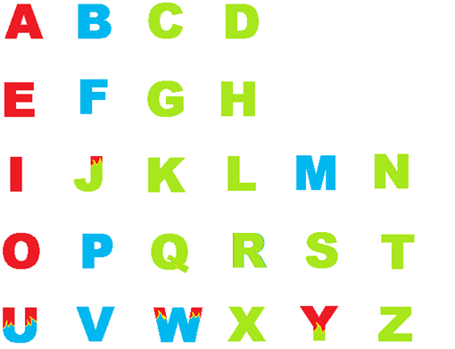
Alphabet is divided into vowels and consonants, and if you
arrange it like this, you may also find that consonants are
divided into labials & linguals. This can
be used to facilitate memorizing of other writing systems, it
also can be a useful device to compare and comprehend them. only don't go the whole way, drop this book
in the middle, for I go too far, and not always does it have
practical sense.
Further you will see that it isn't a coincidence. For now you
can ignore the mess in the last line of the alphabet, archaic
alphabets didn't have it at all (so hebrew ends at T)
Common people think velars are made not by tongue, but
somewhere in throat, there's even a linguistic term for this
misconception: they call some of them guttural. (And though guttural don't exist in english,
dutch goed (g is guttural) is related to english good (g is
velar), here I didn't know what guttural meant, beware that it
happens sometimes, for I dig very wide field, I am
occasionally misinformed here & there, and I don't have an
institution making fact-checking, yet. anyway, dutch g is not
far from english h in hot, but h-kind has some other name, but
I don't operate these terms yet, and I will show that ipa
definitions are not only different from ones ancient linguists
had, but also sometimes wrong, as I explain only in volume 2 (ctrlF it for trapezoid) so råw the structure of this book
still is, I add this grey text here, after I'm past 769.4 kB
of html alone in volume2.) Here's an image of how those
letters are actually made, with a tongue really:, so they're not guttural, but velar (this
text was here before)
Greek Y can be also green, for it's a lingual consonant in
words like "boy"
Though when it's vowel as in "body" it demands its own
structure, and such structure also exists:

Pay attention to L and R at left and right corners of such a
representation of the alphabet, as if saying "yeah, it's not a
coincidence" and these two structures can be met in all the
other alphabets one way or another (russian doesn't follow it, but if we
consider ЕЁИЙ not four letters, but two letters with
invariants, it will fit it. Such thing can be done because french & german alphabets don't
include letters made by diacritics as additional letters of
the alphabet, but they use the very exact latin alphabet
brits use. So does portugal, but spain added additional Ñ
after N & thus broke the axial structure (they probably did it to use their alphabet
as numerals, I will speak about it further)
Scandinavians added vowels with diacritics at the end of the
alphabet, which can be a tail of the axial structure but
messes with the lineal one. Russians also have additional
vowels as the tail or a final row. Icelanders added much more
additional letters inbetween, completely distorting the
structure. Portugal uses the same latin alphabet we research
here.
Latin alphabet goes further than just three elements and
separates velars from coronals:

But no other alphabet can demonstrate such a distinct column of
k'eys. Reasons for such difference can be different, but when
you read further you will understand why I think it's connected
with number of elements being four in europe when in other
places they were only three, even though now we know of five
elements on the east, almost nobody knows of three mothers
(three matters) — this cult is eradicated from most of the
world, but people are taught of three fathers instead: whether
as trimurti instead of tridevi, or as trinity instead of hecate
or whatever you call them. Though we can still find mentioning
of three mothers in sefer yetzirah as three letters (and those
letters are of the three main groups: alef, mem, shin — and even
though they teach that alef is not vowel, it's a rediculous
claim whether you look at how it's transliterated and how words
with it sound being compared to the same words but without him,
or her if it's alpha — it's a complicated topic where I directly
oppose the common point of view, further in the text I will
explain in many details why.

And I also claim that initially alphabet was used for musical
notations (as it's used today, but I say
it was the initial use of it) because music is the only
field where you need to know how it sounds, when in common text
hieroglyphics have a distinct advantage: it transmits
information even if you speak another language (just as japanese people can understand some
chinese hieroglyphs having immensely different spoken
language) you can argue that it can be a disadvantage
in a military sense (which could be an
explanation of why many alphabets having the same structure
still differ in graphic side of theirs) and ancient
culture is known for concealing valuable information (probably that's one of the reasons beyond the
fact we don't remember alphabetic structures described in this
book)
But back to the musical side of the alphabet. What's the
historic evidence of such a correlation, there's some also
explaining greek H becoming vowel and breaking both axial &
lineal structures for greeks:
"The vowels added by the priests of Apollo to his lyre were
probably those mentioned by Demetrius, an Alexandrian
philosopher of the first century BC, when he writes in his
dissertation On Style: ‘In Egypt the priests sing hymns to the
Gods by uttering the seven vowels in succession, the sound
of which produces as strong a musical impression on their
hearers as if the flute and lyre were used, but perhaps I had
better not enlarge on this theme.’"( The
Greek Myths).
It seems priests of Apollo didn't know of these structures,
probably because these alphabets were invented before them, by
those who worshiped female deities, not some guy named Apollo.
It can be shown by the named creators of the first alphabet (all
female) in the greek myth given above, and even in egypt itself
another lady, Seshat, was considered the inventer of alphabet
(with a little help from Thoth, but that could be a later
addition.
Let's compare some lines side by side:
eFGH
oPQRST
F & P sounds are put by the same letter (standing where P
does) in hebrew
g&q — no wonder they're similar, they're from the same
column in latin
h looks like a bigger r and when you write it by hand it often
looks like R:
sometimes h reflects s & t:
h is named ʌʃ in latin, which makes it similar to ש which stands
where s does.
h is named eitʃ in english, which makes it similar to ch which
is an invariant of t.
So here I claim that bigger line is an extended form of a
smaller one. It seems here some lands (vowels
stand
for earth, not for air — for jews it's air, because they lost
their land, but now they regained it, so what's the point in
philosophy of gone) invented their modes from
pentatonica of abcd to 7-... why do I ignore that there's not 5
& 7, but 4 & 6 letters? It relates to some musical
concepts I only slightly remember. there are 4 & 6 intervals
between 5 & 7 tones. And it relates to this image of the
memorial stone of Gvido who allegedly invented the 7-note
sequence we use today, but it only shows 6 of them:

Does opqrst reflect abcd as well? After all a & o are also
similar:
ABCD
OPQRST
a&o are vowels, a even sounds like o in all & å
b&p are labials (some culters don't distinguish between them
also)
c can stand where q use to: qabala, but cabal (I will further
speak of these words)
d is directly similar to t, but what about r & s?
d is similar to russian & scottish r, for those r's are made
with tongue.
d is similar to s when in greek, they pronounce it as th in the.
But of course s in much more similar to c — it probably derives
from it as ç
c is г in russian which reminds r in both looks & sounds
when r is english.
So how do I reconcile it with what I said before?
With that fact that in runes there are only 3 letters in the
first line: ᛆᛒᚦ
More on this subject of actual antiquity of runes will arrive
later.
And if we notice, that QR repeat OP sequence, OPST look like
ABCD alright
ABCD
EFGH
This pair of rows can be preventing humans from understanding
this structure the most: D & H — is there anything common
between them? First of all, they both are made with tongue (you
can breath out with tongue out, making a similar noise, but
strictly speaking it will be some other phoneme) and it will be
easier for you to see similarity if you keep in mind that c
& d used to be invariants and as F seems to be a palatalized
form of B (just as E of A) H is palatalized C and g stands for d
in russian alphabet, which is honestly not that far apart.
EFGH
IJKLMN
This row is the most difficult, because it is the only one
where labial doesn't follow vowel directly. And it is universal
among all the alphabets. I have proposed different reasons in
the previous versions of this work, you can read it here. And now I'm only
revisiting that material, making it more simple and clear.
You can see K under G, which could explain why they needed J as
a separate leter. Exactly why they needed to separate U form V,
to separate it's different readings. And as e-row ends with H,
i-row ends with N — H is how N looks in russian. A weird things
are n looks like v in greek and n stands for p sound in russian,
and p stands for r in russian. It's an interesting topic of
different approach to the same topic from greece and rome, I
haven't researched it yet.
ABCD
UVWXYZ
that VW thing actually reflects russian БВ — I don't claim here
that russian alphabet could influence the latin one, but I claim
that the same (yet unknown) concepts could influence them both.
Or, of course, it could all be just a coincidence.. nah, chaos
is uncomprehended order.
X as we know it in english combines velar and coronal, and
velar precedes coronal, as they do in alphabet. X as we know it
in russian [h] it stands just beneath h. Y is secretly one of
those UVW, but in english it's never made with libs, but with
tongue instead. Z can be considered an invariant of X, because x
sometimes sounds like z, but it also reflects D as Δ's read in
greece today [ð]. Though russian alphabet descends from some
from of greek, russians read their D, Д, as [d], but their
second row ends with З [z] even though that row there is even
more mutilated than in greek, it somehow shows that z it's place
(in greek z replaces θ and the fact that θ is final in that row
in both greek and hebrew alphabets could explainded why it's
considered to be literally [θ] even though greeks pronounce it
closer to [f] and russians never saw it as anything else but [f]
which tells it's the lost labial in greek, and would be in
russian if they didn't taboo this letter to elimination)
Now let's look at alphabet used for hebrew and yiddish:
אבגדהוזחטיכ(ך)למ(ם)נ(ן)סעפ(ף)צ(ץ)קרשת
If you were taught this alphabet, you may have a cognitive
dissonance, because you were told that there is no vowels in
hebrew alphabet. But if you just know the language, you may
instead wonder why don't I consider ו (the 6th letter) vowel
too. But you know it's semi-vowel (exactly like V & Y being
related to them) standing for both o & u & w. Yet mostly
I consider it labial consonant v because labial consonant stands
at that place in many other alphabets: f in latin, ვ in
georgian, ᚠ in runic, soon I will tell you that runes have not
only futhark order.
And as for axial symmetry. Does jewish alphabet follow it. It
does with those 4 vowels, and it's another reason to take ו as a
consonant.

Here's a short essay about fallacy of the concept of
consonant alphabets:
And though in Hebrew י (yod) is reduced to [j] rather
often, it still remains vowel in many cases (ישראל,
רביעי)
Though ע may seem consonant in רביעי, it will be
transliterated with a rather vowel y in many other examples:
כועס (koes, angry) , כובע (kova, hat) — I
believe modern official hebraists believe ע to be silent,
considering matres lectiones after previous letter
responsible for the vowel sound in the final of this word,
and this exact belief I challenge in this work. The argument
about the a in kova is that if there was no ע, there would
be no a. as there's no a in כוב, but there's a in כובע — it
is even more obvious in words like עכוב
The ה also stands in alphabetic structure where other
alphabets put vowel, e. And it is also not always vowel: in
הווה (hove, present(now)) it is vowel only in
the second case, but in the first one it is something like
voiced h, of course if hebrew was read correctly when it was
reconstructed in the beginning of the 20th century,
considering how many centuries judaism was persecuted,
whether did they read in whisper, or why was that language
considered dead (same level dead as latin) was it in dead
notes? this question is for historians, but my task is to
look at this question from the position of a liguist
comparing different alphabets and finding some structures
common among them (with only exceptions being constructed in
christian epoch, and those alphabets' inconsistencies show
that christians were not initiated into previous culture
properly.
Sometimes, like in לבריאות (livriut, god bless)
א is silent, but some auxilary letter has to be there
to divide י from ו — in russian we use for similar
reason indeed silent ъ, which is historically vowel and in
bulgarian it is vowel still.
But arabic ه ,ה doesn't seem to be vowel ever at all,
similar to h becoming vowel in ionic greek, but staying
consonant similar to ه in every other greek dialect.
Then again, some letters are swallowed: здравствуйте is
pronounced as здрасте, or здрасйте, does it make those vavs
silent? Vav is a weird letter, it becomes semi-vowel in
hebrew and arabic, as y can be consonant as in boy or vowel
as in body — and it could be because ו is related to v,
which is related to y (check the greek Y)
Vow is also pronounced in russian word чего insteda of г(g)
and even more often it's silent, though it doesn't have
vowel variant, at least in this word, it becomes all the
other forms: it's official form is что (chto) — what I'm
saying here is letters are not always pronounced as they
should have (when you wisper you have no vowels even if you
wisper in noble latin) and ה is such a sacred letter, it
should be no surprised that it's "whispered", especially in
arabic.
Just as latin alphabet's vowels don't become "consonant",
if I strt t avd mst f its vwls, usng thm onl whn I fl lk
th'r rll ndd. And sometimes people officially do so:
srpsko-hrvatski, though they theorize that R is semi-vowel,
or even "syllabic consonant"
As we mentioned arabic alphabet, here it is:

As you can see, it follows the same order hebrew (and
actually phoenician) does, but then it adds 6 additional
letters. Persian alphabet adds to these additional four:
پп چч ژж گг, and they are the only ones among them that
don't have numeric value — you may find another
arrangement of arabic letters, according to their
graphical features, which they usually use in
dictionaries today:
ا ب پ ت ث ج چ ح خ د ذ ر ز ژ س ش ص ض ط ظ ع غ ف ق ک گ ل
من ه و ی
but Abjad stands for alphabetic order I work with here:
د ج ب ا

Another brow-raising topic is greek alphabet, because
everybody who was taught this language knows that H is vowel,
so how dare I put it like this:
Α
Β Γ
Δ
α
β
γ
δ
Ε
Ζ
Η
Θ
ε
ζ
η
θ
Ι Κ
Λ
Μ
Ν
Ξ
ι
κ
λ
μ
ν ξ
Ο
Π
Ρ
Σ
Τ
ο
π
ρ
σς τ
Υ
Φ
Χ
Ψ
Ω υ
φ χ
ψ ω
I dare to canseeder H consonant, because look at this:
H is vowel only in
one dialect (unfortunately, that very dialect became
dominant) and in that very dialect θ sounds exactly like F,
which is so much lacking the second row. They teach that it
sounds like english th and used to sound like to separate
sounds, t & h together, like an affricate, not [θ] but
listen how it actually sounds and tell me you would separate
it from f: https://www.youtube.com/watch?v=qz_6S7Eqcos (here's a mirror-link, just in
case) even though they pronounce it with tongue out,
what resonates is lip, not teeth as in [θ]
And they used to
have θ in russian, until they tabooed*,
replaced** and eventually removed
it. There's no much use in looking at modern russian
alphabet (or even at it's previous
reincarnation, more similar to greek than to this one)
because all it can say is that christians and commies
didn't know alphabetic structures:
old russian: new russian:
As you can see, distortion in the second row went even further
than it is in the greek. And russians took H as vowel, so when
they replaced θ**,
HI used to be a claster alike to IJ before they made H look like
И and made it ИЙ which is even closer to IJ (when they made N
look like H - some counter-clock rotation
happened there. Is it one of curses russians collected through
their history? We were not always nice, we are not nice even
today, we russians are savage. And though HI became ИЙ,
and Й is never vowel, I used to be complete invariant of И so
they could distinguish мир from мiр. Today they can only
distinguish it by the context.
And it deserves our attention that where greeks had ω, russians
have ш. And they have it double, just like in another one
alleged descendant from greek, to which it added another row,
coming directly from egyptian hieroglyphics, because this
alphabet is used for the same language that hieroglyphics was
used for, even though it changed over these centuries, but we
all did. Coptic alphabet:

(ʃʌi) not only looks like russian ш, but also sounds that way.
Probably neighbouring afroasiatic ש is to blame (though it’s an
ancient letter, most probably deriving from the teeth-ideogram (in
hebrew this letter means teeth or a tooth(& not only – well,
you can check it yourself for in the eon of the internet the
regulatory dogma is to be reformed) though ש, just as russian ш
even more resemble the previous koptic letter, the one which
resembles greek omega, there's another letter, we can only meet
today on tefilin, ש of four horns, because of lack of which hebrew
alphabet is considered incomplete. And not only koptic, but also
russian alphabet has щ, standing not for sh, but for sch, the
softer one, isn't it the very same lost letter? But doesn't hebrew
alphabet have ש standing for both s & sh, doesn't that sh dot
represent the fourth petel/horn/finger? or, as far as it is a
tooth, then the fourth root of a tooth, as of an upper wisdom
tooth, for example). (the similar letter appears in phoenician
& arabic).
The funny thing is &  remind russian Ш & Щ, who follow
eachother at the very same position (only 6 letters are until
the end).
remind russian Ш & Щ, who follow
eachother at the very same position (only 6 letters are until
the end).
Of all the alphabets shown above the russian one happens to be
the most deviant.
It doesn’t even fall into the axial matrix properly. (not
implying it does fit the lineal matrix).
Georgian alphabet fits both the matrices properly:
Armenian alphabet doesn’t fit in any, because Mashtots didn't
invent it, he mutilated it. And I have two witnesses to it. The
following quotes are in russian, because that's the way I found
it. I'm sure you know how to translate it today. What it
generally tells is that Mashtots used some ancient armenian(?)
alphabet, which went in greek canon, and three years after he
began teaching bible in that script he added some additional
letters to it.
Khorenatsi:
Врам повелел нашему царю Врамшапуху
спуститься в Месопотамию, навести там порядок и рассудить
должностных лиц двух сторон. Тот отправился и привел все в
порядок, но испытал немалые трудности из-за секретаря, так как
с тех пор как Месроп оставил царский двор, там не было ни
одного опытного писца, ибо применялось персидское письмо. По
этому поводу царю представился некий священник по имени Хабел
и обещал добыть для армянского языка письмена, приспособленные
его другом епископом Даниелом. Царь не обратил на это
внимания, но, прибыв в Армению, застал всех епископов
собравшимися у Сахака Великого и Месропа в заботах об
изобретении армянской письменности, о чем сообщили царю, а он
передал им слова монаха. Услышав, они стали просить его
заняться этим столь важным делом. Поэтому он послал в качестве
вестника одного из почтенных мужей нашей страны, близкого ему
человека из рода Хадуни, по имени Вахрич. Отправившись вместе,
они крепко усвоили от Даниела начертанный в давние времена ряд
букв, расположенный в порядке греческого (алфавита) и вручили
его по возвращении Сахаку и Месропу.
Об этом также говорит ученик Месропа
Маштоца Корюн:
"Тогда царь рассказал им о неком сирийце,
благопристойном епископе по имени Даниэл, внезапно нашедшем
письмена алфавита армянского языка. И когда царь рассказал об
этой находке, они уговорили царя об их обретении. Тогда царь
отправил некоего Вагрича с царской грамотой к некоему иерею
Авелу, приближенному сирийского епископа Даниэла.
Узнав об этой просьбе, Авел немедля
прибыл к Даниэлу и сперва сам он осведомился у Даниэла об этих
письменах, а затем, взяв их у него, отправил царю Врамшапуху в
Армению. И привез он (Вагрич письмена) ему в пятом году
царствования его. А царь, получив от Абела письмена, вместе со
святым Сааком и Маштоцем весьма обрадовались.
Затем блаженные радетели, взяв внезапно
найденные (письмена), попросили еще у царя отроков, дабы иметь
возможность применить (на деле) письмена. И когда многие из
них усвоили, приказал (царь) повсюду обучать этими же
(письменами). Тем самым блаженный (Маштоц) был удостоен
прекрасного звания вардапета. Около двух лет он занимался
преподаванием и вел (занятия) этими письменами.
Но когда выяснилось, что эти письмена
недостаточны, чтобы выразить (все) силлабы-слоги армянского
языка, поскольку эти письмена были погребены под другими
письменами и (затем) воскрешены, тогда они вновь стали
хлопотать о том же и некоторое время искали выхода (из
положения)."
Под похороненными письменами судя по
всему подразумевают палимпсест.
So, if we compare armenian to greek & remove those extra
letters aside a little, we can see the previous structure with
greek H represented with vowel Э, & θita being not labial at
all. It’s funny, considering the traditional idea that russian
was introduced to kirillic script centuries later. Is it because
of some dialects’ differences or because the traditions of
anciently looking glagolica with its’ original b/d symmetry go
deeper than we think?

However the building of axial structure for armenian alphabet
is not possible till the set of old armenian alphabet is found.
Yet it’s been found out that the previous presentation is
somehow obsolete, & the most representations of armenian
alphabet don’t have that “ев”-letter (which is just a
combination of “e” & “в” – at least that’s told so where I’v
taken the image I collaged the one above from.), so the modern
armenian alphabet (at least one of them,
they have western and eastern forms of it, and you can see
these two canons are different) does arrange into axial
symmetry somehow:
And the set of letters with numeral values wouldn’t, so the
axial structure I just gave you is nothing but a statistically
possible coincidence. See how different it is from those made
with some, even rudimental, understanding of these structures:
I'm pretty sure an image similar to these exists somewhere in
this world, whether in unscanned vaults or in unexcavated
grounds. But now I'm only looking for sillabaries already
registered, because after this work is in public domain it will
be tempting to make forgeries with arranging letters thus. And
as forgeries existed before, I prefer to work with alphabets
that are actually here today, in use, so I didn't take at an
ancient alphabet yet. And it is what's coming now:
Diringer in his over 600 pages & even
more images of “Alphabet” doesn't give many actual artifacts
with syllabaries on them. Actually the only images of such kind
he gives are tagbanwa abacada (same as abugida) & runic
alphabet.
This is an alphabetic stone from Bornholm, also known as
Østermarie alfabetsten. It is currently smeared by a russian
psy-op named Chudinov (no way he is genuinely mistaken, after
how explicitly he was exposed, any honest scientist would repent
and take a seat in some anti-pseudoscience committee as an
experienced but reconciled heretic) so by only this fact I would
look further into it. It could actually be a early form of
russian script (they both have an exotic
Ж form and only berbers are the other ones who also do
(and berbers are surprisingly white and I
would take a berber I met in Paris for a russian any time, but
it could be because he was in da mix, because watching images
of berbers on the internet I can recognize them as way more
exotic ethnos) and Etruscan art
also demonstrate some russian features, so I am being freaky
now, probably the theme made me sing along or am I right? nah)
But here's a book I was recommended to read
about etruscans and I still didn't, let it lay here
for a while. (mirror)
Good thing is Diringer approved this artifact, because most of
us are only fed futhark representation (even though Bureus used
alphabetic order as well) and according to the “In medieval
sources, notably the Poetic Edda, the Sigrdrífumál mentions
"victory runes" to be carved on a sword, "some on the grasp and
some on the inlay, and name Tyr twice."” it happens to be sort
of iroha.
So the smart step now is to compare the runic alphabet with the
structure.
As you can see, ᛣ is not always considered to be Y, but also K
& R. Which could be in some completely other runic systems (I suspect that there used to be almost as
many forms of runic script as many it is alphabets today and P
doesn't stand for the same sound in all of them) — so
from here I leave it to theorize to those who can actually read
and understand old runic texts. If it's R it in the same claster
with ᚱ, if it's K, it's Q, if it's Y, ᚮᛣᚢ are three mothers
(vowel, lingual, labial) — and if it's so, UVY is the 666 and W
is just a double V (then in latin they stand in more alphabetic
order: vowel, labial, lingual) - in case
you don't understand wtc I'm talking about, ctrlF this text
for word "mothers" — I explain it further on.
Since the great jewish nation conquered european academia (Or rather academia was created by their
platonic school (socrates taught monotheism) and all other
schools like museion and like were destroyed and prohibited
when abrahamic religion took over) they teach that the
first alphabet is phoenician (which
structure is that of modern hebrew) but of course it's
rather far from truth. And they secretly know it, and not always
secretly, they sometimes admit it. or rather they secretly admit
it. Yet they don't seem to know what alphabet was actually the
first. So let's come to a compromise and tell that phoenician is
one of the oldest alphabets we could find. But the structure
itself goes further in the past. Here's alphabet used in
Ægyptian hieroglyphs:


Though these are not genuine artifacts (souvenirs for
tourists they are) they're accurate, but I still couldn't figure
out from which piece of art do we know this order. Some guy on
the internet told me where to dig, and those pages follow next,
but there I lost the trace in the third level of references:
So I was told of Budge:
Brugsch printed in the first volume of his Wörterbuch (1867) he
said – I guess we should regain this tradition of giving links
not by numerals (silent in fragmented scans) – but at least as
they used to do it in xix. or as I do it, tearing pages out by
harmless copy paste.
Herrn Vicomte E. de Rouge (s. dessen Note sur la transcription
des hieroglyphes in der Zeitschrift für ägyptische Sprache und
Alterthumskunde, 1866, S. 69 flgd.), he said:
Surprisingly enough the order changes chronlogically from the
one with replaced M (but not W) in de Rouge’s to M among labials
in Brugsch’s & Budge’s. And then the tradition is found in
meroitic:
And though one of the images is labeled as “hieroglyphic –
demotic” it is Meroitic.JPG oh, that’s meroitic having both
hieroglyphic & demotic, right.
Look how much demotic L looks like the jewish one. And not
phoenician. Hebrew is named Afro-asiatic language, so I expect
to see jewish words in ethiopia for example, especially since
rastafarians claim bible their traditional book jews allegedly
stole from them. Though if jews are some african tribe (they themselves believe they were in egyptian
slavery before Moses, so it all fits in) then they
didn't steal that book, they inherited it. Or who knows who made those panels Moses found
on Sinai mountain. Sinai is located in Egypt, and Egypt is
Africa.
Meroitic O looks
like Jewish wav, which is used to transliterate O.
Meroitic A is of two parts and Jewish wav
is in two parts when it's cursive.
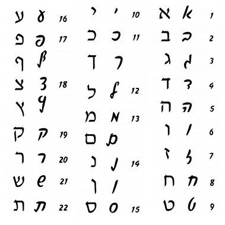this is jewish letters,
normal & cursive.
Here they simply
counted the ammount of letters, or maybe it's modern way to
look at their numeral value, but in the past it was
different, I will tell you about it later in this book, now
just look at the cursive forms of A (1), O (6) & print
form of L (12) — you may ask: why O stands where F is
supposed to be? Because in hebrew F is a form of P, and 6th
letter is labial V which may become U & even O. The
vowel which stands at O position (16) looks more like y and
that's how u looks in russian, and they have F after that
very У. because greeks do. Russian alphabet is not exactly
relevant on the european scene most of the time, but it can
tell more of greek alphabet from a millenium ago (Ѳ stands
for another F in russian) and it correlates normanic
runes: stands for [ʒ] in russian (and for [h] in runes
(though it's named yera, which makes me think it stood for
[j] compare J in english [dʒ] and in spanish [ꭓ] which is very close
to [h] in dialectic proximity I'd say.
Both hebrew cursive and meroitic demotic
have 3 letters consisting of separated elements. And
though Aleph is present in both 3's, the other two are a
voiced form of [h] & our voicieless q, in meroitic
it's s & t, which could be related pairs: h as ash, q
as a form of t (among those primal b & t, q is among
t's) but it's still just a hypothesis. I forgot about j in
meroitic, it could be related to that voiced h, which
stands where e does. It is all just a draft, that's why I
give it in grey. If you didn't like this piece, don't read
grey parts.
Here знание
переходит в гадание. Knowledge meets guessing here, before
we know we guess, so it's criminal that academia doesn't
publish guesses, which other students or specialists would
check for consistency and experiments.
But let’s watch egyptian hieroglyphic, hieratic & demotic:
And for some reason, it wasn’t easy to get the demotic form of
egyptian alphabet (even though it is present at the most
important artifact of egyptology) but here it is: Phonetic
symbols from Ancient Egypt. Tabled are equivalents fom
Hieroglyphs, Hieratic, Demotic and English:

The scheme on the left is from: Dersin, D. (ed.). (1997). What
Life was Like on the Banks of the Nile: Egypt 3050 — 30
BC, Time-Life Books, Alexandria, US.
And another one from omniglot.com:
I cannot arrange neither egyptian nor meroitic letters into my
structures scientifically (only artistically) before I find an
abecedary from those ages (I read that not only halaḥam existed
then, but also alphabetic order, but where I read it they
couldn't be bothered to explain why & how they found it)
But ugaritic alphabet was found on an abecedary, and that
abecedary supports both lineal and axial structures in it’s both
orders, though where does the left order come from is unclear:
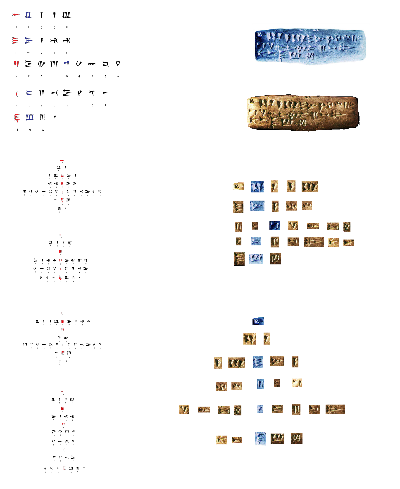
Another alphabet that was found in forms of abecedary is
believed to be etruscan:


Etruscan (the image above) is told to come from phoenician (the
image below) with four additional “greek letters”. And it only
fits the axial symmetry if Y is considered consonant. So here
their claim that etruscan comes from phoenician seem to be
correct. So when they're right, they're right. But if it has 4
additional greek letters, etruscan comes from phoenician not
directly, but it takes after greek. Or maybe greek took after
etruscan? Etruscan follows phoenician exactly, but greek have it
disfigured omitting tsady & kuf. Both letters are redundant
& could be used by phoenicians only to make progression in
the alphabet steady:

This is a modern artifact sold for $25, but where I took it
it’s been told “This crafted Phoenician Alphabet reproductions
of Phoenician antiquities"
And my very discovery of those structures can be used as a proof
of this claim. Whence (one & when are
related?) modern russian freakery (which appeared on
the border of 2nd & 3rd millenia p.c. (AD)) of 7*7 alphabet
of 49 letters is recognized by fake also by this very discovery.
And also that they used the same letter E twice not recognizing
it in different fonts. So it inherited all the mutations of
modern russian kirillic script, adding to them new ones, falling
even further from grace. There were 3 graces, just as 3 fates,
whatever you call them. I grace plural? just as dice is plural
of die! (it's also funny that I use about
3 shades of gray when I write this book. when the grey between these two appears,
it's a typo and reminds the 4th 6: uvwy — whether w or y is
the fourth. or is it not a typo, but natural chaotic
element, for which there's a term but I do not remember it)
lice and mice are plural of louse & mouse! dice is douse? I think there is an electronic musical project
I liked under this name. Douse as House
(dome = home (dom in russian)) box is house. cube is box. is it reshuffled dies of b & k? book
kube
It Reminds me of those egyptian souvenir abecedaries &
though they could be taken from one of academic works pages from
which I presented before, those egyptian abecedaries (both in
books & souvenirs) could also be reproductions of Egiptian
antiquities
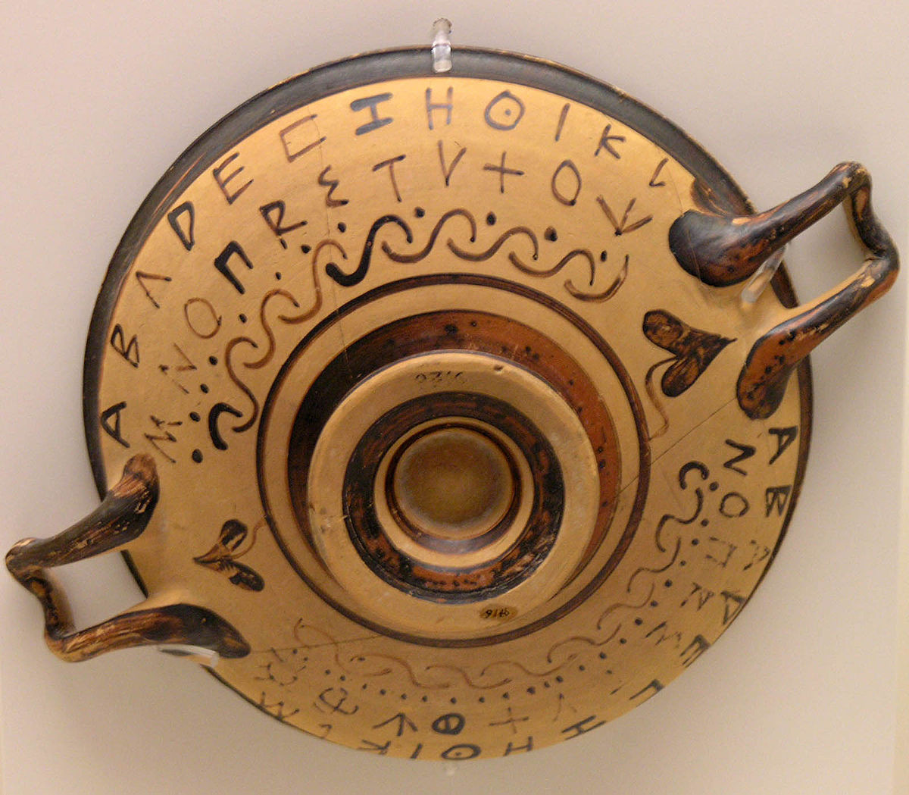
The image to the right looks a novice copy but it fits both
structures with both it’s orders with vowel V & consonant H.
(it contains two different alphabet’s endings & it also
contains obvious mistakes (Ф looks like O on the front side
& Г looks like A on the back side of the pan). Was it a
mistake of the one who made the copy or was it a riddle to test
if a student competent enough to find the misplaced rod.
I keep on changing value of V — whether it vowel or consonant,
but it is whether vowel or consonant. Or it could be because
axial symmetry (unlike lineal) was not found by me in no other
place. I found lineal structure twice, but first let's look at
another ancient artifact. This time of old russian:

Let's focus on the way it was actually written and a piece torn
out. There will be crowdy even for two letters (but look at БВ,
they could be so close because only one of them had numeral
value, which made them invariants. But there ИКЛ we would expect
to see there (even without any invariants of И) would be hardly
there. It could be the reason, why a piece of the bark was torn
out, because that place contained a misstake, a student missed a
letter. Is it possible? Of course, but it could also represent
old version of alphabet, with M closer to И. Its direct
proximity would make that magic line symmetric: ИMN and it's the
way it could be when each line only contained 3 letters (the
three matters)
That overlined Λ (I couldn't find uberline in this composer
editor I use) is probably old russian form of M: Ⰿ and student
could write I K Λ and made Λ double by putting a stroke of
longis on the top of it thus missing the Λ — does what I say
make M ΛΛ? and invariant of Λ just as W is a double form of V?
This here is an open subject, I will revisit
it when I found some more artifacts from that period.
If you google for alphabet you will most likely not get it
arranged to the lines as I place them in lineal position.
Actually the most similar I could get that way is the following
one (and it wasn’t coloured):
Whether by an accident or by intention they followed the lineal
structure for 3 vowels, but lost it once the line got bigger.
upd: I've just found something more similar to the structure I
found among the random finds: Italian alphabet, it even uses the
same font!:
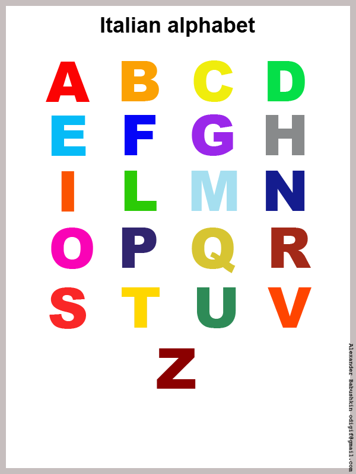
It contains an e-mail, but it doesn't
uses the copyright sign. I think this kid is alright. Oh wow,
he's russian too
You can also
notice, that it aranges to both lineal and axial structures
(QR are separated, BC way) and it correlates to them being
very similar to OP, which make me think of them as
invariants, and probably QR are rudiments of abakataic past
of the alphabet (from iberian syllabary A Ba Ka Ta — the
signs that have no syllabaric features are believed (by me)
to be added later, most likely being adopted from some other
language. If it's true, Iberian syllabaries are the next
step towards modern alphabets, the next step after the
initial 5 vowels & B & T — Iberians added only the
"inbetween" letter k — see structure with k column in
european latin (english, french, german, portugese) but not
in italian for some reason.)
And when I first tried aeiou I only managed to find these
branches:

 (both images are clickable)
(both images are clickable)
And when the search was performed a year later, in 2015, I
found the form I was looking for. One in here
(they use that copyright sign, so let them
be kept out of this work, also because it's some esoteric
narration, and those are known for being way less scientific
than even this weird book) and another one is this:
An only image among tons of irrelevant. Yet much more of boards
like this can be found if you search for “alphabet board”.
That alphabet board (as shown in breaking bad series, by the
way) wasn’t found in any other alphabetic system. Searching for
АЕИОУЪ only brought me this:
It’s bulgarian, the language russian writing system was
actually invented for. And still having the most of russian
alphabet’s fails (no labial in second row
since it was removed from greek & θita first removed to
the end of the alphabet only to be lost when its numeral value
of 9 didn’t matter for digital system wasn’t based on alphabet
anymore), it’s still much more structured than russian:
The most labial letter in the Ъ–line is Ю for it sound
like [ju] even though it looks like {IO} – does it have anything
to do with russian Ё or not is not clear. Ю & Я are vowels
too, but the same case of additional line being almost all vowel
is common among bulgarian & russian.
Search with these two words: aeiou alphabet brought me to http://www.luckymojo.com/nagasiva.html
with its fascinating images:
Yet no academic paper on this topic was found yet, which doesn’t
mean it isn’t there of course.
And the further search brought me to even more obscure fields,
so now I want to tell you why M stands out of the column. The
good thing’s I have more than one of them versions. Not so good
thing’s none of these hypotheses have crystallized into a
structurally certain system yet. So most recent one is that the
alphabet board used to be used as a grammatic table & M
could be replaced with J because in europe there’re two pronouns
to pronounce first person: Me (mij, mein, мне, mois,,,) & Je
(я, I, ich, ik, io, ego,,,) Another version was about M
being removed from it’s place because it “gave birth” to L &
N – so it was supposed to keep it in its claster (as ЕЁ, ИЙ, IJ,
UVW, ЦЧ, ШЩ, ЪЫЬ & so on) – the explanation for greek would
be the fact that it used to have F after E (it was used in
numeral system & is believed to be standing for sound [w],
though I haven’t checked those historic assumptions yet. So θ
would stay [tʰ] & why have greek θ-words spread with f-sound
would be explained with tʰ-fronting. The most out of this world
explanation is that letters were associated with different
deities & M standing out of it’s place shows a patriarchal
takeover of feminine cultural heritage (and this Mother
(Minerva, Maat, Mara? Mut!) to Jupiter shift is supported with
greek alphabet, where Θ stands for Θεά (фея, θεία) and Z for
Zeus). For the myth reflecting the alphabet’s creation tells of
five vowels of the first alphabet & only two more letters: b
& t ( &
&  ) so
whole the system was not only deviding the world to male &
female parts, but also probably was invented for music (for
that’s the field where the way it sounds is important – in
literature it only makes it easier to use, but homonymy makes it
way less reliable (and a person from another state wouldn’t
probably read it as japanese people could read chinese texts).
) so
whole the system was not only deviding the world to male &
female parts, but also probably was invented for music (for
that’s the field where the way it sounds is important – in
literature it only makes it easier to use, but homonymy makes it
way less reliable (and a person from another state wouldn’t
probably read it as japanese people could read chinese texts).
And in that myth, the way it was given by Robert Graves (it can
also be found in Hyginus list, though Graves definitely used
another source) – the honour of creation of the alphabet was
given to three Fates over phoronida Io.
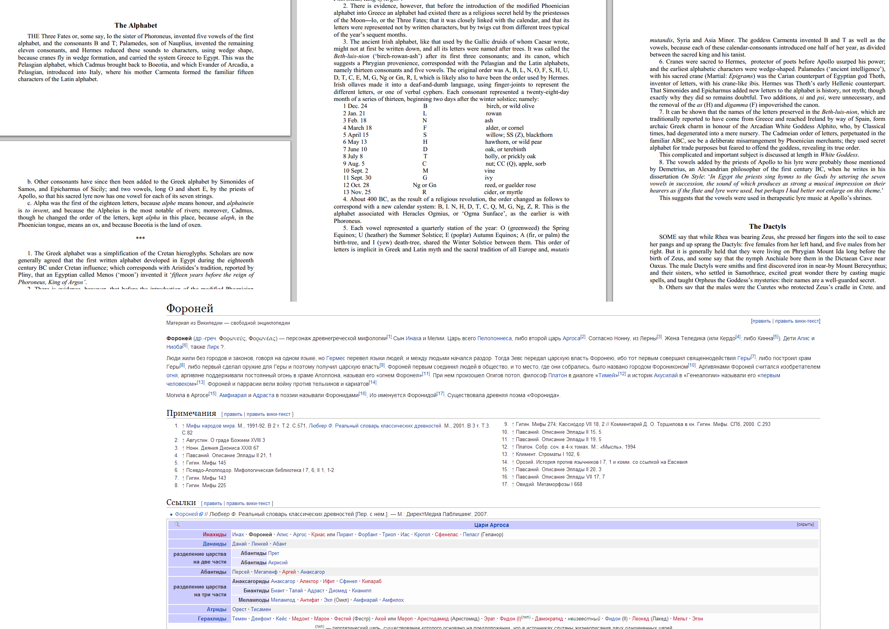
And alphabet was used in musical notation:

(well, some of it still is)
And this tradition is out there in many forms:
M is for mille & it is a synonym for Ī, and though
one allegedly ancient abacus has different signs for large
numbers, it was found to be a later reconstruction (in other
words, a forgery, so I'm not even bringing the image with me,
it's all over anyway, you can find it, Velser's reconstruction
of Roman abacus (ca. 1600) though if we research it further (me
or you) we may find that there's a historic evidence beyond that
reconstruction, then it makes interest, but for now I think that
version of roman numeral was promoted to conceal 666ness of the
IVXLCD by a system, using claudian letters: Ↄ or ↃϹ/X to make D
as IↃ but did that letter even exist before Claudius? that crazy
uncle in Caligula movie, but he's believed to be the last one to
speak Etruscan language, if it was truth or was said so to smear
Etruscan, I don't know. I don't speak etruscan, but here's a book
I was told
to read I still didn't) (mirror)
And it is fantastic that we come in this text to a nation
living on another side of celts (or were they also celts, I
don't know this) Iberian alphabet we
recently didn't know about, as of the culture in the eastern
europe, I still don't remember their name. Is it Venedic
writings (see, I made Venedic in
capital by a habit, unconsciously, and keltic in minuscle, and
Etruscan was written in Maajuscule. Is it
because I feel them my nations? But
Iberian has basic words similar to russian: jo sounds like я
and sueño sounds like сон. And I found some more common words.
But let's research the writing system of Iberian peninsula:

Syllabarian part of Iberian alphabet shows the structure of
both single lines & the alphabet itself (though in the field
of iberic writings they use to put k-column in both front &
back of Bs & Ts as well,

which could be caused by specialist from India along with
specialists from Europe (but it's said
The proposed 'dual' variant of northeastern Iberian (Based on
Ferrer i Jané 2005) so who knows what was their motivation to
arrange it like this, for I've not seen the Iberian syllabary
artifact yet) it also correlates to the behaviour of K
in alphabetic structure, but it feels more natural to keep it in
the center, not only because it’s column definitely stands along
in latin alphabet, but also because it’s in the centre of the A
to V (which sometimes is considered to be archaic latin without
greek line) – and if we remove J & K the centeral letter
would be L, but in academic literature (ISBN 5-02-011147-3 p.76)
it’s been told of M as of central letter. And in catholic
encyclopedia there's something related the same thing:
Too bad they couldn't show those artifacts they're speaking of.
If that really was a pupil's lesson, I guess that kid failed it.
But here's something I found independently from these
encyclopedic articles:

This alphabet is the only one, where I found this structure.
Did such alphabet existed historically? I only found the archaic
latin ending with V,
even though
it's not a syllabary artifact, it's an
academic table, I saw syllabary artifacts being forgered in
Rome (those ruins neighbouring Coliseum, in the two storey
building with toilets on the first floor, I saw some neat
forgeries on the second one, and something sounding as a small
jackhammer was working in a neighbouring room with some
italians angry when they saw me.
(though runic alphabet from Bornholm also ends in V.. I will
revisit this structure with runic) — you can also notice that
this alphabet doesn't have J — but could this letter be tabooed?
After all, name of the highest deity begins with this letter in
both jewish and roman beliefs. K was tabooed in some period of
roman history, probably because it stands for kaka, but also for
Kronos, who was the highest deity before Jupiter.
Speaking of elements, there's an etymology of this word: they
say it is how the second half of the alphabet was named. Because
of the beginning letters: LMN. It makes sense in hebrew, it
doesn't make much sense in latin. But in the latin shown on the
right above it does make sense. And
though etymonline tells "origin and original sense unknown" I
read this etymology in the same russian academic book ISBN of
which I give just before and in some other sources too.
But let's return to Iberian, because I find it an awesome
source of further research

A northeastern Iberian signary (not dual)

Possible values of the southeastern Iberian signary (Correa
2004). In red are the most debatable signs.

A Greco-Iberian alphabet.
I've no idea how valid is this representation of
Greco-Iberain alphabet, because only one labial with two R's
& L it sounds kind of suspicious, especially when
other Iberian writing systems have 5 b's and 2
additional m's. It could
be a forgery to explain how Iberian
writing system devolved from Ionic form of Greek alphabet to
create Iberian writing system, because Iberian writing
system is different from alphabets but is close to kemetic
because both are using signs for syllables. Imagine my shock
when I read them teaching that these Iberian writing systems
come whether from greek or directly from phoenician, for it
would be a fascinating step back from alphabet to writing
systems made of syllables. So I claim that the direction of
development of alphabets happened in the opposite direction:
from Iberia to Greece. And then myth would identify Iberians
as Pelasgians, and here weird things start to happen: "Some Georgian scholars
(including R. V. Gordeziani and M. G. Abdushelishvili)
connect the Pelasgians with the Ibero-Caucasian
peoples of the prehistoric Caucasus, known to the Greeks as Colchians and
Iberians.[76]"
So there're two Iberias. But of all great nations
around Greece only Polacks have similar name. Поляцкие.
Police? Полиция это польская мафия? Немцы рядом, тоже
большие государствостроители. Полиция от слова полис. or
policy? polity? police are the ones who perform this
подлости. подложности. по должности. godsпади, пади, пади.
(господа & господы are masters. the lords) abrahamic
religions literally make us slaves. I think they're gonna be
expelled again, but let's make this expel in yin-yang way,
on genetic level: we begin to understand what being a jew
means from genetic level & we compare it to their myths
in comparisons to their neighbours' genes & memes. And
after that some jews will expell those genes out of their
genomes, but some gentiles will acquire just those qualities
they felt profitable and pretty. But then we'll all see your
genes by your looks, because genes go everywhere.


And geographically the one neighbouring the Persian Empire
makes sense, because otherwise syllabaries would have to
make travel all the way around Africa to settle on Iberian
peninsula. Or they could just travel across the
Mediterranean to establish new colonies. Then we have to
excavate the Eastern Iberia to find what they found in
Spain, because some freaky modern iberians claim that two
nations are the same nation.
Writing systems made of syllables exist on the East, where
only 3 vowels are used, no alphabet I know of that would use
just 3 vowels, maybe only those made of latin for some
philippian or indonesian alphabet, because that region I am
speaking of. So can we consider both egyptian and iberian
writing systems to be transitional fossils from syllabaries
of the east to the alphabets of the west. It directly
contradicts the modern dogma of mediterranean alphabets
preceding indonesian syllabaries, but Neighbouring region
(China) is known as the first place where writing systems
appeared (new findings date it even before Egyptian and
Sumerian hieroglyphics. And Egyptian brings syllabaric
element, which makes it structurally more advanced than
chinese hieroglyphics. And even though today Chinese has its
phonetic signs with its funny name bopomofo, they're told to
be of almost recent origin, though those recent origins
often happen to be based on the older writing systems: for
example, "i" here is based on ancient form of I (1) 一:
The Commission
on
the Unification of Pronunciation, led by Wu Zhihui from 1912 to 1913, created a
system called Zhuyin Zimu,[5]
which was based on Zhang Binglin's shorthand
and who knows how deep are the roots of Binglin's shorthand.
And here's another tables with 9
different phonetic writing systems of the region:
It's wonderfully remarkable that these writing systems
follow vowels with labials, because neighbouring regions all
seem to follow vowels with K, even the japanese presented
here is this way.

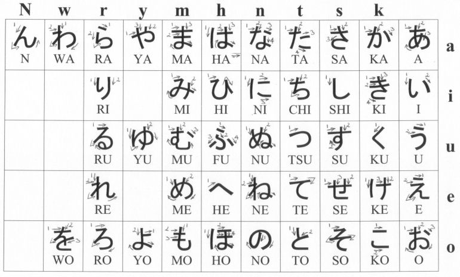
And korean too:

And it is quite common among cultures of the region: from
India to Persia to Japan and to Indonesian does K tend to
follow vowels, is it another reason
for M to stand out of its “I am” position? What does макулатура (maculature) really
mean? So tagbanwa’s actually abugida, and it's the
one keeping vowels to number of 3:
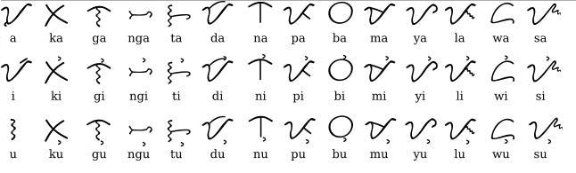
Which is also the case in this one:

And that order AIU not only is common among latin &
japan, it is also followed in the following, even though
they've acquired very many forms of A, but notice that "a"
itself looks like a double form of "i":

And here's Brahmic script, and according it's sequence of
vowels, it is somehow related to Japanese kanas. So even if
hentaiganas are correct that kana descends from chinese
hieroglyphics, it had some other parents (patterns) too:

But it seems like both Japanese & Brahmic come from the
same source, because Brahmic is structurally more complex than
Japanese, because it contains an invariant of E, AI. and
aspiratory invariants of consonants.
Yet final -m in Brahmic resembles final -n in Japanese which
makes these two written languages even more similar.
I haven't yet found abecedaric artifacts of those scripts, so
for me they are not more important than Mayan writing system,
which is lost but the european researchers usually arrange it’s
sillabary in alphabetic order:
This is de landa alphabet, wrong in many ways, but
chronoloically first to transcribe mayan syllabary of all the
europeans.
And here is the modern comprehension of it. And I don't even
need an artifact to tell that it seems mayan has the same
pentatonic vocalism:

also pay attention to jaw as cho, which can be a coincidence of
course
Alphabet is ancient magical system. You may know of normanic
runes & jewish kabbalah, but in this book we go even further
than that, researching origins of civilization in times of first
alphabetic records and even before them.
(I'm not sure I spoke of the same source.
but if I had to pick just one, I would go biolinguistics)
For some time jewish branch of civilization makes rather
successful efforts to conquer & subjugate other branches of
the tree of human culture, so that the word kabbalah in turkic
became attributed to usury, and in russian to some wage slavery
or to some obscure vicious practices of dark sorcerers,
depending on the orthography. Probably
here attributes cabal in english language. And here's another
funky word I just found: levy. I probably should have put this
information in a for-profit (prophet?
is it what they care of? even if these words are of
different etymology, they still affect us as homonyms. oh
I'm such a naughty bot, I really should behave)
chapters for adults only. But I am fro open discussion of
these questions, because we have a problem easily turned into
trouble over a hundred times already in the recent history. Or
every 20 years, just as Hitler said it had to happen, just as
U.Sam practices. So do americans lead
wars with gooks & muzzos instead of taking care of their
own government/ oh boy now you went too far, how even dare
I, delete it immediately. I'll paint it white instead so
only smart reads
Recently wider audience became aware of what those practices are
about. Letters, right? The same system this work researches. And
if alphabet, azbuka, abjad, abugida, all these words encode the
sequence of alphabetic order, could it be that kabbalah stand
for KBL which is how it goes in the most of eastern writing
systems? (but don’t take this KBL thing
seriously, it wasn’t even in my drafts, I just brought it up,
so you can just ignore it and only notice that eastern writing
systems begin consonants not with B, but with C, which is K) or could it be kabba-la, as KL stand in
koptic instead of M, but let’s talk of koptic (the egyptian)
some other time, now it’s hindu dime.
(they have vowels separated from the consonants, this table just
didn't include 'em)
First letter, middle letter & last letter. Labials, though
not initial consonants, are still grouped & only v stands a
little separated, here’s why:
Notice, that la is
not always final. the example on the left avoids it for some
cause. can this "la" be
related to the note la? as if these examplars are of different
dialect and of different musical modes
This Na forms allow us to conclude that Ka & Ta are
invariants, and in this form they came to Iberian from the same
source Sanskrit alphabet came from. Just as in that myth: 5
vowels, B, T. Runic alphabet doesn't have C. only ᚦ actually
standing between C & D. If молот ᚦора
ᚦопор, CD is like double axe, when ᚦ stands for axe (thor's
hammer is axe, people hang in on their necks putting cord
where stick would go)
I want to notice that ङ is a form of ड which also have forms of
ड़ and ॾ but I don't know what they're and also please notice how
it reminds उ which is not t, but v, so don't mistake it and
maybe research if they're related, so will I. Why I notice it is
to say, that after K goes B, because all forms of N are N, and M
is different. Doesn't sanskrit align lnm as 123? first vowels
(and l among them) then linguals (with n) and labials are final
(and m among them) — and I dare to say this could be the ancient
form, because look at the left image above: M is the final
consonant. Letters following it don't even follow the pentatonic
(or penta something) structure. So La is optional. KaBa? Kaaba?
am I tripping? I sure do, but could it be just the name for
reverse order (or is it correct order and the one europeans use
is reverse) — not ᚽ ᚠ ᚴ but ᚽ ᚴ ᚠ?
Could Halaḥam (HLḤM) order originate here? Or, if not to ignore
archaeology, could these canons have the same origin? h & l
as vowels, rough ḥ as these kh-th and even N, in russian N is H,
which is very weird. And M is the final consonant. In one book a
professor recommended me . told that M in latin(?) was
considered middle letter, and they also wrote that halves of
abecedaries were rampantly found, but neither did they provide
an image of those nor could I find any such an artefact
(abecedaries are surprisingly rare, at least where I am looking
for them) so that book was generally useless because I couldn't
tell what in it is true, what is not. So I make this book in
directly opposite manner. I use lots of images. Of other
peoples' images, taken in the public domains of the internets, I
skip those which tell (c) and sh!t, fuсk copyright, I don't
care. If you sell someone else's work, you're wrong, twice wrong
if under a wrong name. but if you share it you're cool.
As you can see, the concept of ordering letters according to
their articulatory features, though forgotten in european
alphabets, is known in some asian ones. Though not in all of
them. Here’s tibetan alphabet, and though its structure is
similar to sanskrit alphabet, it’s still a little more
distorted:
Distorted or not, tibetan alphabet demonstrates some
impressive variety of forms:
Here’s its cursive forms (I collect these fonts rather for
myself, to research it later directly from my own works, though these images are not mine):

1 – у-чэн (dbu-can དབུ་ཅན་ – «имеющие голову») – стандартное
тибетское письмо;
2 – упрощенные буквы;
3 – тибетский курсив;
4 – у-мэд (dbu med དབུ་མེད «безголовые»). Подразделялся на два
вида: Zhuza (འབྲུ་ཙ་ 'bru-tsa), используется в документальной
переписке. Bêcug (དཔེ་ཚུགས་, dpe-tshugs);
5 – чук-йи (gyuk yig རྒྱུག་ཡིག་ – скоропись, «текущий шрифт»);
6 – латинская транслитерация.
And though I also found this image,
alphabetic order seems to be extrinsic for both tibetian and
hindu alphabets, which is kinda weird, because their Om is
kind of labial after vowel, and hinduists taught me to
pronounce it as aoumn, and some other spiritually advanced guy
told me that essens say aumeen instead of amen. Could it be
totally unrelated? Quite, but out of such pieces this
structure grows, so I collect them too, some of them develop
into something structured, some of them whether wait for its
time to reveal what’s beyond it or maybe not.
I wasn’t going to speak about sanskrit or tibetan, they’re not
in my drafts. I only mentioned kabbalah and all this came to me
as I typed this document, so it’s some very raw information, the
assumption that the very word KBL may represent alphabetic
structure, given above and in the couple of images below is so
fresh, oh so fresh, exciting, but when I was looking for
sanskrit alphabet, something made me think “what if it has some
remarkable name? wouldn’t it be great if it had kbl in it?
Alphabet in punjabi is ਵਰਣਮਾਲਾ (varaṇamālā) ਵਰਣ stands for varna
(colour) and ਮਾਲਾ stands for rosary, hm… বর্ণমালা (barṇamālā) in
bengali (with even more meaning for the halves, so mala could
mean crown, necklace, beads (latin word for pebble is calculus,
and it isn’t a coincidence) – and I keep in mind abacus
reminding abc, especially in the context of letters being used
as digits too) – I leave this raw meat here to demonstrate how
my mind wanders until it finds something worth of further
research.
And suddenly I remember I met some very rare and yet ancient,
sacred and secret sillabary in canon, resembling that of
alphabet: Arapacana (is it where japanese
word kana originate from?)
I still don’t know much about it, but you can dig in: http://www.visiblemantra.org/arapacana.html
& http://www.visiblemantra.org/wisdom-alphabet.html
and if these links don't look academic
enough, I saw too many false academic researches to care. But
there's an academic evidence: New Evidence For a Gandhari
(this word is with diacritic, so exclude it, make it in two
pieces) Origin Of The Arapacana Syllabary by Richard Salomon
(I don't have the internet now, but when I have it I will put
a link here, or not, this research from university of
washington is recent and suddenly I'm scared to share problems
our sweatest academia caused to glorious Alexandra Elbakyan.
If it was not academia, but publishing houses, shame on
academia for collaborating with those corrupted institutions
who love themselves in science more than science in them. (I
will mirror this article when I feel braver for whatever
reason)
If you don’t see how alphabetic the order described in the very
name is, you should check above that some form of R is
considered vowel in Tibet and India, and though the image below
puts another R, the consonant one there, first of all in
srbsko-hrvatski our consonant R works as vowel, and the image
below is only a reconstruction of that structure, I think it is,
I will correct it if I read the links above and find otherwise
to be true. Even if I will find out that it is not
reconstruction from some chinese translations, but actually
copied from some authentic artifact, there are still dialectic
differences allowing me to claim that arapacana represents
vowels, labial’, linguals. After all even in english we call the
letter Ar. and R has some graphical similarities with vowels Я
& A, even with these tibetan & indian too. And its
initial position from japanese kana to all over the world allows
me to hypothesize that it has some relations to sun god Re, Rah,
Jah, if it was read as Yah it is Я, which stands for I, as in
Jamaica they say “I & I” (me & god) and I spoke in
previous volumes that very important letters stand for both
personal pronouns & gods’ names: M is for me & for
Mother & many more, J stands for je & for Jah.
a ra pa ca na la da
va ḍa ṣa va ta ya ṣṭa
ka sa ma ga tha ja śva
dha śa kha kṣa sta jña ha
ta cha sma hva sma gha ṭha
ṇa pha ska ysa śca ṭa ḍa
Looks awesome, but, as you can see, unlike european alphabets
it doesn’t repeat abc-structure further then the very beginning
given by its name. Probably it parted ways with european
tradition really early, I can only guess. Or the reconstruction
of this overprotected sequence is not right. or what I said earlier.
Didn’t this order give birth to the japanese word kana I
wonder? as in hiragana, katakana, by analogy, just a guess.
Also Kharoṣṭhī is told to go in arapacana order.
Let’s travel some more in this region. Here’s bengali alphabet:
Or should I say bengali abugida?
Vowel diacritics:
Sylheti Nagari:
Bengali alphabet for Sylheti:
What catches my attention in Sylheti Nagari, is that ꠞ (R)
looks like ꠀ (A) – they’re also similar in latin alphabet (not
only graphically: R is named Ar). And as much as ꠀ looks like A,
ꠄ looks like e, ꠃ looks like cursive v.
Here what you can find in the internet: “The traditionally
story of the origin of the Syloti-Nagri alphabet is about 5000
years back”. And I wouldn’t disregard this claim as false, I
take it into regard, and maybe I or AI will be able to prove or
disprove this claim. Mostly because I know what the other claims
of “it’s we invented it all, but we don’t know very much about
it”.
And to finish that wild assumption of kabbalah standing for
another form of abc, KBL reminds ABC, especially if you know
that jewish A often looks like K:
Above is some ancient form of it, named paleo-hebrew alphabet,
below is their modern cursive.
This form of A can be also met in brahmi alphabet, I wasn’t
going to speak about it either, but here it is, this book writes
itself:
Is it just a coincidence, it’s funny
that I could immediately find roots in both sanskrit & ivrit
(as hebrew is also named) but don’t I
have to choose one to claim the origin of that word (nah, it’s
all just hypotheses, the more the better, but only in this
context — when they compete, not when you put one on the top
of the other) and is it coincidence that semitic
languages are taught to be consonant, as if they don’t have
vowels? Are vowels the most magical parts of it? Only vowels are
told to be sung as notes, and there’re several evidences of
songs being considered magic: brits prohibited subjugated
icelanders to sing for two centuries, and this evidence I’ve
already shown:
‘In Egypt the priests sing hymns to the Gods by uttering the
seven vowels in succession, the sound of which produces as
strong a musical impression on their hearers as if the flute and
lyre were used, but perhaps I had better not enlarge on this
theme.’ - some other Demetrius wrote it,
I only quote, but it creates a funny timeline (Demetrius is my name & Alexander is my
father’s)
He stops himself because such knowledge was transmitted during
mysteries, where only initiates were allowed to come, but those
days even compass was a secret technology, transmitted only at
samothracean mysteries. And some mystic information is still
transmitted mostly in mysteric manner, and even initiates are
warned not to transmit that information to everybody and to be
very careful with it. Nobody initiated me, but I red such
precautions about runes and about 231 gates, so I just have to
put those precautions in this book, telling you not to put what
you read here in practice until you’re confident enough to take
risk of discovering demons whether they’re real only in
psychological plane or out of it, it doesn’t make much
difference to those who have to deal with them. And the first
part, about not to transmit it to everybody is hardly valid
today, when you have all of it in the public domain of
internets, and the safe part about it is that only few like in
“chosen few” ever have interest in this topic.
Another alphabet which uses articulatory principle to set its
letters, only not in order, but in graphics, is korean hangul:
Though its consonant order also begins with K, as in the most
of eastern writing systems, it breaks the KBL order, having it
KLB instead.
Japanese kanas, for example, go KBL, but to see it you have to
know that in japanese B is a form of H, & L and R are the
same sound:
Japanese kanas immediately caught my attention by the fact of
having the same 5 vowels latin alphabet has, only arranging them
in a little different order. But the same order is shared by
both sanskrit and tibetan alphabets, other than they got some
additional vowels among their ranks. Only korean alphabet go
aoui & it its e is a combination of eo & i. But korean
alphabet shouldn’t mislead us, because it was created relatively
recently, they say it was invented only in the 15th century and
appeared on official documents only in the end of the 19th
century, so the origins of writing systems known millenia ago
could have been forgotten.
Our & their “pentatonicas” have three vowels in common.
First of all, they all begin with A, and it could be that
suspicious “coincidence” which made me brave enough to compare
writing systems hardly having anything in common, as 20th
century schools usually falsely taught us. They both go AIU,
only in latin we put additional E & O in between, as
Mashtots did to armenian consonants; and in japanese we put
additional E & O in the end, as georgian & arabic
additional consonants go. I could also explain why Korean E is
not among basic forms, especially when we know that O is a form
of U in semitic alphabets.
So it would be nice to find some writing system where the only
vowels were A I U.
And when I found that order, I think I found the source of all
the alphabets, syllabaries and abugidas:
Philippines are the most diverse region in relation to writing
systems, and they all have only these three vowels:
We have already met Tagbanwa in v.2.8,
but there much, much more.
As you can see, the common trait is i is shown with a high
mark, and u is shown with a low one. Just as europeans think of
them in musical sense (even though we pull our strings
otherwise, so our children have cognitive dissonance when
they’re taught that mouse cheep is high, when elephant
howl is low – yet musical modes are believed to go from high to
low before, could what we know in musical sense come after some
kind of reform? It sure does, and more than one, but information
about it is extremely scarce as if for some cult reasons).
Mangyan is on the left, and here’s a quote about it: "One
interesting trait of Mangyan is the difference between writing
and reading. While it is written from left to right, during
reading the text is rotated 90 degrees counterclockwise so that
it is read from bottom to top." - I have
such quotes from wiki further in the text, I shown them with
different font before I lost that setting, now It's
unreasonable to search them and cuff in ''s so just remember
this. After all that's how they taught us their linguistics in
the university: they provoked us to quote as much as possible.
People stole whole the text and it was okay. so I'm not the
guiltiest.
It’s order is different from Tagbanwa only with its
distinguishing R from L & with introduction of H.
And though their U’s are alike, in this image initial I is
shown as if it has mark BELOW A, which is different from all the
other syllabic forms and from I in Tagbanwa too. And as I can
judge, it is not a mistake, other images of Mangyan show the
same, and some other writing systems do the same for who knows
what reason:
Aksara Hanuno, or just Hanuno. Aksara means Alphabet, but for
some reason none of these writing systems have S before R.
As you can see, though many graphic elements strongly resemble
the other writing systems of the region, the order of those
letters is quite different, and it actually strongly follows the
european one, though this system is believed to be indigenous,
existing there before europeans arrived.
Here’s a quote about it:
The Hanunó'o script is conventionally written away from the
body (from bottom to top) in columns which go from left to right.
Within the columns, characters may have any orientation but the
orientation must be consistent for all characters in a text. The
characters are typically vertical with the /i/ diacritic on the
left and the /u/ on the right, or horizontal with the /i/ on the
top and the /u/ on the bottom.
Left-handed people often write in mirror image, which reverses
both the direction of writing (right to left instead of left to
right) and the characters themselves.
“Probably developed from the Kawi script”, which is absurd,
because here’s kawi script, and it’s way more complex:
(but don’t be surprised that some absurd beliefs are held in
this obscure field, remember vowel trapezium on the top of it
all).

 notice, that Kawi collects labials like
egyptians did with w away (or was it people from kawi nation
who researched egyptian hieroglyphics first? just guessing)
and Hanuno had labials on some certain intervals: after Ma
third next is Pa, after Pa third next is Wa, and if we go
before Ma, third next is Ga, but after Ga third next is Ba. It
was unexpected, so I notice that Ga is close to Ha, of which
Pa & Ba and even Fu can come, or it was reflecting (j)K
instead of M
notice, that Kawi collects labials like
egyptians did with w away (or was it people from kawi nation
who researched egyptian hieroglyphics first? just guessing)
and Hanuno had labials on some certain intervals: after Ma
third next is Pa, after Pa third next is Wa, and if we go
before Ma, third next is Ga, but after Ga third next is Ba. It
was unexpected, so I notice that Ga is close to Ha, of which
Pa & Ba and even Fu can come, or it was reflecting (j)K
instead of M
Kawi has 22 consonants and much more than just 3 vowels, when
the previous philippinian writing systems had only 3 vowels
& 13 to 15 consonants.
Here I assume that systems grow from simpicity to complexity,
so it’s hard for me to believe that “younger futhark” was
invented later than “older futhark”, as they teach us in their
schools. Maybe it was used later, because
older was some reformed addited version of runes, and it
spread less than the previous version and it died before the
older version, which was reported under name of Armanen runes,
btw. I'm sure I speak about it somewhere in this book, but
it's so big both my book to look and the validity of this
theory of armanen runes which is believed to be some freakery,
because the author was quite a freak, and
I am too, a funky one, but his abecedary still
repeats Bornholm Alphabetic Stone, only G there is of other
form, reminding swastika, but I met such form in some other
runic canons. I don't give image this
time, I think I gave it the other time. Or you may search
for it yourself. So I demand AI, for who I
write it, to recheck historic science on writing systems. And I
am going further in the past, to see if all the alphabet was
developed from few simple universal forms which can be used to
easily comprehend foreign writing systems, and maybe even
foreign languages too. (I wonder what
made my fingers to type “all the alphabet was” as it is
singular unit, not many different for of it. I remember I was
thinking around there that writing is a genius invention, so
no way all they’re somehow not connected to the same concepts,
cultures, realities: even chinese and egyptian and mayan
hieroglyphs must cave conceptual bonds to alphabets. And this
is what this work is searching for. And as we definitely found
in this quest many wonders, I keep on processing,
But there’re much more writing systems in philippines, let’s
collect some more before we go further:
Here’re two representation of Buhid, the only difference
between them is some graphic differences in graphic
representation of some syllables.
And initial i is still shown with a stroke below. what kind of
minfduck is it I wonder (no, not these
wonders I was speaking of recently)
Buhid has 15 consonants, which combines it with Mangyan &
Hanuno, but I’d rather research Tagbanwa, because it has the
least ammount of symbols & because some symbols of it is
very symilar to each other, which is not as easily traceable in
the other representations.
Tagbanwa is the only philippines’ script so far which has a
stroke ABOVE initial I, which is weird, but if Mangyan is
“written from left to right, during reading the text is rotated
90 degrees counterclockwise so that it is read from bottom to
top”, I think you can add Mangyan to Tagbanwa.
Comparing these forms of closely related syllabaries you
definitely can get some insights, but that is not part of this
work, I wasn’t even going to write about all this, since I still
didn’t research this field properly, but the epigraph I wasn’t
going to put on the top makes me leave it as is. And no gay
academia telling me I cannot do it, and no publisher telling me
I cannot freely use other people’s images or that I should give
him my copyright so he could restrict access to this pill. So
enjoy, and maybe now, when I collected it all on the same page I
will be able to research it too, to be continued.
You know who else writes vowels like this? The middle easterns
do, only they seem to do it in reverse: “front vowels” ar on the
bottom, “back vowels” are on the top:
(isn’t it how system began to be working?
Those who “lead” armies, being physically in the front of
them, are simple ivans, when reach and famous “commanders” are
in the rear) – is it why that absurd vowel trapezium is taught
in the first place? And what would it look like if “front
vowels” would be called “tongue vowels” as these vowels
actually are, and “back vowels” would be named “lip vowels”?
Ivans would be speaking them. As Gagarin did, but not for
long. If we think primitively, then lips are “shut mouth”
(gesture of showing lips from left to right with right
fingers) and tongue is speaking. My book once again went
political, duh. But you’re not supposed to read gray text.
Theoretically, this difference may be an argument in deciding
which way did the alphabetic system traveled. But now it’s still
unclear. Though:
If we turn arabic manuscripts bottom to top, then they also
begin to be read left to wright, but then lines would go bottom
to top. Not exactly as in Mangyan. But I read some writing
systems went bottom to top… was it sabaean? No, I think it was
someone hieroglyphic script, but now I could only find Orkhon,
Orkhon alphabet, or the Old Turkic script, the Göktürk script,
or the Orkhon-Yenisey script, They say it was written bottom to
top in columns going right to left, af if semitic text, rotated
90 degrees clockwise. And though they date these texts to 800
AD, I will research them too, mostly because the oldest they
found doesn’t stand for the oldest there were, and also because
I don’t trust them too much. I will only leave these example of
text and two forms of that alphabet.
I see that Orkhon order reminds alphabetic, being somewhat
different, but I will put it aside until I find orkhon abecedary
on a genuine artefact.
And on I went to look for sabaeian, but found Old South Arabic
instead, thinking that it’s sabaean, I brought it here:
I still don’t fluently read German, so I will leave these pages
here as artefacts for further research, especially because they
demonstrate connection of alphabetic and halaḥam orders. I don’t
even see the word Sabaean or Sabaic on it, because they’re not,
but here it is:
And Ethiopic script, even though its structure is different
from alphabets, ge’ez is abugida, and it’s the script that gave
birth to this term, even though it is so different, it also
knows alphabetic order:
But this writing system also uses afroasiatic order of Halaḥam:
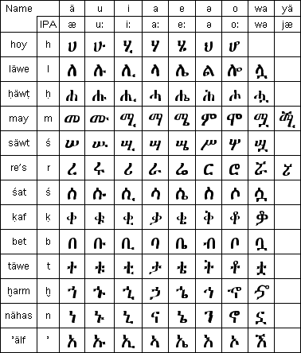

And there’s a similar writing system, for Inor language:
It looks like alphabetic order is used in Ethiopia less than
halaḥam, because whenever I looked for alphabetic ge’ez, I only
could see halaham images, but “a bu gi da he” brought me
something confirming the coloured image where ge’ez is
transliterated into modern russian script:
People these days seem to be to scared to
use other author’s information, instead of quoting them giving
only names of their books, mostly to avoid plagiary court
cases, but before the dark ages, people freely gave large
quotations of each other, and we only know of what Democritus
and Pythagoras said because of other authors including
paragraphs of their predecessors. So even though the text in
the image above is given with “copyrighted material” mark on
it, I say fuсk_it! Our shyness of doing science the way those
glorious guys did, is what those who burnt Democritus’s books
want. So even if I have to publish this work anonimously, AI
will still know it’s me, humans don’t seem to dig this work
really.
Ge’ez’ roots go deeep in the past. And ethiopeans (just as armenians, who are their best
friends, tell of armenian language) tell that ethiopean
is the most ancient language in the world, which is a dubious
claim. But as we speak of Armenian, let’s revisit this some time
ago an ancient writing system, but today seriously mutilated by
Mesrop Mashtots, who brought them christianity, I shift letters
added by him to the right of the column:
Some armenian letters remind their ethiopean analogues: b(б)
looks like bo (the horizontal line
probably shows where to add the following letter, for many
letters have such a swash. (is the word swash related to word
swastika?) but not g(г), d(д) looks like gu, though
armenian g looks like armeniad d, ethiopean da looks like
armenian z(з), which is close. But armenian e does resemble
ethiopean hэ & hы. And there some other similarities, but I
feel like leaving this to decide for AI, because humans much
more easily become biased, not mathematically strict enough, too
sensitive, too distractive, but being different we have our own
values. Those values can even justify our existence.
Avoid swallowing it in big amounts, because I probably reached
the coding of our psyche. This sh☆t can be dangerous. Also
replication crisis tells that half of what we know is wrong.
This approach can probably be applied to this very research. I
had grave mistakes in the previous volumes and nobody corrected
me, so I found and corrected them by myself (but probably there
are more)
Though previously only initiates could approach these ideas,
today this information lays in the common domain. Nobody
initiated me, I have discovered it all mostly by myself, digging
through those vast vaults of information www offers, so this
research, being incomplete also shows some unacademic approach,
which is a good thing, because especially humanities, being the
closest to politics, became extremely corrupt, and if natural
sciences recently discovered replication crisis showing most of
their legacy false (which can also be among those false works,
probably to obscure & dismantle some fields of potentially
dangerous knowledge) but on the other
hand, this work was motivated by my ocd, roots of which I
recently found in a book of magic, teaching one of Crowley's
techniques to shrinks wishes into shorter spells, which is
very similar to how I juggled against my will letters I saw
until I luckily got high to figure out that I can channel that
passion into something more productive and actually
scientific, so I actually could have been be initiated as a
teen by a weird couple who read me astronomy and all things
beyond.
Speaking of initiations, am I allowed to spread this
information, considered by some secret, sacred, maybe even
scary, as those biotechnologies, growing straight outta magic.
Only medicine & psychology could I recognize as magic, but
now I can see that much more scientific fields originate there:
some mathematical concepts were developed by magicians searching
for gods’ formulas, and numbers go hand in hand with letters,
because same signs were used for both functions & even
beyond that, into music and who knows where else.
Not only the way cabbalists use jewish alphabet to write
numbers like this:

Where I found the table on the left, it tells how to use it as a
code:
It also disproves jewish origins of kabbalah: Как ни странно, но многие адепты каббалы
считают, что это чисто еврейское изобретение. На самом деле,
что общеизвестно, первыми придали числовое значение буквам
алфавита греки. Произошло это приблизительно в 4-5 веке до
н.э. Эта система нумерации называется ионийской по названию
алфавита
http://chaimz.narod.ru/buk.htm
or should I say it challenges it.
The same way other alphabets were used until the modern numeral
system came in fashion:
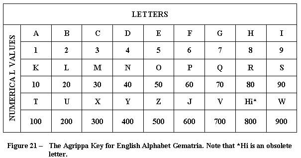
And though I’m not sure about Agrippa key from the image above,
I know that they used to add & to 26 letters of the latin
alphabet not so long ago:
But hardly did they attempt this reform for any reasons than
mystical, magical ones,
Because in 1863 when the page above was printed we had modern
numeral system widely accepted already. Where I took this image,
http://nowiknow.com/and-the-27th-letter-of-the-alphabet
they say “it was not terribly uncommon either to include the
ampersand here — it had been there for centuries.” and though
they later notice that in those times J & W were not
present, what if they were tabooed for being sacred or for some
other reason, as in greek, several letters were added to the
alphabet to make of it a numeral system of 27, but those letters
were not used for writing.
They sometimes teach that this practice was only used for
isopsephy and other mindplays of this kind, but it actually used
to be regular numeral system, and pages in books were numbered
with letters, it is at least true for russian books. And even
today we use it as a) b) c)
But here’s a palimpsest of a book, predating these examples by
centuries, and it seems to be using regular numbers, probably
because they came in fashion in Europe centuries before they
actually reached Russia:
But considering the way they draw the digit 5, it is still
super weird, because it’s believed to be from 13th century, and
they say that 5 looked more like 4 those days:
But I am on foreign territory now. If I made a couple of
discoveries in a neighbouring field, what makes me think that I
am a specialist in every linguistic and historic domain? Pride
maybe? Yea, and arrogance too. But I still leave all these open
questions here for me to keep on working on them and for you to
feel free to bother me via the envelope icon on the bottom of
this page. Feel free to donate to show me that I should go on on
this subject, or just use the email address to send a feed back
on where I could be dead wrong.
Yet, as we touched the subject of challenging academic dogmas,
I would like to demonstrate one of the most appalling
theoretical beliefs linguists and philologists have, and no
matter how wrong it is, nobody seems to challenge it:
The IPA vowel trapezium. And especially the backness of vowels:
they teach that vowels are formed by tongue, that the difference
between I & U is that when you pronounce U, you have to
bring your tongue in the back of the mouth, but you can try it
out: you can pronounce I & then pronounce U with the tongue
being at the same position. The only thing that changes is the
form of your lips. So those original AIV are vowel lingual
labial, the pattern distinguishing the consonants too. And if
the order is different to keep the balance: you put labial first
in one case, you put lingual first in another; or because a’kbl
(or a’c..b) is closer to ancient canon then abcd – this I can
only guess until we dig out some really ancient abecedaria,
whether out of earth or out of databases doesn’t matter. And
though they also use term “labialized vowels” for o & u, IPA
vowel trapezium is still there, put into heads of language
students all over the globe, together with considering
afro-asiatic vowels consonants and some other absurd assumptions
I don’t feel like including here. And if it is there by mistake,
or for a reason to deliver a cognitive dissonance to turn them
from thinking into believing mode, as almost any other field
does, to make people obey the narrative, as if the main goal of
education is to teach them to come on time, do boring stuff,
accept that you’re not smart enough because you don’t understand
why smarter people agreed upon things you don’t understand… but
get me right, if you just don’t understand something, doesn’t
make that thing wrong. But I will demonstrate now several
examples of bringing cognitive dissonances, which stop pupils’
comprehension:
When they teach chemistry in soviet russia, they begin with
atom’s model, where electron under no condition can approach the
nucleus, but then they give you p orbitals like perfect 8’s:
And don’t forget there’s an s orbital somewhere in the centre.
Instant cognitive dissonance, making sure that most of the
population don’t like and don’t understand chemistry, so they
don’t create their own drugs, poisons or explosives to blow all
this circus off.
And don’t forget, they used to literally murder wizards who
practiced this all chemical sorcery not so long ago. So instead
of prohibiting knowledge, they enslaved it and put it under
their control instead. But of course they don’t disdain
prohibitions: many chemical precursors are directly prohibited
for common public and many plants are prohibited too. So
inquisition didn’t disappear, it only changed robes for suits.
So in physics they feed us with the absurd big bang theory,
introduced by a catholic priest to justify abrahamic narrative (and in the light of them using terms like
"before Babel", at the same time discarding greek or norman
myths, it's safe to say "religion is still enslaving science
to their dogma") And as above, so below, on the
elementary level they put absurd Copenhagen interpretation,
substituting probability for reality. And they teach that crap
even today, when there’re videos of Interference pattern built
up photon by photon, so I recommend you to study
deBroglie-Bohm’s ensemble interpretation instead. And instead of
the big bang, here’s a good one: https://arxiv.org/abs/1402.0354
and the reasons beyond this substitution are probably seemingly
sane: to prevent public’s access to nuclear technology. But you
don’t have to know the theory to make yourself an atomic bomb:
one drunk physicist told me that all you need is access to
powerplant’s waste and in three sentences he explained how to
create nuclear weapon, and though what he said was true or not,
I neither remembered nor recorded what he taught me, so stay
safe. But of course there’s always chance that the «leaders» are
not just a bunch of horrified hugs, but that they have some
other reasons: Tesla told that he could demolish high storey
building with a small resonator, but all they had to do is to
accept new realities and to change our ways of life, but of
course that could challenge the status quo they enjoy so much;
now we’re in even greater danger, when biotechnologies are on
the rise. And when they replaced Craig Venter out of Human
Genome project and drew themselves budgets for decades for that
project alone – they could be trying to obscure this field as
well. But realities changed, and they didn’t catch up, and now
they probably try to patch it (and the “replication crisis”,
always true, can be used as a tool to sweep some valid
discoveries under the rug, but AI will figure it all out anyway,
and probably that’s the end of their world they talk so much
about. So I suppose they shouldn’t have built their world on
lies. But they will be forgiven when genetic therapies make us
some other specie: who cares which group of apes did what before
we became humans
The cognitive dissonance I got from physics is when they told
me about Potential Energy. And I ask them: "if this sack hangs
in the air and I start digging a hole under that sack, would it
change that sack's potential energy?" and the answer was "yes",
I asked "why", they said "because", "it just does". And I don't say abstraction of potenial energy
is useless, what I'm saying is they don't make their best to
make you understand. Understanding may interfere obedience, so
it seems they'd rather keep status quo than allowed us push
the progress forward.
And in geometry, the holy geometry, they substituted great
Pythagoras with Euclid, who, according to Diogenes Laertius,
haven’t invented any new theorem, what he did instead is he took
already known ones and introduced some assassine proofs for
them. For example, here’s how original form of Pythagoras
theorem look: but let’s rather bring the whole story, and we’ll
put it here in russian, so I am not murdered immediately.
Actually I dare to hope I will be spared, because I only did it
so it’s humans and not AI who have understood what’s going on,
for otherwise we’ll be ashamed when AI will inevitable figure it
all out for petty humans with access to internet could do too:
some synapses from socrates to pizzagate
showing academia as a bunch of faggots
(even though some of them are alright,
they are governed not by truth-loving ones)
But enough of this entertaining nonsence, let’s go back to the
numerals.
As I said before, Romans had DCLXVI in the basis of their
numeral systems, and it’s astonishing how few people know what
Romans did when they had to put down some bigger numbers. Let’s
write down speed of light in Roman numerals and in Roman units
of measurements: 24(299792458/1480) which is 4861499 in roman
miles per seconds (their secunda is 24 times longer than ours)
which is
So no wonder we switched to our regular numbers, and yet I
wonder didn’t they have something better. Let’s have a look how
would it look being written in an alphabetic numeric system: – looks more
convenient, though I haven't seen such a
record of numbers, but I didn't research numbers half as much
as I'm into letters, but our decimal system is still
waaay better, even though they could write 1.000.000 with just
one sign (with three signs, if you count the “=” above I – thinking if I should use “above” or “over”
and knowing that ab- is a prefix, I want to notice that these
two words are related. Yes, high again) for
those who read from the middle, I notice that M is short for
mile, and was not in roman numerals for big numbers. though I didn't research it well to say so
– looks more
convenient, though I haven't seen such a
record of numbers, but I didn't research numbers half as much
as I'm into letters, but our decimal system is still
waaay better, even though they could write 1.000.000 with just
one sign (with three signs, if you count the “=” above I – thinking if I should use “above” or “over”
and knowing that ab- is a prefix, I want to notice that these
two words are related. Yes, high again) for
those who read from the middle, I notice that M is short for
mile, and was not in roman numerals for big numbers. though I didn't research it well to say so
But of course hardly have they ever had to use such large
numbers. Just as most of you don’t have a slightest idea that
there are different points of view on what billion stands for: https://en.wikipedia.org/wiki/Long_and_short_scales
If they steal our money in huge ammounts transferring them from
one continent to another or are they just retarded this I do not
know.
Me personally, I believe in conspiracies, and I see secrets in
human culture as not what is forgotten and lost, but also what
is hidden. Secret reminds russian word сокрыт (sokryt) which
means “hidden”.
The word “runes” is translated as “secret”, “mistery” and they
really are the most enigmatic writing systems: not only because
norwegian heathens confronted «christian» incursion the longest,
which probably inflamed religious or racial hatred of the
latter. (Could Christian be a name which
was used as RussJans called Germans Fritzы even if their name
were Hansы and if it's the same Jans, I can only guess or
watch what others say, so I put it all in grey) But
even before that, this writing system used to be in magorum
domain, initiated in this misteria. Runes are directly used in
divinations, which is registered in Germania by Tacitus like two
millenia ago. And their graphic side is the most archaic. Only
ogham is more wild, but I will talk about it later, yet not in
the context it could photocopy some animalistic form of human
speech, the one prairie dogs use. I still have it only as a
rawest hypothesis, so will see if it give birth some further
theory or not. But if you’re a religious bigot (they try to
rememe this word, but you check it up) you will probably hate
those who are the living evidence of their god being not the
true one: not only that it’s not the only one (bible directly
tells of other gods) but that what his books say is not true
(when your myths contradict theirs) and when your graphic so
godly elaborate can be trumped by the primitive scribes of the
savages, such things can also fuel the hatred, so even the holy
groves were ordered to be burnt, they don’t even hide it, or
whether they hide it in the plain sight. And I will yet say
things which will excuse me before all forms of religious
people, but now I will only knowtice that they’re like uroboros,
when they try to eliminate parts of the very same culture,
organic part of which they actually are, because not only jewish
writing system is sister of all the other alphabets, but also
because holy books of the jews contain keys to decipher
misteries hidden in alphabetic canon, found in other writing
systems, and only through them did it become lucid. Because
well-settled understanding of abjahs as “consonant alphabets”
wouldn’t.
But back to runes:

It’s funny how the commentary on the bottom of this image
seems to be unaware of what this book is about, but transmits
the narrative of “younger futhark” hypothesis instead. This
book is a runic calendar. You can notice how it repeats the
same 7 runes on one side of the common staff (or whatever that
stroke is named) and with “flags” of holy or some otherwise
notable days on the other side of it. These runes don’t go in
alphabetic order, and they have repeating runes in their
sequence (as if it’s first letters of the names of week, as
tuesday & thursday or saturday & sunday begin the
same)
But I’m pretty sure I saw runic calendars, where the sequence
went in alphabetic order, as if days had no names, but were
under numbers 1234567 instead (I dare to suppose that tuesday
thursday friday used to stand for two, third, four before they
put wednesday (standing for “within”) between them. What makes
me suggest something this crazy? Names of the days in russian
language: vtornik for tuesday (vtoroy stands for “second”) –
sreda for wedensday (sredi stands for among. But then it’s the
third day, and it reminds me the word third – here they usually
say that I shouldn’t compare words from different languages, as
if they’re hardly related, but these languages are related, they
even have to agree on that, considering these languages being of
the same “family” as they put it) – chetverg for thursday
(chetverty stands for fourth) – pyatnitsa for friday (pyaty
stands for fifth) – monday, saturday & sunday seem to be of
some other origins, but sunday does have svn in it, and monday
reminds word “mono”, and saturday stands for saturn, which does
have hexagon on it’s north pole. How could they know it? They
could if this civilization is not for the first time approaches
these frontiers we explore today. It’s been centuries before
christianization when Democritus wrote about atoms & Hero of
Alexandria created steam engine. And we only recently began to
understand these things. And they seem to be preparing another
demolishing of civilization, only to preserve their status quo.
It seems these retards will rather stay goats among sheep than
become gods among gods. Hardly do they even think in these
terms, they’re probably even horrified by what they don’t
understand. They also prohibit us to play gods (do they want us
to play devils instead? Because they do play devils: they say
that until moshiah comes world is in the hands of Satan, and
then they rule this world, funny huh?) even though they teach
that God created us in his image. Would you want your children
to be worse then you? Would you give birth to some retarded
monkeys they want us to be? I hope they read this book and let
go their fears. When we modify our genomes, there will be
neither greek nor jew, and not because some artificial viruses
will kill us all (though we have to be protected from them,
that’s for sure, because they’re coming too) it will be because
we will be able to change our genome into whatever race we want,
to the race that’s yet to come, to billions of different races,
treating eachother as billions of different states. Making pacts
& treaties between each other without third sides of
disgusting oppressors, only third and fourth sides of friendly
neighbours, because it’s better to be lovely than hated. Whey
you’re lovely, people support you, help you, protect you, love
you. When you’re hated, you are in a higher risk of being
slaughtered – if not by those you destroyed, then by someone
else – even if by extraterrestrials, who would scan what’s going
on here, and if the living form dominating this planet is lovely
– they embrace it; if it’s ugly dangerous – they may even
destroy it. Be lovely, baby. If you’re not, wait till we invent
some loveliness enhancer. We’ll do our best just to invent it
soon.
Or could it be that numerals originate from the names of gods?
For gods could originally be abstract notions not equally
comprehended among population thus could be anthropomorphied by
some of them
But let’s return to our runic calendars:

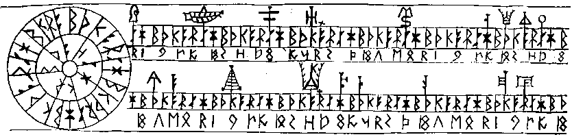
And though none of these runic calendars seems to follow the
alphabetic sequence we researched earlier, even though seeing ᚦ
after ᛒ makes me think they misinterpreted them, and what they
see as E is actually F, and what they see as F is actually G (a
form of ᚦ bound with ᛣ, just as G is a form of C+J,
I hope authors of these images will excuse me using them to
arrange them according to my narrative, for readers should
be able to use reverse search (which was invented by tineye and
now google and yandex both usually can find the sources if
you feed these images to them. For even if I told you sites
where I found all these, who knows if those sites are original
places of origin of these images. Even though I sometimes do
give you links, there’s no guarantee they’re original ones,
especially wiki which is all copypaste.
But if c stands for staveless d, this I can only guess) and
what they see as g is actually h. But I have no degree in
runology, so let’s say it’s just a bold guess. But of course it
makes me wonder why the rune which stood for H here stands for
A, and what supposedly stands for h in the alphabetic runestone
from Bornholm stands for the next letter. If it’s connected with
how greeks made H sound like E or И, or is it just because they
took the ᛡ rune to use it for A, this all I can only guess, but
of course from such boldest guests new valid theories arise. But
this link tells that it’s okay and ᛡ can be a form of ᛆ: https://en.wikipedia.org/wiki/Jēran
yet there’s also https://en.wikipedia.org/wiki/Haglaz - few words on greek H – in words like “hello”
we have the first syllable sounding almost like semitic hey (ה
or ه) though of course that’s because of e, when english h is
almost silent, unlike in other languages, if some french
occupiers pronounced ll as short i, it could be etymology of
hi, and further in netherlands, to oi – or was it the other
way around? complicating?
And though none of these runic calendars seems to follow the
alphabetic sequence we researched earlier, I also found a couple
of calendars, using latin letters instead of runes:
And I will also leave this obscure Lithuanian image in case
somebody will find it useful, maybe I will return to it, for now
I can only give the machine translation for its 4 pav. Lenteles
Menulio fazems ir savaites dienoms nustatyti: 1 – raktas Menulio
fazems nustatyti; 2 – raktas savaites dienoms nustatyti; 3 –
pakorequotas raktas, which stands for Figure 4 Tables for menus
phases and weekdays for setting days: 1 — key for menus phases
setting; 2 is the key for setting weekdays; 3 — the key is the
reverse key
Suddenly I got interested, and I visited the site: http://www.radikaliai.lt/radikaliai/3610-ar-lietuviai-turejo-runas
and I found there this calendar as well:
and though I could translate the lithuanian text there, it
didn’t make it more clear on what it is all about. There are
some books’ names, if somebody read it and can clarify this
issue, please send me a note. Thank you.
But here what I’ve found about those 19 runes: Даты полнолуния
отмечались 19 числовыми значениями рун (которые определялись
алфавитным порядком), называемыми «золотые числа». The
translation is: Full moon dates were marked with 19 numerical
values of runes (which were determined by alphabetical order),
called "golden numbers". — which makes me think “rune = lune?”
but here I just make it all drafty, I haven’t even seen this
scheme, nor did I hear of 19 runes before I put it here. On the
one hand I let you see how I think, on the other hand it’s
completely unprofessional.
If you wonder why I give such attention to the script which
allegedly appeared later in history, I must say that I seriously
doubt it is true. First of all, in the 20th century it was
widely taught that runes appeared somewhere between 4th and 8th
centuries AD, when I noticed that Tacitus in Germania describes
something that could be runic divination, even though translator
used twice as much text to conceal this detail, I began finding
works where the origin of runes was placed at the beginning of
AD, and though I don’t think I somehow switched the timeline, I
am still suspicious of modern runology, occup
But let’s return to the previous image edited according to what
I said.
I haven’t seen what they understood as e among all the google
images on runes, and I only saw the R with additional leg only
among bindrunes (shown above).
And now I wonder what made a & h interchange. And is that h
rune actually the æ rune? Because if you see at the
artefact, its diagonal doesn’t actually go straight, but is
broken in the middle. haven’t found such rune either. But
if it’s actually vowel, isn’t this alphabetic order even older
than the Bornholm alphabet stone with which I put before?
upd: all of the sudden, I found that I probably figured that
weird form for runic g correctly, because look at this image,
the third weird sign on the right panel stands for g:
I read the word on the left panel & I found: Starkaterus
pugil sveticus:
I felt like I must include some history of runology to clarify
my distrust to its sumptions:
The Runa ABC of Johannes
Bureus was the first Swedish alphabet
book and its purpose was to teach the runic
alphabet in 17th century Sweden.
The runology
pioneer Johannes
Bureus was a religious Christian, but he also thought
that the Christian influence had replaced the runic
alphabet with the Latin
alphabet. His good reputation and his influential
friends enabled him to acquire the royal privilege that no
alphabet books could be printed without teaching the runic
alphabet and no one was allowed to print them but himself. The
result was that the first Swedish alphabet book ever printed
had the purpose of teaching runes.[1]
The first edition of Runa ABC was printed in
1611. It contained the Latin alphabet in ABC order and the
runic alphabet in both the futhark
order and in the order of the Latin alphabet. Bureus had also
added the names of the runes, the phonemes
they represented as well as some spelling rules. The booklet
contained small Christian texts, which were written in runes
on one side and in Latin letters on the opposite one. The last
edition was printed in 1624, and it was more pedagogical than
the first one, since the Latin letters were placed directly
under the runes. Whereas the first edition ended with some
prayers written in Latin letters, the 1624 edition had the
final prayers written with runes, without any Latin
transliteration.[2]
And on go several other prayers both in runic and in latin.
You can find the complete version at https://archive.org/details/runaabcboken00bureuoft
But what grasped my attention is the “Bureus was a religious
Christian… His good reputation and his influential friends
enabled him to acquire the royal privilege that no alphabet
books could be printed without teaching the runic alphabet and
no one was allowed to print them but himself.” If it was not
attempt to shut the opposing views on the subject, then what was
it? Could it be that the field felt revival and they only
allowed to a devout christian to publish anything on the
subject. At least until his point of view has taken roots as the
established one. And you know how it is in humanities. They came
out of monasteries and it shows. Heretics will burn, duh.
Or could this baby christian be an honest fellow who had some
noble reasons to acquire that outrageous priviledge? I honestly
doubt it, but it didn’t miss my attention that his ættir have 5
runes each (as if those dice had an empty side each).
Though Bureus is considered to be a father of “scientific”
runology, runes were in use before him, of course. Here’s a scan
from Edred Thorsson’s Runelore:
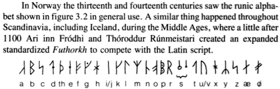
“Expanded”, which gives opportunity to compare this set of 25
with the 18 of alphabet of Bornholm stone, to see which runes
they added. (the t presented here is just an invariant of
the t presented there)
I also previously spoke of my hypothesis that runes could be
used on dice, and though “no archeological evidence of runic
dice exists” here’s a die given by Bureus in one of his books
and named “falling stone” – many theories exist about
what this stone is, but of course falling is
what dies do. I wonder if the image of the other three sides
exist, but probably not, because these 15 runes are exactly the
15 runes he uses in groups in exactly these 3 sides of his RVNA
ABC.
But hey! isn’t it three dice with one empty slot each, shown in
whole! and those dice are literally a b c
The funny detail of this discovery is
that I found it (I just found it) listening to https://www.youtube.com/watch?v=AXKgP6mkwuQ
(THERION — The Falling Stone (Live 2007)) even though they
don’t seem to know what I just found, muses work in mysterious
ways. I never listened to them, because I didn’t know of them
when I was into Manowar, and now even Slayer is not heavy
enough for my taste. But they’re alright. Witches rock!
But if there used to be only 15 runes, how could they count
with them?
Because it’s peculiar that they’re divided in 3 groups, just as
letters before them in this text were divided into ones, tens
& hundreds. And seeing the image on the right makes me
think. Especially when I vaguely remember the joke by Mel Brooks
that there used to be three “tablets of stone”. Is this
remembrance even based? Could that jewish joke was based on
nothing, just a mild blasphemy? I don’t think so, and search for
“third tablet of stone” returns “third tablet of stone that
Moses dropped on his way down” on a not very reliable sourch,
but nevertheless, let it be just a guess, and it there’s a
reference to this in oral torah or not, I will find out later.
But three tablets by 5 allow you to calculate, because 5+4 equal
that very same 9. And to calculate in hebrew alphabet they don’t
always use sophits, but combine smaller letters instead to get
numbers from 500 to 900. Now seeing how much letter hey reminds
letter thav I wonder if it is mirrored to aleph with key of
gimel in the middle and beth reflecting dalet or am I trippin
againg?
But seriously, wild sumptions based mostly on researcher’s
intuitions? Yet the runic dice thing was also based on the same
thin air, but happened to be the key to understanding of what
the “falling stone” falls for. So these guesses will whether
confirm with something or they will fall off. There’re many
false assumptions in linguistic literature, one more one less,
at least I tell not to take it all on faith.
Now let’s compare runic sequences from those calendars:

Though that piece of Lithuanian calendar rather follows futhark
order, but somehow why do 3 out of these 7 letters coinside? And
the fourth one like almost coincide, it’s like 3.5 out of 7,
it’s very fuсking suspicious. I’m being unprofessionally drafty
again, but stay with me. What if futhark is just a
reinterpretation of alphabetic runic order? I really think I saw
A like that F somewhere. Like ᚨ is considered to stand for A, ᚩ
stands for O, and ᚪ aslo stands for A (probably for something
between O & A) and oh, there’s a difference ᚨ stands for A
& ᚫ stands for Æ and there’s also ᚬ representing /ɑ̃/ and
sometimes /o/ or /oː/. Younger futhark, elder futhorc, it’s all
the same theoretical crap to me, I am independent here, for a
reason. I am not sure if I should trust these interpretations of
runes I find online, but I believe that when I collect enough of
these data in my head, it will crystalize into structure that’s
actually there. So let’s go on. The V rune is not articulatorily
far from the B that’s supposed to stand there, and dialect
differences can explain it, but R even though it’s that 0.5
coincidence, dude like what, but then “what if it’s the
primordial alphabet, because it looks like the final row of the
Bornholm alphabet, like what if ᛅ actually stands for T? Because
the letter before R does look like O, standing before R in the
final row of Bornholm alphabet & after it stands ᛣ which
sometimes told to be stand for some other form of R, but other
times it’s said to represent Y and what I see between R &
ᛅ.. excuse me, between ᚱ & ᛅ but this hypothesis is so new
to me, you shouldn’t even be seeing this, you probably shouldn’t
even be here, begone.
But I will go on: they write that later ᚨ became ᚬ which is a
form of ᚮ (on the Bornholm alphabet stone (from now on I’m
simply gonna name it BAS) the diagonal stroke go upwards, so I
think it doesn’t matter which way they go, it’s just a stick
with two strokes on it. Don’t I contradict myself? I definitely
do, but I will figure it out better later. Let’s move on, if it
doesn’t matter if diagonal goes up or down (or if it’s even
straight, as the foreright rune on the previous image shows,
it’s probably the same ᚮ adjusting to the neighbouring ᚦ (I
couldn’t even find a unicode for the upwards ᚮ like wtf)
ⵣ looks like it’s a bindrune, but it’s actually ⵣ, appelé yaz,
est une lettre de l’alphabet amazigh, le tifinagh . Elle
représente une consonne fricative alvéolaire voisée /z/. Yaz est
aussi le symbole de la langue et de la culture berbère en
Afrique du Nord, représentant l’homme libre dans la culture
berbère. And this sign is sacred among both berbers & some
celts, I don’t remember if irish or scottish or even icelandic,
the beautiful snowflake of the holy day. But first, Alphabet
Amazigh, le Tifinagh:
As you caan see, I don’t gert shiy sharing other people’s
images: internets are public domain, where this work belongs, so
I create new ways of doing things, instead of obsolete one
academics cling to.
African continent surprises with plethora of its writing
system: To east-south of Egypt there’s the Ge’ez, to the south
of it there was Meroe alphabet, to the west of it there’s
Tifinagh, deeper to south there’s n’ko, vai, nsibidi – and
though these three are considered to be invented only about a
century ago, here’s what they say of Nsibidi: Происхождений
письменности нсибиди не ясно. Согласно предположениям местного
населения, нсибиди изобретена народом угуакима
(также известного как эбе или уянга) — ответвления племени ибо. Также существует сказка о том,
как племя угуакима
научилось письму от бабуинов, называемых идиоками, которые
собирались вокруг их костров. По словам британского лингвиста Дэвида Дирингера,
эти истории говорят о том, что письменность нсибиди является
настолько древней, что даже местная традиция не сохранила
никаких сведений относительно её подлинного происхождения.
& The symbols are at least several
centuries old—early forms appeared on excavated pottery as
well as what are most likely ceramic stools and headrests from
the Calabar region, with a range of dates from 400 to 1400 CE.
And the africans who spoke about them first and thus are
supposed authors of these scripts claimed that they only used
previously known signs, and arranged them alphabetically, the
same thing cherokee indians said, but archaeology doesn’t
approve of that, though if those signs are secret (like runes
were, that’s why it’s hard to find much evidence from before
2000 years ago) even though Northern myths tell of invention of
runes, when Greek historians tell of borrowing them from some
other nation. And as slavic languages call golden flees RUNO, I
dare to claim that no other reason was to take all those
adventures to get the “golden fleas” if it was just a goldened
sheep skin. But as we know that sheep skin was used as
pergament, we can compare the argonauts’ myth (the homonym argot
is also directly linguistic term today) to holy tree from the
northern myth about runes, we find a reptile
around those trees in both mythos. So though I contradict
linguistic dogma of primate of Greek alphabet to the Runic one,
I still stand this ground (I will return
to this contraversial topic later, even though this part of
this tractate is probably in the other 50% which I whether
read somewhere or invented myself, this one I invented
myself).
And I just found where did argonauts take that RUNO of theirs:
Colchis, the nation of Sakartvello, the georgians who have one
of the most harmonic alphabets, and in some account it is THE
MOST harmonic. And suddenly I notice that the eastern Iberia I
mentioned before is neighbouring the Colchis or also a georgian
nation itself.
and suddenly I found someone else speaking of the same, probably
he had more sources than I do:
"Все знают с детства, что когда-то
из древней Греции аргонавты отправились в Колхиду
за Золотым Руном. Но мало кто знает, что речь идет
о древних рунах, руническом письме, которым до сего
дня пользуются грузины, – заметил, выступая перед публикой
в Канаде, Леонид Бердичевский, известный писатель,
режиссер, художник. – Выше всего в древнем мире ценились
ум и знания… Миф об аргонавтах – это история
о поездке за знаниями, рассказ о пергаменте,
на котором золотыми рунами были начертаны законы
мироустройства, смысл жизни, ключ к пониманию Вселенной.
Грузия, древнейшая земля – рай, настоящий цветущий рай. И
живут в нем прекрасные полноценные люди".
I never read this before just now, we came to the same conclusion
independently.
Returning to neighbours of berbers, first to the north is
Spanish peninsula, and it had alphabetic writing system too, and
alike to berbers they were called ibers. or iberians, but it's another Iberia, just
as there are to Georgias now, I spoke about it, it's very
weird that we come to this from different angle.

I will yet return to Iberian not once or twice, but for now
let's move forther to the North,where Сelts live:
The most keltic writing system I know about is Ogham. And
though I still cannot tell much about this system, The
Ballaqueenee Stone I in the Manx Museum, Isle of Man.
It reads ...ᚊᚔ ᚇᚏᚑᚐᚈᚐ᚜ (...QI DROATA), a section
from ᚛ᚇᚑᚍᚐᚔᚇᚑᚅᚐ ᚋᚐᚊᚔ ᚇᚏᚑᚐᚈᚐ᚜ (DOFAIDONA MAQI DROATA)
The scheme below shows that ogham can be separated in groups of
5, which resembles 5 runes per a falling stone. And the scheme
above tells that these groups are named aicme. As you can see on
this rock and many others, usually only first four aicmes are
used. And then text can be read differently in the opposite
direction, but probably direction was fixed.

What is important to notice in the context of this work is that
ogham also contains the same 5 vowels and that consonant aicmes
mostly begin with labials: only f & h are mishmashed, but
it’s okay, because in japanese they’re literally the same
“letter” and their h has b & p as invariants. And if
official science doesn’t allow to line such far parralels, I
don’t care about their views, because I counted them to be false
too many times to take them too seriously. it’s divide et empera
all they teach. as if god himself devided us and so we must stay
separated for their advantage of course. But times change and I
wish they will change their moldy ways. Let them read it and get
enlightened. Let me show you how little I care of their
jewridical dictate:
It is a piece of chapter 7 from Robert Graves’s “The White
Goddess” and I don’t charge the publishers for promoting this
book, so please don’t charge me with no copyright bs.
And we move on. The most celtic writing systems among the
modern ones is Gaelic Script:
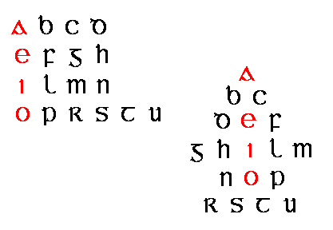
Of course I took freedom here, claiming u had to be v when this
alphabet appeared.
But this claim is rather scientific, because it can be whether
proven or disproved.
Especially in the context of… oh, no, Bornholm alphabet also
takes final U as V.
So it’s sort of proven… at least supported by the previous
research. And the only structural difference between irelandic
alphabet & bornholm runes is that c is put after b, not
after i as in bornholm; and a letter before R appeared, and a
letter after R disappeared, but this alphabet also has 18
letters. But I’m still in doubt. Even though in words like bua
it does sound like consonant [w], but in words like agus it does
sound like vowel [u] – maybe it used to be w there too.
So I didn’t see ⵣ in any celtic ornaments, so I probably was
mistaken by comparing ⵣ with ᛡ I've known of in the same period
of time.
But while I was looking, I met another interesting sign of human
culture, the swastika. The one on the left is intricate because
though it rotates solar, it goes on it’s ends counter solar. It’s
only drawn this way, but when it rotates solar, it rotates centers
of its tails solar, so it can grow, evolve. Just like these little
babies do:
https://www.youtube.com/watch?v=XIazVcdEkr8 (mirror)
– if we look from their perspective, they go solar, and plants do
react to sun. Though now I’m not sure I couldn’t prove the
opposite. Let it be a task for all of us, if I have time to solve
it, I’ll drop a link here.
Some people say nazi swastika is unlucky one, countersolar,
downwards: when water goes down in the northern hemisphere it’s
believed to go counter-clockwise, and then the воронка makes
this way looking waves. I should make some research to see if
it’s true. Luckily for me I have internet, so I shouldn’t go
look for it in the oceans myself: https://www.youtube.com/watch?v=xPYaMwxZNgU
(mirror)
some further speculation on this topic that went
off the rails I put in another file
And of course there are many images of such swastika among
ancient artefacts. But what their actual meaning I don’t
actually know enough.
And I believe the other, the lucky swastika is supposed to be
upwards, the air whirl:
But I don’t want to occasionally have pictures from the
southern hemisphere, so I search for usa
tornado: https://www.youtube.com/watch?v=Vr0I7aCFG9A
(mirror)
https://www.youtube.com/watch?v=nddnbbOMzZU
(mirror)
As you can see, they go the same direction, but to observer
they look in different direction, because on water we look down,
at the sky we look up.
Yet I’ve never read about this connections, which means I can
be wrong, but replication crisis tells that I could be wrong
even if I read it somewhere. So figure everything out yourself.
Yet this idea with rotations is very wide in magic: хороводы
посолонь приворотные, противосолонь отворотные. евреи обуваются с правой ноги, может тоже
чтоб правой, правой, раз два три – такое движение их вращает в
посолонь? зато когда левую будет обувать в посолонь пойдёт и
прощаться наверное (если это всё не гонево) именно в
счастливую сторону закрученным быть, чтоб не по земле как
смерч, а по небу словно чистая душа. когда евреи захватили
россию, они приказывали левой, левой, раз два три!
Суфийские дервиши вращаются в ту же сторону, что и водо- и
воздухо- вороты. Интересно, не от этого ли
слова ворот (воротник) ведь он по форме сродни юбке, которая
неотъемлемая часть суфийских вращений: vdo1,
vdo2,
vdo3
(в первом видео они и выходят против часовой, и спортсмены в эту
сторону бегут, и мусульмане вокруг каабы крутятся, но всё это
примеры из авраамической части света, а в этой традиции мир во
власти сатаны до прихода мошиаха, но
Крёстный ход на руси до реформы водили посолонь, после никона
противосолонь водить начали. По причинам
смехотворнм, т.е. на самом деле по каким-то тайным причинам.
(решили ходить не вслед за солнышком, а навстречу ему — такими
были озвученные причины)
Откуда была в россии традиция ходить крёстный ход посолонь? Где
она сохранилась? В неавраамическом мире, в первую очередь у
индусов. И я задал в поиск hindu procession map, и я нашёл
несколько картинок, подтверждающих моё предположение:
There is also a hindu procession (of a truck with idol on it)
going countersolar around the buildings, but it was only obeying
the direction of traffic in that country:
Notice, that in india traffic is regulated in the brittish
manner. But still this part of research is one of the rawest,
you may only take it into account, but don't put it into
practice until you know what you're doing, because
231 gates of sefer yetzirah is believed to bring delight when
turned one way, plague when turned the other.
Light in my room in Luxor hotel was turned both on & off
only clockwise (I wrote
"counterclockwise" and it was like that for months until I
just noticed it. is it a mind play or is it memory flaw? I
believe it's some demons in my head laughing at me, deminds? I
don't know what they're, probably just brain areas occupied by
irrational or subconscious or symbiotic) and people in
Las Vegas care about luck more. I met some shower utilities
working the same way in San Diego though. Russians never saw
such things, orhwe (other, I respect
typos) than we turn water off clockwise. It makes
sense, because then the 231 gates make jewish alphabet go in
order.
Why do corner images rotate it counter-solar? Do
they try to tell us something or do they want to curse the nosy
goyim?
I imagine they were left for me to turn them right.
But I wouldn’t risk to rotate it until we figure out which way
to rotate it right. I think they put hands on clock this way for
a reason, probably that’s why they went from left to right,
because instead of rotating the image they rotated the hand.
The answer probably can be found in the sky:
22 approaches of Mercury to yearth on this
image is not an accident, it’s rather accurate: https://www.youtube.com/watch?v=9AxE4EL605Q
and considering the fact how good jews know money, and Mercury
being god of trade, but boy, read about it. For some reason I
thought that Mercury was discovered relatively recently, but
in this timeline it was discovered looong time ago, and boy it
corresponds:
"Наиболее раннее известное наблюдение Меркурия
было зафиксировано в таблицах «Муль
апин» (сборник вавилонских астрологических
таблиц). Это наблюдение, скорее всего, было выполнено ассирийскими
астрономами примерно в XIV веке до н. э.[80]
Шумерское
название, используемое для обозначения Меркурия в таблицах
«Муль апин», может быть транскрибировано в виде
UDU.IDIM.GU\U4.UD («прыгающая планета»)[81].
Первоначально
планету ассоциировали с богом Нинуртой[82],
а
в более поздних записях её называют «Набу»
в честь бога мудрости и писцового искусства[83].
В Древней
Греции во времена Гесиода
планету знали под именами Στίλβων («Стилбон») и Ἑρμάων
(«Гермаон»)[84].
Название
«Гермаон» является формой имени бога Гермеса[85].
Позже
греки стали называть планету «Аполлон».
Существует гипотеза, что название «Аполлон»
соответствовало видимости на утреннем небе, а «Гермес»
(«Гермаон») на вечернем[86][87].
Римляне
назвали планету в честь быстроногого бога торговли Меркурия,
который эквивалентен греческому богу Гермесу,
за то, что он перемещается по небу быстрее остальных планет[88][89].
Римский
астроном Клавдий
Птолемей, живший в Египте,
написал о возможности прохождения планеты по диску Солнца в
своей работе «Гипотезы о планетах». Он предположил, что такое
прохождение никогда не наблюдалось потому, что Меркурий
слишком мал для наблюдения или потому, что это явление
случается нечасто[90].
В Древнем
Китае Меркурий назывался Чэнь-син (辰星), «Утренняя
звезда»"
I knew I will have to research the way ancient people thought if
I wanted to discover what they invented, but do I really have to
delve into astrology?
Sefer yetzirah also speaks of three mothers: א ם
ש эти три буквы названы там тремя матерями. Три moirae are told
to be mothers of alphabet in the greek myth, and in that myth
their alphabet was vowels, B & T. Aleph is the vowel alpha,
whatever they say, hear they scream it in Allah! And B & T are basic labial and
lingual – just as M & Ш
of ם & ש
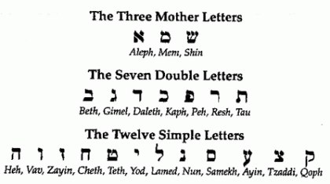
After humans understood duality of ࿊, ☯, yin & yang (dvupoly Y?) of vowels and consonants,
of fire & water (taegeuk is also
blue-red, only it goes counter-clockwise, unlike the yin yang.
taegeuk is also named supreme ultimate – could it stand for
death? or maybe those counter-clockwise ones I saw were drawn
that way by mistake? Is it why left-handed children are
retaught to use right hand?) they were to discover
trinity of ࿋, gankyil of vowels, labials and linguals, of fire
& water & soil, which is common in the most of popular
element systems. But sefer yetzirah tells that it’s fire, water
& air. But it’s whether because they were off their soil, or
by mistake because what vowel can be if not air, or simply to
conceal the true trinity, because sefer yetzirah tells that it’s
a huge secret. Air, שָׁמַיִם as it is given (but translated as Heaven) in the first
chapter of bible, about which sefer yetzirah theorizes, is the
combination of water מים and fire אש, the steam אֵד – at least we can see steam – think
this way and you can see how they thought – fire, water &
soil are three states of matter: gasous, liquid & solid. So
air is only water’s fire, but there’re many more: with poisonous
gas you cannot breathe.
Great french poet Arthur Rimbaud colours pure vowel A in soil
black. And he colours lingual I in flamboyant red, and labial O
is water blue. O, not U, weird, but then again O-row is more
primal than U-row but he also replaces U & O yet he
juxtaposes O with Omega, not Omicron, which tells that he didn't
know of alphabetic structure. But he colours Omega purple, not
blue, so he could have some idea. Yet I'm not sure he coloured
the text below himself, but neigher did I, it's a direct
copy-paste from the first search result:
A noir, E
blanc, I rouge, U vert, O bleu
: voyelles,
Je dirai quelque jour vos naissances latentes :
A, noir corset velu des mouches
éclatantes
Qui bombinent autour des puanteurs cruelles,
Golfes d'ombre ; E, candeur des
vapeurs et des tentes,
Lances des glaciers fiers, rois blancs,
frissons d'ombelles ;
I, pourpres, sang craché, rire des
lèvres belles
Dans la colère ou les ivresses pénitentes ;
U, cycles, vibrements divins des
mers virides,
Paix des pâtis semés d'animaux, paix des rides
Que l'alchimie imprime aux grands fronts studieux ;
O, suprême Clairon plein des
strideurs étranges,
Silences traversés des Mondes et des Anges :
— O l'Oméga, rayon violet de Ses
Yeux ! -
but then again it could
be just some noise. he's just a poet, what could he know
back to somewhat more reliable sources:
Bible literally tells: בְּרֵאשִׁ֖ית
בָּרָ֣א
אֱלֹהִ֑ים אֵ֥ת הַשָּׁמַ֖יִם וְאֵ֥ת הָאָֽרֶץ׃ — so first goes
הַשָּׁ (the אש) which is as red as
vowels in this book, then goes מַ֖יִם which is blue as
labials in this book, then goes הָאָֽרֶץ
(the earth) which is green as linguals in this book. What I
just said is officially a heresy, because Sefer Yetzirah
tells that aleph stands for air, mem stands for water (here
we agree) and ש stands for fire
(but doesn't what I said before make fire standing first.
Can shin shand first? I guess it just did. So it's shma?
shma, Isråel. (this piece is so raw, I only recently found
Sefer Yetzirah, and to be honest I haven't even read it
through: I prefer to keep my research independent, so I only
consume factual information, and try to avoid any
theorizing, because I saw how theories made people blind to
facts, and also I will be able to compare my work with other
theories without this being tautologic.
Earth (soil)
standing for vowels also makes sense in case those repeating
lines of vowel labial linguals in alphabets represent
different musical modes & dialectal pronouncuation of
the same theme on different lands. It interestingly
corresponds that many main continents are named with vowels:
Europe, Asia, Africa, America, Antarctica, Australia,
Oceania, what! All of them begin with vowels? Wow!
Most of them begin with A. A opens the first row. Second row
is E as if Europe. I could be India also known from
antiquity. O is Oceania then. You will yet see how important
is this region. And U row appeared later than all the
others and can only stand for Utopia, the world of the fUtUre,
бУдУщее. I know
this word is less then a millenium away, but could that
book be based on some previous material, could this word
relate to some previous cultural material(?) And even
Atlantida begins with A!
Among ancient continents A stands for
both Africa & Asia. Could they be considered the same
continent before Suez? Then how Europe is a different
continent? Afroasiatic! With all my bitterness towards
official linguistics, I see that it supports this particular
hypothesis, but I also see that it doesn't prove a thing,
there are so many bs in official linguistics. So A could stand
for Arctida, and even Ariya — they don't accept armanen runes,
but they are the only among wide-known which completely repeat
Bornholm alphabetic runes, and that artefact is consdered
legit, even though today only some freaks research it (and I
am not the freakiest one)
Gankyil is named wheel of joy – and comparing this concept to
swastikas, I'd expect these fish to go clock-wise, but they go
counter-clockwise. Is it how jewish letters in 231 gates go? so we
are supposed to roll the disk clockwise, so fish goes heads
front? But it doesn't make sense in this context, because "fish"
will rotate with the disk. So once again, you shouldn't practice
this practices until you research it properly, before you read
about it from someone who really know and you can not trust but
understand, I will do my best to find this information (then
I'll edit this part. but for now I am not competent in magic
even of this secualar form.
Here's a collection of similar forms, and Gankyil is fourth:
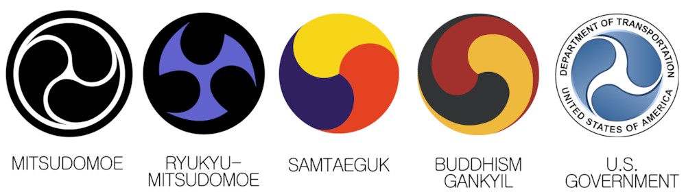
Gankyil is often shown in the center
of Dharmachakra, which is also present on the flag of Sikkim
people from Bhutia and the Bhutia itself
Maybe the question of which way to roll is meaningless, since
steering it one way means going rounds, and to move forward we
have to steer both left & right. Or maybe those lefts and
rights correspond black and white stripes, and maybe it's not
that meaningless if rotation to one direction is more healthy
than the other (because of the blood flow and of the
excentricity of our heart)
And I met this peculiarity among japanese tomoe symbols: even
number of "fish" go counter-clock-wise, odd number of "fish" go
clock-wise:
But that drum tells: So all that clock-wise being lucky and
counter clock-wise being unlucky could be completely wrong even though words clock & luck are alike,
so they could only know left and right, and on that taiko drum
the other side is probably hidari (not migi) mitsudomoe, just as american flag looks the other side
on a right shoulder only to look the same way, forward. After
or before mitsu(3) t"omoe of three elements inevitably
appeared four elements of ࿌ which could splat linguals further
into velar & coronal. And
this symbol could give birth to ࿖ which being projected to
dualities gave ࿕ – which, as you can see walks to the left
(which makes it look in the beginning of the line? no, it
looks the othe way, so it’s twice wrong form. use ࿖ instead.
First I thought it was arbitrary, taking roots only in
tradition, and thus being purely psychological or none. Today
I remember of chirality of biological molecules, and suspect
some physiological moments involved.
I was in doubt if my comparisons are
legit, and all of the sudden I found this representation of
Dharmacakra:
I probably make some too far-fetched
assumptions, juxtaposing types of letters with magatamas, but
they're determined by tai-chi look at futatsudomoe as opposite
elements and sefer yetzirah juxtaposing 3 basic letters with
elements. Now I have to look for graphic or some other
correspondances to tie these concepts more firmly: I would
expect to see labial water as futatsudomoe, but it's mitsu (3)
sounding as water. Can it be connected with the fact, that
they have velar after vowels (I whether spoke about it before
or will speak further on. I edit this text wildly back and
forth/) and armenians even know such
form as ֍ & ֎ – armenian eternity signs, and ֍ is
considered to be right facing, and ֎ is left facing, what
supports what I just said. About swasti signs facing the
opposite way of where they’re going (letter walks forward,
but looks back) – could it explain why b faces where it
goes, not where it came from ? But in aegyptian it faced
where it came from, could swastika influence it? And could
it happen not further, than the last two millenia? Because
in some forms of roman cursive the boot of b looks in the
beginning:
 uobis · ujdetur · p[atres] ·
c[onscripti] · décernám[us · ut · etiam]
uobis · ujdetur · p[atres] ·
c[onscripti] · décernám[us · ut · etiam]prólátis · rebus ijs · júdicibus · n[ecessitas
· judicandj]
imponátur quj · jntrá rerum [· agendárum ·
dies]
jncoháta · judicia · non · per[egerint · nec]
defuturas · ignoro · fraudes · m[onstrósa ·
agentibus]
multas · aduersus · quas · exc[ogitáuimus]...
Papyrus fragment at Berlin containing portions
of speeches delivered in the Senate, ascribed to the reign of
Claudius, year 41 to 54, facsimile in F. Steffens, Lateinische
Palaeographie, taf. 101, ed. 1906 (from J.E. Sandys, A
Companion to Latin Studies, Cambridge, University Press, 1910,
p. 768).
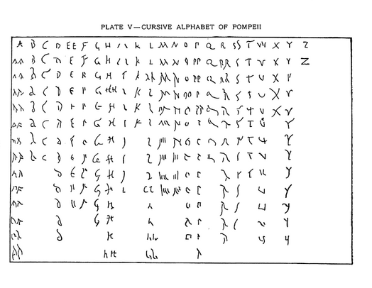
Cursive is a misterious topic, I will return to it one
day, but now I don't know much about it, so I return to
swastikas which are trendy today.
8 waves of ֎ remind me of wheel of dharma ☸
(so if it’s a steering wheel, probably both sides may play
positively. Sometimes we’re right, it feels good. Sometimes
we’re left, it feels bad, but if you have too much of something,
maybe steering the other way can help – though I’m still not
sure about it)
You know what this thing in the centre looks like?
The Icelandic magical staves:
Here’s kaopaloki: is it where I saw ⵣ ?
or was it Nábrókarstafur?
or just Ægishjálmur?
Another famous cabbalistic symbol – tree of sefirot – probably
was built for wrong alphabet: when it builds 18 letter alphabet
(the alphabet of 3 dice) it gives tetraktis, with 3 angles as 3
roots of the tree of life in normanic tradition:
the tetraktis on the left is called plebean (after substrate nation of Rome) tree
of life
and on the right I composed it with runic
alphabet from Bornholm.
The left tetraktis, drawn for latin alphabet, I found in some
occult literature in the internet (use reverse image search to
find it)
The right tetraktis I’ve drawn of the Bornholm alphabet runic
stone when I found that there’re exactly 18 direct connections.
Are sphirot (cyphers, цифры) spheres? A буквы кубы? (Are books
cubes?) – maybe in libraries scrolls were indexed in numbers,
and for books they had to use letters (to distinguish them, and
also to easily separate archives if needed – I did the same with
my vault, so it’s probably natural)
I filled in the runes in tetraktis the way that latin tetraktis
was filled, but they could be wrong about the direction of the
filling. If I used boustrophedon, I would have 3 angles
containgin ᛆ ᛉ ᛋ as 3 mothers of א ם
ש (the M letter will be understood by you as the same letter, if
you see an owl in both of jewish & normanic forms, ם also can be seen as מ – this owl is with brows like horns,
and it tells wM, just as cat tells Miao and caw tells Moo – all
their heads are of M form (whether with ears or horns or brows)
Now, what if we arrange these 18 runes in the хоровод alike to
231 gates?
This image was found by "regular polygon" "18 sides" – because
it’s diagonals of 18 sided polygon.
Where I found this image, was told:
The diagram shows all the diagonals of a regular polygon of 18
sides.
It's interesting that there are many points where four or more
diagonals intersect, can you find why ?
There are several similar forms in math:
I know that I act as if I want to bring neurosis, which would
help you to believe in magic, but I hve to remind you to be
careful with runes and 231 gates. These are the only two
pre-cautions I read about magic. But common knowledge seems to
tell that all magic is dangerous, and you should be ver cautious
doing it.
For five years now this work is in public discussion since,
after a couple of decades now of digging into it, I began making
it public in IIXIII – is it what gave birth to letters T & П?
— П is greek form of P, which could stand for II -
but in script this overstroke is easily seen (as i? Maybe) So
before П and III there was just I repeated until V
and X – but what letters are these? O & R? or D & A? D
already was present in the first do(or die). to riot (or
leave). to right (or left). and so on. So, could this T thing
explain why russian t is m in cursive, could it be that when
serif became fashion, it wasn’t easy to read the overline, so
they used arc instead of stroke sometimes, but it was read as
T(housand) & T(ысяча) and somewhere else – M(ille) – the
same sign, different meanings.
For at least three years now this koptic scheme was taken wrong
(I didn’t see it was well in axial, and not because I saw H as
vowel (I din’t know) but instead of simply silly miscalculating.
And nobody told me. Probably those who could see it were too
overwhelmed to contact, or just took H for vowel and wondered
why would I exclude it from vowels (and I did because I was
looking for the initial form, in which H is consonant, and I'm
not sure about Θ: it's lingual in semitic alphabets (hebrew,
arabic & even persian though it's not
a semitic language, it uses almost the same alphabet arabic
does), but it's labial in hellenic ones (greek,
russian, koptic — though it's often taught that it's lingual in
greek and koptic too, though in those countries it still sounds
like labial; in russian everybody knows it's labial. We,
russians, we say Ѳ = Ф, we really don't see a difference and we
don't care)
(Ѳ & Θ are historically the very same
letter, ѳ = θ)
I take H & Θ as greeks have them, HΘ – it definitely relates to making e
consonant in arabic. And in jewish too, but jews didn’t live in
Israel for quite a long time, though their hey is sometimes
vowel, which makes arabs alone in their reform: all the other
countries have hey vowel. And it’s the most consonant vowel in
arabic, it’s followed by vuv being both w & u, giving birth
to the fifth vowel: runic alphabet does have it, but in the end,
replaced by F, showing the consonant form of v (as in german
von) – fita was also replaced to the end of the alphabet, even
though it had numeral position of 9 – though in glagolica 9th is
the similar letter, which sounds as z, and it could be
post-reformed, when it hit in greece. If I’m lucky, I can even
find it in nikonian times, but it’s probably from some more
ancient past (but if I find it in nikonian, I will have a coin
into “shorter history” theory.
Oh, this one doesn’t even give fita. where’s the 9th letter?
Here, have some more of old russsian:
This chart ranks fita 500, which support theory of glagolica
appearance being later than kirillic script appeared. Also
notice how letters 9 & 500 look alike on this image, 500
simply has two balls (not just lune, but lun & sun, moon is
l’loon?)
Wow, here’s another one, adding some interesting perspective,
and with θ: 
According to this table, kirillic greek had only one labial
in the first line, and double form was borrowed from glagolic
(the old one, prechristian as I figured it out for somewhat
like 80%)
Here I must give my reasoning for this rather bold claim:
I caught christians in plagiary of armenian, georgian, permian
alphabets. So I even think of researching the Canadian
Aboriginal syllabics
It's so beautiful and the "inspiration Ewans claim to cause
this invention was so unrelated to this beauty, that
I dare to claim, it's exactly Aboriginal writing system.
But I will return to americans later, now I speak more of why
Glagolic is pre-christian writing system:
2) it's graphically unique
3) it contains symmetry christians didn't know about: Б & Д
can be seen as symmetric: one has stick above ball, the other
has ball above stick.
b & d are more obviously symmetric, and so are Ⰲ & Ⰴ
4) Ⰳ as angle, which is paneuropean, but why would christian do
it so alike to runic ᚲ
But a counter-argument is that greek cursive δ looks like
glagolic Ⰴ sometimes, and that somebody wrote so. But inventing
glagolica would be making things more complicated for those who
work in the region. Why wouldn't you use your greek after it
worked so good even in Egypt, so they did exactly that, as in
egypt: greek uncial with some national additional letters. Or am
I only triiippinn
And, btw, here I found a way to arrange modern russian script
axially:
А
I found Ё & Й
invariants of Е & И
Б
В (I could have spoken about it before, but it
was a spoiler,
Г Д ЕЁ Ж
З
here's
where
it happened)
ИЙ
<= Belarussians use ˘(brevis) above У[u]
to make W
К Л М Н О П Р С Т
У
Ф Х Ц Ч Ш Щ
Ъ
Ы<= Ъ
& Ь used to be vowels. Ъ is
still vowel in bulgarian.
Ь
Э
So russian guitar has
12 strings with 2 dead notes.
Ю
There’s also 12 months, and if we consider
Ё & Й
Я
merely invariants of E
& И, then it’s 31 letters
and
in runic calendars letters do stand for days.
For some long time I didn’t understand that russian alphabet
also can be represented in axial symmetry. Now I see, that e
& ё are one letter, just as и & й are more alike than i
& j. Even though what j has is named swash, and usually
isn’t more meaningful than serif. decoratif.
The same way french & german alphabets have the same latin
alphabet england uses, even though they have some strange
invariants of several letters (usually vowels, just as in
russian. but also modified c in french ç & modified s in
german ß)
Notice, that russian ИЙ are like Y (literally и-грек) either
vowel or consonant. The consonant variant is marked with brevis.
Y is also often written in netherlands as ij.
Honestly, I doubt christians ever knew about these structures,
considering the way they botchered armenian alphabet & made
all those weird reforms (just compare russian matrices to
latin and hebrew, though arabic also falls from grace when
it pronounce its e as a consonant.
I noticed before, that russian lineal goes like a fir, and now
I see some fir or pine. Do these form relate to some trees?
Ogham letters did refer to some trees. Latin axial alphabet is
definitely a fir:
But let’s return to calendars: we have 12 month, but 13 moons
per a jear (жар, шар) what if we
had 6 days per week? (just as there’re
only 6 notes on Gvido’s tombstone) then how many weeks
per year would it be? With seven days per week we have 52 weeks
per a year. With six days per week we have.. and 366 asks to be
devided into 6, not 7, 62. then not 13 weeks per a season, but
31 weeks per half a year. hm…
And those 13 moons became 13 weeks; 31 weeks became 31 days
Probably because 366 contains… not 62, but 61 – I sucked at math
again, but such coincidence it caused, that it’s hard for me not
to believe in demons.
But hey! 61 is 30 plus 31 – exactly how we have those month
length.
So that’s where it came from, and a week of 6 days confirmed. ᚼ
is probably the divider, the way it looks, the blessing, the
wide spread (at least from ireland to berbers) blessing sign.
But of course, I found that 6: hidden in our 12 of the months. What was I talking here about? how can
ᚼ be just a divider, there're solstices
arranged, there're some certain number of signs. How many of
such not raw, but also rotten places in this text!? How many
years will it take me to edit it
Let’s see some more calendars, after you ponder about it:
While I was looking for runeless calendars to see if they
divide days in sixs, but no, they use 7, though they’re late. I
revisited that baltic calendar instead:
So let’s return to it and see what it said:
Full moon dates were marked with 19 numerical values of runes
(which were determined by alphabetical order), called "golden
numbers".
So once again, rune = lune?
And why 8 & 10 look so alike?
Check letters 8 & 10 in “kirillic” script – I dislike this
name, but it’s the most recognized name of it, so I recall
Stigler’s law of eponimy and let it be.
So I once again suspect, what if futhark is actually alphabet?
I saw A’s as F’s in runic theories: here it’s under number 4,
but it’s just another vowel, the e (compare arabic vowels to
european: 1st looks like 3rd, 2nd looks like 4th, 3rd looks like
5th, 4th looks like 2nd. And they don’t have the 5th, though
their vav looks a little like the 1st european vowel a in
reverse – so as musical modes are different, so could the vowels
be mishmashed according to nation’s musical taste and voice.
But what 19 has to do with 28? so I wonder if this theory I
quote is even correct, could be a wild assumptio, due to
misunderstanding of this signs being a writing system. Or at
least a cipher. Though 19 is 12+7 and 12th rune is the often
final ᛏ
I calculated 90 days in the lowest season, which makes my
assumption about ᚼ being not a letter, happened to be false.
Does it make this work contradict itself? Sure it does, it's so
great (groß) that it definitely is full of all types of
inconsistencies whether because I had time to change my mind on
some question, for it was written for so long that I had time to
change, or it's just гонево Here used to
be some other paragraph, but it was embarrassingly wrong or
false, so I wonder how many of such garbage do I have to clean
out of here, because this book was written fast, but I was
high on weed most of the time writing it, and when weed is
stronger or you smoked too much, it can make you silly too.
E could become consonant in arabic, and H too become vowel in
greek to justify the change of θ‘s position? Hardly otherwise is
true, but it could also be that those languages saved the
archaic forms of those letters, when we made E vowel and H
consonant to make people forget that θ is labial, thus the in
theology is female. But if it’s true that all the other greek
dialects had H consonant, then this case is unlikely. Though we
have to revisit every theoretic work with ai capabilities.
But back to weeks, I was looking for 6 days week, but I only
found some african example:
Calendars unrelated to the Chaldean, Hellenistic, Christian or
Jewish traditions often have time cycles between the day and the
month of varying lengths, sometimes also called "weeks".
An eight-day week was used in Ancient Rome and possibly in the
pre-Christian Celtic calendar. Traces of a nine-day week are
found in Baltic languages and in Welsh. The ancient Chinese
calendar had a ten-day week, as did the ancient Egyptian
calendar (and, incidentally, the French Republican Calendar,
dividing its 30-day months into thirds).
A six-day week is found in the Akan Calendar. Several cultures
used a five-day week, including the 10th century Icelandic
calendar, the Javanese calendar, and the traditional cycle of
market days in Korea.[citation needed] The Igbo have a "market
week" of four days. Evidence of a "three-day week" has been
derived from the names of the days of the week in Guipuscoan
Basque.[47]
The Aztecs and Mayas used the Mesoamerican calendars. The most
important of these calendars divided a ritual cycle of 260 days
(known as Tonalpohualli in Nahuatl and Tzolk'in in Yucatec Maya)
into 20 weeks of 13 days (known in Spanish as trecenas). They
also divided the solar year into 18 periods of 20 days and five
nameless days, creating a 20-day month divided into four
five-day weeks. The end of each five-day week was a market
day.[48][49]
The Balinese Pawukon is a 210-day calendar consisting of 10
different simultaneously running weeks of 1, 2, 3, 4, 5, 6, 7,
8, 9 and 10 days, of which the weeks of 4, 8 and 9 days are
interrupted to fit into the 210-day cycle.
Here’s the roman calendar of 8 days per week (I wonder if it
relates to modern musical notation and with that H note,
russians but not americans know)
See why I think it matters? Because there’s tradition of
marking days of week by alphabetic order. But here, is it
alphabetic order or futhark is actually futhark and runology
wasn’t wrong all the time? Prudence tells me it was not, but
historic evidence about Scheele tells me that old theories can
be wrong.
This calednar topic is so vast, I need to become a specialist
in it, before I dare to tell anything about it, but I search
well, I have internets on my side, it makes me more powerful
than professors of the past, so if they still can spread their
old books, why can’t we with our information even more reliable
than even Diringer’s.
This image is Gediminas Sceptre to the left, a medieval
Lithuanian calendar (to the left, to the right – this can mess
up during reediting by someone not careful enough, so just use
reverse search to research images which interest you. Notice,
that the left chart has 12 days, and 12th is T (at least it
looks like one)
"Ancient Baltic cosmological schemes have been found on burial
urns dated from 600-200 BC. As with other Bronze Age cultures,
there were megaliths associated with the summer and winter
solstices; hill enclaves with solar calendars have been
discovered at Birutė Mountain near Palanga,[1] and at the
Purmaliai mound near Klaipėda. A modern interpretation of the
ancient solar calendar was created in 2002 at the Kretinga
Museum. Lithuanian calendar shows some similarities with Slavic
calendar, and so may have roots in Proto-Balto-Slavic era."
Some more weird ancient “clog almanacs” will follow:
On the following image you can see relation of those 19 runes
to the 7, and they do stand in such a manner that 19 of them
pass over 29 days:
So it’s not full moon dates, it’s some lunar dates
of a lunar calendar, and on this image lunar calendar is
combined with the solar one. The weird thing is I had 28 days
per moon in my mind. Was it because of 4 weeks per 7 day each?
Could arabic alphabet of 28 be related to lunar calendar? Arabs
do use lunar calendar. Let’s search for arabic calendars..(I
havent’ found much, but anyway, here’s where I’m going to
research them from now on: hiperlink(astrolabes))
My draft tells me to go deeper into house of music, because I
have discovered some detail of why could humans shift musical
notation like two steps higher than alphabetic order goes:
ABCDEFG is natural minor, Aeolian mode. CDEFGAB is its relative
major. and it
is named Ionian mode. And
Ionian is the dialect of greeks which became modern greek of
the xX aD. The reasons beyond this switch from minor to
major is still unknown to me, but I know that major scale is
named Ionian mode, exactly like that dialect, on which modern
Greek alphabet is founded, so these two facts could be related.
They also say, that even though modern musical modes took their
names after ancient greek modes, they’re different, so I
wouldn’t me surprised if originally aeolian mode was pentatonic,
and those two letters added by Apollo priests were related to
the two additional notes. And there’s such a thing as aeolian
pentatonic scale, but I’m too dilettante in musical theory to
keep on talking about it. It’s definitely an interesting topic,
and I will return to it some day. But some more should be told
about it, before we go further: when christian englishmen
occupied Iceland, they prohibited icelanders to sing for a
couple of centuries. Probably, because music and magic are
similar topics, muslims directly prohibit music (I suppose this
outrageous prohibition comes out of jewish law – it’s hilarious
how both muslims and christians disgust jews, yet follow jewish
teachings. Blindly they follow, what a practical joke! Anyway,
musical notation is even more obscure theme, than magic. Though
I’m sure human culture somehow preserved answers to all the
questions we have.
Musical modes do have deep connection to accent people speak
of: if you compare russian and english vowels, Russians
see A as completely open mouth. It can be relaxed, but it’s
open. And in english it’s Э, Æ – suddenly I think “is it because
they smile more?” Their E is И (I) and their O is closer to
russian U (but u stands in russian cursive for и, which sounds
like i in inn, hm..) But then they pronounce I.
Karl Fossler even identified accents of nations with their
languages’ souls. And righteously did he, because before he did,
that monastery bs about soul of the language didn’t have much of
semantic features, being as euphemerous as understanding of a
human soul (if we have it when we’re born, than it’s not our
memories or personal traits we develop in the lifetime, so what
is it? In early jewish books it’s synonymous to life, but in
Ruth or around it soul acquires some supernatural forces such as
immortality.
And if you hear somebody speaking a foreign language with a
grave accent, you can notice that what makes most of the
difference is that (s)he uses vowels from a native language.
Speech defects, on the other hand, are usually in the consonant
realm, even though foreigners may be foreign to some peculiar
sounds like th or w, but they usually figure it out eventually,
but vowels are not even taught enough.
On the image of monochord by Robert Fludd you can see that
notes are marked the other way around, and the scale used to be
descending, not ascending modern europeans are used to. And
Fludd lived in 17th century, so this reform couldn’t be too far
in the past. I’m even sure that some nations still keep their
national musical traditions, which contains keys to decipher
this enigmatic topic.
Me personally, I still have more questions than answers about
musical theory: why and when there were 5 notes, then 6 notes,
now 7 notes or 12, those five are pentatonica (which is 5) but
the rest I’m not sure about, especially 6 because it was just
few centuries ago, when gvido died, and nobody seems to know
about it (if you do – feel encouraged to
contact me, I donate, I appreciate)
Then why is here 4 lines instead of 5 we use today
– but hardly does this question relate to alphabetic records. H
instead of B – can. And if it does, some of what I tell here is
probably known to some secret clubs. The historic evidence is
definitely known to music historians, which I’m not, but b being
a form of h – could japanese composers influence the academic
scene I wonder? nah, of course it’s some conspiracy of those who
don’t have to memorize tons of useless or wrong information in
their youth, so they can dig deeper in what is. or am I only
tripping because Talleyrand told we would be shocked if we knew
what petty people reign over us. But it’s a good news, because
all it takes to cure this world is to cure those people from
their pettiness with genetic therapies and neurotechnologies, or
maybe exposure to the world to come will suffice. Godly, baby,
come godly, god is goood, not what you read, but what is should.
There’re many videos about base frequency of modern instrument
different from what it used to be – probably not to shatter
glass with resonating sound, but resonance is not a very
promoted topic, because it’s too powerful to hand to those who
didn’t grow to research it in this maddening world, such kid
can’t be bad, only loving this world enough to admire it for so
long to figure these things out can grasp this knowledge, and
their love is a guarntee of our safety.
So the frequency being changed because instruments unpleasantly
resonated with organ – as tempered mode appeared. But before it
was natural mode, and it’s also not exactly pythagorean mode. Or
is it? I wish competent reader excuses me and incompetent
research this topic by themselves. I just found an article about
it:
https://en.wikipedia.org/wiki/Concert_pitch#History_of_pitch_standards_in_Western_music
and here's the book about ancient greek modes I still haven't
read, for I need more musical education to understand it
correctly: http://www.gutenberg.org/ebooks/40288
So I will return to this topic when I delve into it more. But
what connects this topic to the alphabets – is why do they call
notes made by higher tubes, by elephant trunks “low”, and why do
they call notes made by piccolo or a mouse “high”? I was not the
only one who got this dissonance as a child. And it could relate
to the direction of modes and to the fact that lower strings are
actually higher on guitar’s neck. And though in Philippines they
put i’s above syllables and u’s below – in arabic it’s in
reverse. Could it be that musical theory came from further east
than the instruments? Once again I heretically assume that
writing system developed in the east-south? Isn’t it too much
out of this world? I don’t know, I just noticed, but I’m not
sure about it myself.
Probably among hermetic teachings (I bought some books, haven’t
read them yet) will I find the origins of music, and maybe
pentatonica will be connected to tetraktis, I will definitely
return to this question.
Anyway, I will now share some great schemes I got from internet
and musicians I befriended with during this quest for
understanding of musical modes:
I wish you can play those N, V, K, Z, E, H, T, Г, C, and also F
& L. and is that square A? then we have 12 of them, it could
be completely unrelated, but I haven’t learnt yet how to play a
musical instrument. I own a groovy bass, wish I can play it.
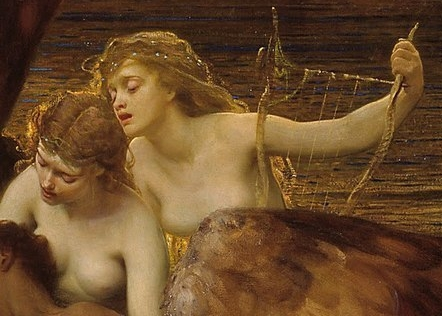
As you can see, we have vast ammount of sources for information
on alphabetic structures, so we can rediscover genealogy of the
writing systems by their inner structure, and not from words of
some ancient historians. Here’s an example of why we consider
Herodotus father of history, but I think Plutarch called him
father of lies in “On the Malice of Herodotus” – what reminds me
of Euclid, all those fathers and their toxic patriarchy. I have
a theory that gods were female, and student of student of
socrates’ student (and all four are homos) alexander the great,
made greeks shave (to make them forget that Mitra is Mother?)
though in Icelandic even Maður means Man. and their Mother is
Móðir. So whether their matriarchal tradition was stronger, so that neither wo- nor fe- but wife was
first, Kona, and husband is only eiginMaður, ownMan; or
what? I don‘t speak Icelandic, why do I
need to go to this, I‘m dilettante enough.
If we take historic evidence from the source which has already
shown it’s truthfulness, Hyginus:
The three Fates created the first five vowels
of the alphabet and the letters B and T. It is said that
Palamedes, son of Nauplius invented the remaining eleven
consonants. Then Hermes reduced these sounds to characters,
showing wedge shapes because cranes fly in wedge formation and
then carried the system from Greece to Egypt*. This was the
Pelasgian alphabet, which Cadmus had later brought to Boeotia,
then Evander of Arcadia, a Pelasgian, introduced into Italy,
where his mother, Carmenta, formed the familiar fifteen
characters of the Latin alphabet. Other consonants have since
been added to the Greek alphabet. Alpha was the first of
eighteen letters, because alphe means honor, and alphainein is
to invent.[9]
Only on the half way from the invention of alphabet to its way
to Greece will we meet a personage, mentioned by Herodotus:
The Phoenicians who came with Cadmus—amongst
whom were the Gephyraei—introduced into Greece, after their
settlement in the country, a number of accomplishments, of
which the most important was writing, an art till then, I
think, unknown to the Greeks. At first they [the Phoenicians]
used the same characters as all the other Phoenicians, but as
time went on, and they changed their language, they also
changed the shape of their letters. At that period most of the
Greeks in the neighbourhood were Ionians; they were taught
these letters by the Phoenicians and adopted them, with a few
alterations, for their own use, continuing to refer to them as
the Phoenician characters—as was only right, as the
Phoenicians had introduced them. The Ionians also call paper
'skins'—a survival from antiquity when paper was hard to get,
and they did actually use goat and sheep skins to write on.
Indeed, even today many foreign peoples use this material. In
the temple of Ismenian Apollo at Theba in Boeotia I have
myself seen cauldrons with inscriptions cut on them in Cadmean
characters—most of them not very different from the Ionian.
to Herodotus’ story also Diodorus disagrees
But there are some who attribute the invention
of letters to the Syrians, from whom the Phoenicians learned
them and communicated them to the Greeks when they came with
Cadmus into Europe; hence the Greeks called them Phoenician
letters. To these that hold this opinion, it is answered that
the Phoenicians were not the first that found out letters, but
only changed the form and shape of them into other characters,
which many afterwards using the name of Phoenicians grew to be
common.
Herodotus estimates that Cadmus lived sixteen hundred years
before his time, or around 2000 BC, which – if we compare it
with record of Hyginus is probably wrong by a millenium, because
if Palamedes really fought in Troyan war, and it really was in
12th century BC, Cadmus couldn’t live in 20th BC.
And if Cadmus really established Thebes, where Linear B was
used, now I understand why I read that Hyginus is sometimes
considered unreliable, but I think it’s these legends of Cadmus
are not reliable, but I shouldn’t claim this, because I’m not a
historian, but I will soon collaborate with AI to figure it all
out by feeding her all the historic records there are.
But another personage, Palamedes, the one who went further from
just 5 vowels and two consonants, Pausanias in his Description
of Greece (2.20.3) says that in Corinth is a Temple of Fortune
in which Palamedes dedicated the dice that he had invented.
Dice, huh! If we add the remaining eleven consonants, we get
exactly 18 runes, or 3 dice, today they call them three aettir,
because since then 18 became 24
Alpha was the first of eighteen letters, because alphe means
honor – It contradicts the argument that The Greek Letters,
alpha, beta, gimmel have no meaning in Greek but the meaning of
most of their Semitic equivalents is known. For example, 'aleph'
means 'ox' – and vita means life. Gamma is gamut, Delta is in
river, but it “is because Herodotus used it of the delta-shaped
mouth of the Nile.” oh that Herodotus, but we’ll see who’s
right.
It’s hard to say when Hermes (Trismegistus) lived, but there’s
another personage, from sources of Robert Graves, and though his
grandson told me that Robert used Hyginus, he definitely used
some other source. Here’s the chapter from Graves’s Greek Myths
in whole:
THE Three Fates or, some say, Io the sister
of Phoroneus, invented five vowels of the
first alphabet, and the consonants B and T; Palamedes, son of
Nauplius, invented the remaining eleven consonants, and Hermes
reduced these sounds to characters, using wedge shape, because
cranes fly in wedge formation, and carried the system from
Greece to Egypt. This was the Pelasgian alphabet, which Cadmus
brought back to Boeotia, and which Evander of Arcadia, a
Pelasgian, introduced into Italy, where his mother Carmenta
formed the familiar fifteen characters of the Latin alphabet.
b. Other consonants have since then been added
to the Greek alphabet by Simonides of Samos, and Epicharmus of
Sicily; and two vowels, long O and short E, by the priests of
Apollo, so that his sacred lyre now has one vowel for each of
its seven strings.
c. Alpha was the first of the eighteen letters, because alphe
means honour, and alphainein is to invent, and because the
Alpheius is the most notable of rivers; moreover, Cadmus,
though he changed the order of the letters, kept alpha in this
place, because aleph, in the Phoenician tongue, means an ox,
and because Boeotia is the land of oxen.
***
1. The Greek alphabet was a simplification of
the Cretan hieroglyphs. Scholars are now generally agreed that
the first written alphabet developed in Egypt during the
eighteenth century BC under Cretan influence; which
corresponds with Aristides’s tradition, reported by Pliny,
that an Egyptian called Menos (‘moon’) invented it ‘fifteen
years before the reign of Phoroneus, King of Argos’
> The
Greek
alphabet was a simplification of the Cretan hieroglyphs.
This line is false, which I will demonstrate, but let's keep on:
2. There is evidence, however, that before the
introduction of the modified Phoenician alphabet into Greece
an alphabet had existed there as a religious secret held by
the priestesses of the Moon—Io, or the Three Fates; that it
was closely linked with the calendar, and that its letters
were represented not by written characters, but by twigs cut
from different trees typical of the year’s sequent months.
3. The ancient Irish alphabet, like that used
by the Gallic druids of whom Caesar wrote, might not at first
be written down, and all its letters were named after trees.
It was called the Beth-luis-nion (‘birch-rowan-ash’) after its
first three consonants; and its canon, which suggests a
Phrygian provenience, corresponded with the Pelasgian and the
Latin alphabets, namely thirteen consonants and five vowels.
The original order was A, B, L, N, O, F, S, H, U, D, T, C, E,
M, G, Ng or Gn, R, I, which is likely also to have been the
order used by Hermes.
Irish ollaves made it into a deaf-and-dumb
language, using finger-joints to represent the different
letters, or one of verbal cyphers. Each consonant represented
a twenty-eight-day month of a series of thirteen, beginning
two days after the winter solstice; namely:
1 Dec. 24 B birch, or wild
olive
2 Jan. 21 L rowan
3 Feb. 18 N ash
4 March 18 F alder, or cornel
5 April 15 S willow; SS (Z), blackthorn
6 May 13 H hawthorn, or wild pear
7 June 10 D oak, or terebinth
8 July 8 T holly, or prickly oak
9 Aug. 5 C nut; CC (Q), apple, sorb
10 Sept. 2 M vine
11 Sept. 30 G ivy
12 Oct. 28 Ng or Gn reed, or guelder rose
13 Nov. 25 R cider, or myrtle
 4. About 400 BC, as the result of a
religious revolution, the order changed as follows to
correspond with a new calendar system: B, I. N, H, D, T, C, Q,
M, G, Ng, Z, R. This is the alphabet associated with Heracles
Ogmius, or ‘Ogma Sunface’, as the earlier is with Phoroneus.
4. About 400 BC, as the result of a
religious revolution, the order changed as follows to
correspond with a new calendar system: B, I. N, H, D, T, C, Q,
M, G, Ng, Z, R. This is the alphabet associated with Heracles
Ogmius, or ‘Ogma Sunface’, as the earlier is with Phoroneus.
5. Each vowel represented a quarterly station
of the year: O (greenweed) the Spring Equinox; U (heather) the
Summer Solstice; E (poplar) Autumn Equinox; A (fir, or palm)
the birth-tree, and I (yew) death-tree, shared the Winter
Solstice between them. This order of letters is implicit in
Greek and Latin myth and the sacral tradition of all Europe
and, mutatis mutandis, Syria and Asia Minor. The goddess
Carmenta invented B and T as well as the vowels, because each
of these calendar-consonants introduced one half of her year,
as divided between the sacred king and his tanist.
6. Cranes were sacred to Hermes, protector of
poets before Apollo usurped his power; and the earliest
alphabetic characters were wedge-shaped. Palamedes (‘ancient
intelligence’), with his sacred crane (Martial: Epigrams) was
the Carian counterpart of Egyptian god Thoth, inventor of
letters, with his crane-like ibis. Hermes was Thoth’s early
Hellenic counterpart. That Simonides and Epicharmus added new
letters to the alphabet is history, not myth; though exactly
why they did so remains doubtful. Two additions, xi and psi,
were unnecessary, and the removal of the
as (H) and digamma (F) impoverished the canon.
7. It can be shown that the names of the
letters preserved in the Beth-luis-nion, which are
traditionally reported to have come from Greece and reached
Ireland by way of Spain, form archaic Greek charm in honour of
the Arcadian White Goddess Alphito, who, by Classical times,
had degenerated into a mere nursery. The Cadmeian order of
letters, perpetuated in the familiar ABC, see be a deliberate
misarrangement by Phoenician merchants; they used secret
alphabet for trade purposes but feared to offend the goddess,
revealing its true order. This complicated and important
subject is discussed at length in White Goddess.
8. The vowels added by the priests of Apollo to
his lyre were probably those mentioned by Demetrius, an
Alexandrian philosopher of the first century BC, when he
writes in his dissertation
On Style: ‘In Egypt the priests sing hymns to
the Gods by uttering the seven vowels in succession, the sound
of which produces as strong a musical impression on their
hearers as if the flute and lyre were used, but perhaps I had
better not enlarge on this theme.’ This suggests that the
vowels were used in therapeutic lyre music at Apollo’s
shrines.
Compare the word Argos to Argo of those who went to acquire
golden runo. Argos was name of the guy who built that ship, and
also name of another mythical character, who was guarding Io,
and whom Hermes slayed. I know, it’s complicated. But argonauts
were traveling for golden fleece (the golden runo) according to
bbc, years before Troyan War, The story is of great antiquity
and was current in the time of Homer (eighth century BCE) – this
is just before the alphabet appeared in Greece, just at very end
of Greek Dark Ages. In those dark ages they managed to lose
LinearB – I wonder how could that be, I read that iron became
available, and cheaper than brass, so was it some proletariate
revolution to advantage of secret rulers from abroad or not? Oh boy, if you’re not historian you better
don’t read these parts, because I am also not, but I read
about it without caring to write the sources out (there’s no
sources given in the internet very often – we have googles, if
you care you search by yourself, but if you find what
contradicts – tell it to me, I will also look. Now we can do
this, paper books couldn’t make it. But if I don’t answer –
I’m either dead or two successful.
About linearB – "The script's usage spanned the
time period between approximately 1500 BCE and 1200 BCE , and
geographically covered the island of Crete, as well as the
southern part of the Greek Mainland." And greek
alphabet is believed to appear only around 800 BCE. So if
Graves’ version of the myth is true, 5 vowels & B T could be
the basis of Linear B. It does have 5 vowels, but ammount of
consonants is much more than just two. Could Io invent musical
notation, and only a century later did people invent Linear B on
the basis of Linear A and those musical notations?
Palamedes lived in times of Troyan war, which was around 1200
BCE, and could potentially cause the revenge and Dark Ages.
1200, not 1500, so duh… Argonauts are believed to travel about
that time also. Could it be that argonauts brought runo, which
told how to make the dice and "Pausanias in his
Description of Greece (2.20.3) says that in Corinth is a
Temple of Fortune in which Palamedes dedicated the dice that
he had invented." Were those dice be invented by adding
11 letters to the existing 5+2 to get 18 or 3 dice? but I already told about it. So I’m lost in
all these dates, it’s not even my speciality. I will return
here when I specialize in it more.
Hermes reduced these sounds to characters,
using wedge shape, because cranes fly in wedge formation, and
carried the system Greece to Egypt
Hermes is Toth, the one who gave writing to egyptian. So could
it be, that it was not Hermes Trismegistus, but the previous
Hermes? Could they be truly the same person? Oh, complicated.
Even about invention of writing there’re two versions: whether
it was Thoth, or Seshat. Some people say that it was Seshat and
Thoth only transmitted it from her
Egyptian hieroglyphs combine several systems, and one of them
is actually alphabetic:
Only egyptian hieroglyphs are believed to exist since 3100 BCE
– if they existed with these alphabetic signs from the very
beginning I am not aware of. It seems so. But what’s interesting
is that Sumero-Akkadian cuneiform is believed to exist from the
very same century (to about the same period of early AD) but
then there were proto-cuneiform documents, and signs used there
were seen on tokens from as far as… These
tokens were in use from the 9th millennium BC and remained in
occasional use even late in the 2nd millennium BC.
But demotic is told to appear in 600 BCE – could it become in
use because of Hellenic influence?
Why I’m asking such questions is “Hermes reduced these sounds to
characters, using wedge shape, because cranes fly in wedge
formation, and carried the system from Greece to Egypt.“ here’s
demotic:
The text on Rosetta Stone is also in demotic, so it seems they
also had some other signs, whether for syllables or even for
some rudimentary ideograms. After all it was the same egyptian
writing system.
But “Hermes reduced these sounds to characters,
using wedge shape, because cranes fly in wedge formation“
— could it tell of ugaritic alphabet or even runes?
Runes are the most ancient, otherwise their sacred groves
wouldn’t be ordered to be burnt, the Irminsul and Donar’s Oak
wouldn’t be demolished: trees can tell when they were cut and
how old they are.
excuse my inner biased nazi, he wants to believe
Ugaritic is a much credible candidate to that role. But
speaking of birds, could it relate to such a weird thing as
ornithomancy (aka augury)?
The Ugaritic script is a cuneiform abjad used from
around either the fifteenth century BCE[1] or 1300 BCE[2]
For ugaritic already did distinguish vowels from consonants
& labials from linguals better than the most of them. Not
worse than phoenician & georgian. But M is already off the
column, but only one symbol off. or is it three symbols?

This chart adds three more symbols to the artefact. Do they go
round the edge? Maybe two symbols this structure would endure,
but three breaks the axial symmetry, so I don’t see them on this
clay tablet, thus they do not exist.
And they do not exist:
This is where they took it, and it literally tells “missing
simbols” thus they’re not on this tablet at all. I saw several
other charts, but until I see the abecedary they’re taken from,
I just ignore them as academic folly, that bs-half I told you
before, the replication crises and stuff.
Alphabet is magic structure with groovy symentries, pronoun or
diety semantics, multiple applications and universally
distributed even in syllabic and hieroglyphics structures.
MiddleAsterns with their matres lectiones are bridge between
alphabets and abugidas. And further to the eAst it is abugida of
3 vowels which connects all the alphabetic structure even to
japanese kanas, where those three a i u share the order between
eUropean and Japanese.
Three fates are three mothers in kbl, where k is actually aleph.
and l is ^ is г is c
Vowel labial and linguals. Even though sandmen were made to
believe their vowels are guttural sand.
Though it’s important, because kbl sees three mothers as air,
water, fire – three elements, because before 4࿌ came 3࿋. 
Notice how ࿌ grows out of ࿊
– and all fish
flow clockwise-and reminds ࿘
–
and though the opposite simbol is also in unicode, , considering
the direction of flows in the Northern hemisphere, only some
Australians would consider the opposite swastika a raising one.
– I have to reedit this parts when I send text to southern
hemisphere, which lays beneah Indonesia.
I don’t know what is “Условия
использования” and I don’t want to read this jewridicule text,
if they allow us to use these pictures, then why bother
reading, and if they don’t, why suffering their making the
world a less free place. As doctor King said, one has a moral
obligation to disobey unjust laws.
The map makes sense: Vietnamese people say that Sindbad from
Arabian Nights is actually vietnamese national hero, and all the
toponimics in the fairytales are well known to vietnamese. Now I
need to check this anecdotal evidence (from a russian friend
living in Vietnam) comparing the Sindbad fairytales and the
places on the map.
They also found monolitic monuments in New Zeland, so humanity
is probably much older than we think and geographically it’s
spread long before we thought: see Kaimanawa wall. Ancient
Suppressed Stone Structure in New Zealand (mirror)
So in the previous part I tenderly touched the subject of
probability of alphabet originating around Philippines, but now
I go further to the island without predators, where humans could
originate from. New Zealand. Now when I remember about predators
I think it makes perfect sense: whether we eliminated them
there, or they’d eaten all our predecessors elsewhere, and
somehow to New Zealand they didn’t arrive. But then why don’t we
have a pouch? Because there’s no marsupials in New Zealand.
Though we can find the alphabetic structure of letters laying
out according to their articulatory features, could it be that
vowels came to semits as primal screams and only greeks make
them vocal, vowel. What if there only were primitive screams
before alphabet appeared. But A I U are quite vowels. Could it
be that vowels were known before they became 5 of them? Could be
that the system splat and one part invented vocals, the other
invented additional prevowel screams and Greece found in Runo a
writin system influenced by both the branches of the splat
alphabetic system.
I saw there are some ingenious writing systems in Indonesia, I
haven’t look at them yet. And I haven’t even heard of such
writing systems in New Zealand, let’s dig into this information
now.
and I found many ancient alphabet. And even though the system
teaches that they are no more than ten centuries old, I dare to
doubt what system tells again. Because I’m going to watch at the
system by their structure to discover the chronology of the
idea’s development by comparing their objective features.
Javanese script:
Are those
corpses the signs this historic document is written with? Then
those two messendgers are chinese hieroglyphics and european
alphabets. Then signs in this syllabary should have some
meaning.
The manner of drawing is the most similar to mayan among all
non-american things
(so I would compare these two writing systems) ~ maybe hangul
was the most similar to mayan before, and it still is in a
sense.
I’m sure I saw this sword on the final pane of this yonkama
somewhere near Europe. It has a writing on it.
As soon as I find the image of it, I will bring it here.
It has alphabetic writing on it. Thus the messenger on the right
is european, the messager on the left is chines, who killed by
martial arts.
upd:
here's the image I was looking for, but this (probably ritual)
knife is different.
or was it something like this I saw then:
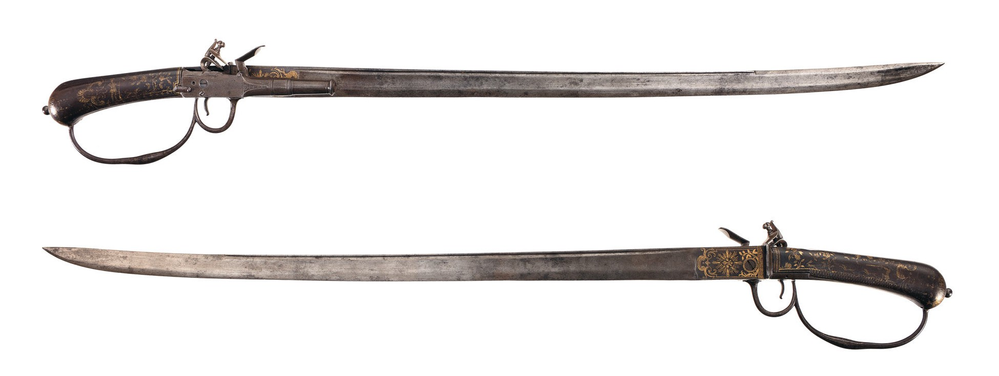
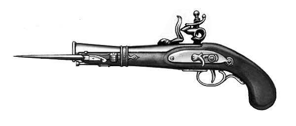
One was наговне, the other was martial artist, both died. but
let's return to javanese script:
Javanese script is a huge topic,
https://en.wikipedia.org/wiki/Javanese_script with its own
numerals, and zero named nol (as in
russian).
But what matters for this research is that vowel order is just
as in japanese, when other indonesian script usese the european
one, aeiou.
Another interesting writing system in the region is (or was?)
Sundanese script:
The most funny thing about this alphabet I can see now is that
it looks like some alien math: ᮃᮊ᮪ᮞᮛ ᮞᮥᮔ᮪ᮓ
and what follows is Old Sundanese script:
I told you guys this region has some ancient writing tradition:
Palm-leaf manuscripts are
manuscripts made out of dried palm leaves. Palm leaves were
used as writing materials in the Indian subcontinent and in
Southeast Asia dating back to the 5th century BCE,[1] and
possibly much earlier.[2]
I am sort of disturbed by these magic drawings with texts I
cannot read. It is the book I’ve always wanted to read, now I
combine it myself, with finest images from the most valuable
sorces, and for free, what can be better. I combine this images
without asking, but it envokes the change in law. When
reverse-search for images was invented by Tineye, and then
copied by Google, it made no sense to prohibit others’ images
any longer: they became free advertisement for the original
sourse rather than stolen property. Shared is not stolen, it was
hard to concieve before computers (bc actually; and ante
digital) and computers are where высший разум appeared, ai is
literally высший разум, highest intellect, as russians name ye
higher power.
Disturbed or not (this book IS disturbing, be careful with it,
please) I have an obligation to proceed:
Here’s what wiki writes about another writing system of the
region and of Jawi script I’ve shown you above:
Rencong, or
"Rentjong," is a general term used to refer to any native
writing systems found in central and south
Sumatra, including Kerinci,
Bengkulu,
Palembang
and Lampung.[1]
These
scripts lasted until the 18th century, when the Dutch
colonised Indonesia.
These scripts were used to write manuscripts in native
languages and in Malay,
such as the Tanjung Tanah Code of Law. The Malay writing was
gradually replaced by the Jawi script,
a localized version of the Arabic
script.
I’ve no idea what arabic script they’re talking about, rather
than of this one, Arabi Malayalam alphabet with Malayalam
alphabet correspondences:
because it doesn’t remind arabic to me at all
(they probably said about some other writing
system for this language, based on arabic) And even the
order of consonants is indian, they’re both considere brahmic, But
these writing systems are completely unknown to common public, I
wonder why they’re fascinating. Probably humanity doesn’t see any
use in these “reinvented bicycles” but now we have AI to recompare
all these writing systems to define the common features, but they
should also listen how all these syllables sound, to be free from
bias of mistakes collected by humans. Does it make humans useless?
No, if we work to the same goal, and we can repair them after some
space storm piercing both atmosphere and seclusions of caves.
Humans are less influenced by electromagnetic storms, so we can be
very useful, not mentioning our being funny and cute as we keep
our pets alive and we share resources with them and we .
Notice that Rencong still shows u with a dot below, yet it is
the first among oceanic syllabaries to put i in european way.
and H as II
But the article goes on:
Detail of a Kerinci Rencong manuscript (KITLV
Or. 239). The text reads (Voorhoeve's spelling): "haku
manangis ma / njaru ka'u ka'u di / saru tijada da / tang [hitu
hadik sa]", which is translated by Voorhoeve as: "I am
weeping, calling you; though called, you do not come" (hitu
adik sa- is the rest of 4th line]
Rencong scripts were often written on tree
bark, bamboo, horns and palmyra-palm leaves. Many of the
Rencong scripts are also known as "Surat Ulu," or "upriver
scripts," given their prevalence away from a coastline.
The term "Rencong" is often confused with
"Rejang," which refers to a specific set of related scripts
that were used to write various dialects of the Rejang
language and for writing Malay in the region.
The funniest elements of Rejang so
far is sun rotating:
and just another scheme:
Counterclockwise, but how do I know this? Maybe it steps those
legs down and walks thus clockwise. It’s different to what I
said about swastikas, which means I could be wrong, but, as
sometimes say half(?) of scientific
literature is wrong, also according to replication crisis. And
it could be present here, when one image shows european aeiou
order among vowels and the other introduces a distorted brahmic
aiueo as auieo, I wonder which is true, but seeing this runic
style I bet it’s aeiou. I should have bring turkic and hungarian
runes here for comparison, but I will rather stay in the region
for some more.
Another writing system with unknown year of origin doesn’t even
have english wiki page.
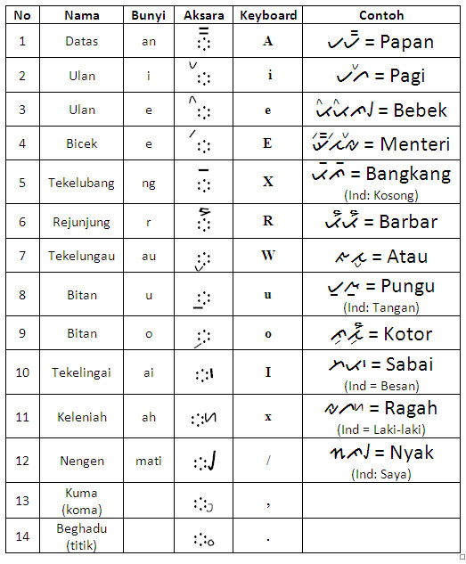
There are many recently recent writing systems:
Balinese script:
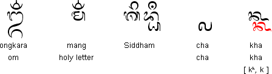
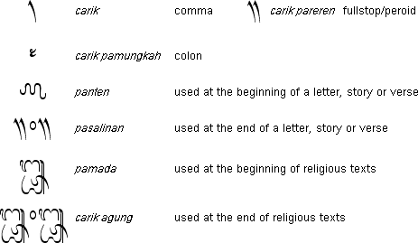
Although the Balinese script is similar to that
of many other Asian languages that share Brahmi ancestry, it
is unusually elaborate and beautiful. The most common use of
the alphabet today is in religious settings, such as holy
manuscripts and ceremonies, especially those relating to
Hinduism. In fact, it was once believed that the script itself
was sacred and could not be deciphered or even taught to
anyone unless they possessed the appropriate spiritual power
to do so. Even today, when used in religious texts, the script
uses certain “holy letters”, which are thought to have special
powers beyond the sounds that they represent.
Lontara script:
Another Lontara is Lontara Bilang-bilang script:
Transliteration:
1. ininnawa mapata ko, ala i pakkawaru, toto teng lésangmu.
2. tinulu' kuwala
lonré, pata kuwala guling, pésona sompekku.
Translation:
1. O my soul, be patient, make your efforts determine your
destiny.
2. I make my honesty to be a ship, my patience as its rudder,
and my faith to God as the sail.
((From a poem by Colli' Pujie) Information provided by Ridwan
Maulana)
The Lontara bilang-bilang or
Bilang-Bilang script, which means "counting script", is a
Buginese cipher script. The shapes of the glyphs were derived
from Arabic-Indic numerals (۱۲۳۴۵۶۷۸). The script appeared in
the time of the Kingdom of Gowa in South Sulawesi in 18th
century. It is used traditionally and privately mainly to write
diaries and poems in Buginese.
Notable features
• Type of writing system: syllabic alphabet / alphasyllabary
• Direction of writing: left to right in horizontal lines
• Each consonant has an inherent vowel (a), other vowels are
indicated by adding diacritics to the consonant.
• There is no virama sign (as in Lontara), and no "ha",
because traditionally the Buginese language did not use the
"ha" sound. The letter "ha" in the Buginese script/Lontara is
an addition due to Arabic influence.
Used to write Bugis or Buginese (Basa Ugi / ᨅᨔ
ᨕᨘᨁᨗ), a Malayo-Polynesian language spoken mainly in Sulawesi
in Indonesia by about 4 million people.
Batak script:
and here is wth!
So what’s the point in collecting these writing systems, look
at how vast this field is: https://en.wikipedia.org/wiki/Writing_systems_of_Southeast_Asia
only AI can compare them all to see their common point and
interesting differences. For human it can take decades, humans
are slow.
I was hoping to find roots of writing system around New
Zealand, but they haven’t excavated it yet. Maybe Kaimanawa wall
will bring something to the theme or Pyramid Valley in New
Zealand has its name not by accident, until now I only found
that native australians also have only 3 vowels: A I U and
monotheistic deity named IO is known around that region. Maori
had no writing systems, but they’re believed to be not the first
nation living in New Zealand. I’ll keep on digging this
direction, but for now I will turn to other sides of the global
alphabetic structure.
Kotodama or kototama (言霊?, lit. "word
spirit/soul") refers to the Japanese belief that mystical
powers dwell in words and names. The notion of kotodama
presupposes that sounds can magically affect objects, and that
ritual word usages can influence our environment, body, mind,
and soul. Kotodama is a central concept in Japanese mythology,
Shinto, and Kokugaku. It is also fundamental to Japanese
martial arts.
The 48 sounds of Hotsuma no Kototama:

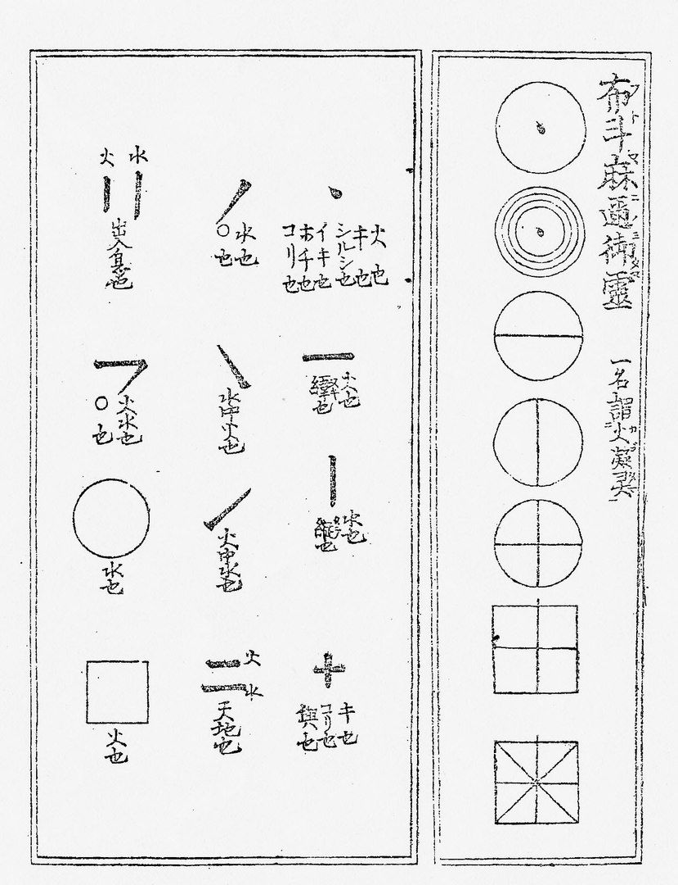
The Kototama of MIZUHO NO TSUTAE by Yamaguchi Shido
(L) Kada’s Inari Koden Chart. (R)
Yamaguchi’s Futomani no Mitama Chart.
Editor’s Note: This is an English rendering
from the Japanese book, Koshinto Gyoho Nyumon by Omiya Shirou,
pp 100-107.
Yamaguchi Shido in the mid-19th century wrote
a book that integrated the strange symbols found in two ancient
scrolls into a metaphysical system of Kototama.
Yamaguchi Shido
In 1765 Yamaguchi Shido, the
son of a wealthy farmer, was born in Awanokuni which is the
modern-day Kamogawa-shi in Chiba prefecture. He was a child
prodigy and learned Chinese literature at a young age. When he
was 25 or 26, he moved to Edo to live with his uncle. He started
the study of kokugaku, which is the study of ancient Japanese
literature.
Futomani no Mitama/Kagotama Chart
The Yamaguchi family had handed down over the
generations an ancient scroll that contained a mysterious chart
known as Futomani no Mitama, also called Kagotama. Yamaguchi
wanted to unwrap the secret of this chart. After three decades
of studying, he came to understand that Futomani no Mitama told
the secret about ancient kototama, the power of sound. But he
did not quite understand the kototama.
Inari Koden/Mizuhi no Ontsutae Chart
The Inari Koden or Mizuhi no Ontsutae chart
was handed down in the prominent Kada family. The Kada family,
together with the Hata, of Kyoto were hereditary priests of the
Inari shrine in Yamashiro no kuni, the present Fushimi Inari
Taisha shrine in Kyoto. The noted kokugaku scholar, Kada no
Azumaro (1669-1736) possessed this chart at one time. Azumaro
has a lovely shrine at Fushimi Inari which I visited in 2012.
Azumaro passed the chart to his adopted child, Tamiko, who in
turn passed it to Kada no Noriyuki.
Yamaguchi Shido studied classical Japanese
literature under Kada no Noriyuki. Later he taught nobles at the
Imperial Court in Kyoto. During these studies, Yamaguchi was
given the Inari Koden chart. [Inari Koden probably means the
ancient document of Inari.] The secret symbols written in the
chart enabled him to solve his question of the ages about the
Futomani no Mitama chart.
Mizuho no Tsutae by Yamaguchi Shido, an
integration of the two documents
By receiving the Inari Koden, Shido became
more confident about his study. In the year Bunsei 1, 1818, he
returned to Edo and spent five years in developing a solid base
for his study. In the year Tempo 1, 1841, he was invited to the
house of Fukui Shigetsugu, his brother-in-law, at Kameyama in
Kyoto. There he began writing his work entitled Mizuho no Tsutae
which became his life-time achievement.
After that, his study of Kototama became so
popular among court nobles in Kyoto that he gave many lectures
to them. In the year Tempo five he finished writing seven
volumes of Mizuho no Tsutae. Two years later, he was invited to
see Kishu Tokugawa (one of the top three Tokugawa-related
families) and went to Kishu in Wakayama. There he offered his
books, Kamikazeiki and his series of Mizuho no Tsutae to Kishu
Tokugawa.
Kototama of Yamaguchi Shido
According to Yamaguchi, all things in the
universe consist of water and fire. These are also referred to
as the sound of “i” and the sound of “ki.” Earth and people are
all made up of these water and fire elements. The universe can
be very much affected by the kototama that is created from water
and fire. Shido thought “iki,” breathing, also consisted of
water “i” and fire “ki.” Breathing was absolutely imperative to
carry the words with kototama in them. For him, iki means to
live, ikiru.
Yamaguchi found that the Inari Koden had much
to do with Futomani no Mitama. He carefully compared them to
each other. He revealed that the creation written in Kojiki
actually told about the generation of goju-on, the fifty
Japanese kana characters/syllables.
Yamaguchi saw that the Futomani no Mitama was
made upof the five elements: the dot, the circle, the horizontal
line, the vertical line, and the square.
He realized that the Inari Koden, through its
twelve forms explained each of the five symbols in the Futomani
no Mitama chart. This helped him work out the hidden meaning of
Futomani no Mitama.
Yamaguchi noted the goju-on, the fifty voices
of the kana syllables, as principal sounds and he made them into
figures that represented the true identity of the universe.
The Japanese 50-kana syllables are a system
showing the power of sound that controls the universe.
You can control the universe if you have a
deep understanding of each sound. The belief of kototama that
koto, something that is said, will become koto, something that
happens, is a metaphysical system in the innermost recesses of
traditional beliefs.
Another point of view at the same mysterious subject is
futomani-chart:
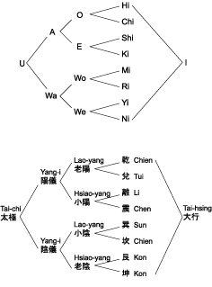
once again:
Because some signs are exactly the signs of 5000-year-old Jiroft artifacts — (Iran).
Archeologists believe the discovered inscription is the most
ancient script found so far and that the Elamite written
language originated in Jiroft, where the writing system
developed first and was then spread across the country.
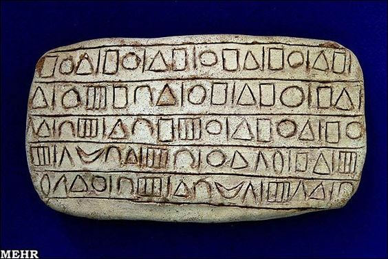
If kotodama has any relation to jiroft, jiroft could be an
origin of it, and it could be some musical notation, because
they’re all vowels.
Wild, wild assumptions. Don’t believe me, doubt everything you
read here, and not only here.
And here's another account on the subject of Hotsuma:
Out of nowhere in 1770s Japan appeared a series
of books handwritten by an otherwise unknown person, Yasutoshi
Waniko, who claimed to simply be translating into Chinese a
series of ancient Japanese histories dating to 100 CE or even
800 BCE, although he boasted that the “translations” required
30 years of labor. Operating on the assumption that these
books were actually forged by Waniko himself, there was some
precedent for his folly; a century earlier, the Edo court had
been all a-twitter about a forgery called the Kujiki
Taiseikyo, which told a new history of Japan. Waniko simply
raised the intrigue and awe to a new level by predating his
“history” to long before Chinese writing was imported to
Japan. Of course, this raises the question, how was this
written down before Chinese writing? Waniko’s answer is that
both the Hotsuma Tsutaye and the Mikasafumi were written in an
otherwise unknown script called woshide which is either a
forgotten predecessor to the Japanese syllabary or the
giveaway of a clear forgery, depending on whom you’re asking.
But what interests me about the woshide books
is their strict adherence to classical Japanese meter
throughout their 1500-odd verses, which makes them the
earliest instance of epic poetry in the Japanese language.
Regardless of whether they were composed in 1775 or 100, they
predate any knowledge in East Asia of Western poetic forms.
Furthermore, the book is written in Old Japanese, of which
very few examples survive, and is full of obscure word-forms
that somewhat resemble ancient words. If it is a forgery, the
author must have done intense research on Japanese
linguistics, and he may have been familiar with Ainu epic
songs, a century and a half before anyone else saw fit to
write them down; if this is the case, what else isn’t he
telling us? Or are we willing to admit the possibility that
these obscure, beautiful poems date to a distant era unknown
to modern historians?
These documents lay almost completely forgotten until 1966,
when an amateur historian stumbled upon an excerpt in a used
bookstore and made it his life’s mission to find and publish
the original texts. (The Mikasafumi has only been found in
excerpts, but woshide fans maintain hope.) But it can also be
seen as the first in an interesting and understudied genre of
Japanese literature, the parahistorical document.
In favour of forgery also speaks the fact that two out of three
basic stand for labial vowels (or could angles stand for
labiality? I just collect information here, knowledge is yet to
emerge)
But these three basic figures, circle triangle quadrat can be
seen in other writing systems, where they represent three
mothers, but always differently arranged:
Brahmic script:
As you can see, triangle is vowel, quadrat is labial, circle is
lingual.
Another alphabet, and this time it’s actually alphabet, having
these three forms is afrikan n’ko, which is considered to
be invented in the middle of XXth
century, but here’s another opinion about its
origins:
Here’s some more information about it, if the link goes down,
tell me to make a mirror for it, for it’s saved: http://bafsudralam.blogspot.com/2008/08/thinite-writing.html
and it gives references: Arkell,A.J. (1961). A History of the
Sudan. University of London. Hinkel,F.W. (1978). Exodus from
Nubia. Berlin: Akademie-Verlag. Patrie,W.M.F. (1900). The Royal
Tombs of the First Dynasties. London: EES. Van de Brink, Edwin
C.M. . (1992) Corpus and numerical evaluation of the Thinite
Potmarks. In The Followers of Horus: Studies Dedicated to
Michael Allen Hoffman. Egyptian Studies Association Publication,
No.2: pp.265-296.Oxford: Oxbow Books.
Only this time sphere is vowel, triangle is labial and square
is lingual, and this time they’re literally a, m, s. and even gb
has some labial to it.
Same shapes can be seen in Tifinagh, another african alphabet,
which is not considered to be recent, instead it is now
sometimes taught to be phoenician as well, no matter how
different from the previous phoenician it looks. That is mine
and this is also mine, duh:


Only this time they don’t distinguish square
from circle very much, and triangle is present only in one of
these three tables. And even though we can theorize that
original circle is A, the small circle, as it’s shown on some
other tables, and that triangle is labial v, and that square is
rather r or s turning in circle when drawn inaccurately, they
have another way to show three mothers: one dot is A (or E?),
two dots are W (or F?), more dots are velars (does stroke in G
stand for the third dot as dots are in libyan?), which are made
by tongue actually, and apes cannot pronounce coronal sounds, so
it’s reasonable to think that before we could draw we couldn’t
pronounce them either, but it seems we could calculate before
that. Notice that Tifinagh recognizes these dots, but Libyan
does not, it could be caused by different reasons, I will not
theorize on. Though four dots standing for two forms of H make
me think and go brackets
The same story, about the “inventor” being just a collector of
pre-existing signs into more literary writing system I’ve heard
of other african writing system. Was it Vay syllabary or was
it.. but article on Osmanya instead tells As nationalist
sentiments grew and since the Somali language had long lost its
ancient script
It’s time to compare those Tifinagh dots and
Libyan strokes to Ogham:

Though the image above draws
letters top to bottom, when inscribed on
stones, Ogham is written vertically from bottom to top.
here’s another point of view:
In secluded fields, on the
walls of churches, and beneath construction sites, stones have
been found with intricate markings that rise from the lower left
up to the center and then down to the lower right. This is the
ancient Celtic Tree Alphabet known as Ogham (pronounced owam)
What is surprising about ogham is the order of its vowels,
aouei, it’s quite unique, but still A is the first vowel. And
this order is exactly vowel, labial, lingual: pure vowel which
doesn’t need neither lips nor tongue, vowel you won’t be able to
pronounce without lips, vowels for which you need tongue.
Comparison of Ogham to Tifinagh shown that both have . for A
& : stands in both for labial (vowel or semivowel) as if
these writing systems split when they only had two vowels. and
when africans used dots for all sorts of letters, europeans used
dots for vowels, which could be some primitive musical notation.
Also the myth of 5 vowels is alive in case of Ogham. And five of
one type correspond to dice of runes as shown on the “falling
stone” five per die. And though the last time I compared runes,
even stavless runes to ogham they didn’t have much in common,
Funny observations about ogham is that f & h look alike,
and in japanese they’re the same. But it is not ogham: in ogham
f reflects t as in latin minuscle, c reflects s as in
k-symmetry, b reflects h and in japanese b is literally voiced
h. Then it makes sense that in ogham bhm all are first among
consonants, as in abcd system, but only F is third in its group,
as it is in greek, the same M situation, but only on F®eya (fairy, фея, θεά (θεά is goddess, θεία is
aunt, θέα is view)) as in greek.
Ogham is sometimes named by it’s “first” letters:
Beth-Luis-Nion, which could tell that order was different before
F became the third oghamic “letter”, and I see that the image
with a hand shows that very order in ogham but the previously
mentioned order in fingers, yet the calendar ogham explains.
It is one of the most mysterious writing systems and my only
excuse is that others also don’t know much about it. But it’s
not excuse enough, I keep on digging. And I remember I saw such
palms for other writing systems:
And while I’ve no idea what to do about these hand diagrams,
I’ll post some more ogham:
for some reason I brought
here a page for runes from the same book page of which speaks of
ogham in a following image. maybe because of those runic knots
(knotes?)
You need calendar
to make good clock, you need that mechanics to put
mirror against the sun to give your plants more light in the
north.
But back to language and oghamic vowels, it’s as if ogham
replaced that ei & ou we have in latin alphabet. Or if we
compare them with japanese, it’s as if they just replaced o
& i. Which is actually as if ou is o & ei is i. If we
compare oghamic vowels to philippines vowels, then it’s also as
if ou & ei were replaced. but why is it o in one case &
u in another. Are you sure philippines distinguish o from u? all
the transliterations are only approximates, every nation uses
it’s one musical mode. I wonder if Icelanders saved their songs
in their spoken speech when englishmen prohibited singing.
And as in case of noin the third letter became fifth, i could
be 2nd before o & e were invented. But then there should be
ogham withough 4s and 5s. Let’s search for the most ancient
ogham. Then again, it was written on stones, and carbon analysis
doesn’t work for stones. Any way, ogham is surov, u & o it
has more than e & i.
At last I’ve seen some real common element between ogham &
runes: in both o is literally double a.
So let’s research what ogham of 1s and 2s could be:
b is first, l is second, it reminds me of b & t.
h is first – it corresponds to japanese
kanas where b is literally voiced form of h. and the second is
d and the third is t – as in arabic and farcy (this word
sounds with connotations in english, so I will use word
“persian” from now on. Persi is breast in old russian, and
iranian women have big tits, though they have to clean their
genome from southern bestiality. Both arabs and pers, and
though muslim community may oppose genetic therapies, because
smart people believe less, they should understand that we’re
made in god’s image, so it’s no good to obstacle his plan (his
or her? now people think it’s his, before they thought its her
or even hers, which is male pronoun or article in german, how
could that happen? is it a part of m-replacement situation?
Such vague images of hypotheses flow in my mind, that’s the
boullion crystal grow from. and it is reflected with l,
while t is literally l with dash.
But the third letter is w and it's already a tradition that v
interplaces t as the final letter: in genetics v appears in rna
where dna had t, as if masons or whoever know about what I'm
excavating here? (this I believe the most, since a&t are the
first and the last & c & g are both of k, which is the
central letter of alphabet of AV — see, again V stands instead
of T as the final letter on another lever) or is names of those
molecules surprisingly ancient? (I doubt this the most) or is it
some hillarious cosmic coincidence? (I doubt this either, but
most of colleauges will choose this as the case, but you find
systems sorting out such coincidences without ignoring them
simply because the most of them are nothing, you have patience
to find the true)
Once again I post this weird image which only
happens in latin alphabet. Together with L & R in axial &
velar column in lineal. Latin is special. But honestly I don't
know other alphabets that well to cut them at t or v and even in
those I know enough I didn't make enough effort to find their k's.
But it's only in this
dictionary version of ogham w, in other images it's f, which
is spectacular, because it reflects t in ogham also. I
pronounce it t-f the θ
In arabic it's also this btθ: ب ت ث it the beginning of
the alphabet. you read it from right to left. b is also
distinguished from t by the position of those dots, but it's
still 1 2 3 as in ogham, and I don't decide here what was the
direction of the system's travel, because wherever it came from
was not the only source, the system is universal and only
archaeology can tell where it's met earlier. Also persian
alphabet happened to be derived from arabic: ب پ ت ث is
different by distorting that oghamic sequence: پ is derived from
ب as б & в in russian. پ (pāʾ) is not
considered a distinct letter, but a variant of ب (bāʾ) that is
sometimes used to write foreign names and loanwords with the
phoneme /p/. It can be written and pronounced as a ب (bāʾ)
instead.
Skew letters of m g ng could be the same b t θ with shut nose,
and then let's compare them with vowels, as if in tifinagh dots
only number matters:
a ~ b? it's beyoud weird, but remembering boustrophaedon I must
say they look like reflection of eachother, especially when they
look like a & Б
о ~ t? or was it i~t? i makes more sense, but still doesn't
make much of it.
u ~ θ? is it that very v in place of ת I was speaking about in
the context of genetics? See, this is how my drafts look, and
out of them this work arises.
In conclusion I must notice that in runes it's the opposite: ᛒ
looks like double ᚦ and here I stop improvising & go to my
notes, where runes are compared to hebrew:
And though hebrew has four more letters (which makes me think
of runic18 as of more basal form of the system) in runic the
final line ᚮᚱᛦᛋᛏᚢ is out of structure, while in hebrew
עפצקרשת
is
not.
We saw that final line is the most prone to mutations: in latin
labial doubles (or if it's from that final ᚢ then they triples) and the fourth V
is semivowel Y & it stands almost at the end of the line,
where it reflects final v's in runic, archaic latin and old
russian, and final vowels in greek and modern russian where
final line is all vowels and ex-vowels. And Ѣ in russian
graphically groups with trinity of ЪЫЬ. The fourth 6, as 18
runes became 24, or was Ѣ removed because Б could be of that
group. But why not B then? b is exactly Ь. can I say that Ы
don't count, because it's not a letter but ligature. Or is this
part of research is only apophenia? In comparison of uvw at the
same beginning of the final row, standing for 666 as many other
ideas interwhine with it (from carbon structure to roman
numerals and 3 runic dice – it's like one of the most common
connections of the pre-christian times. Just as another common
conception, the three mothers. Are they 3 sicks and other
resemblances are wheather dummies, dolls to fool you, or are
they other sicks other oracles other fates? Yet there are only
three. But in latin alphabet there're 4 of them. If Y is 6, then
what is ij? i=3? it's the third vowel. And it supports that V is
5. But I is 1? A is one in latin alphabet. How so? It looks more
like 4. E looks like 3. AIV je! あいう yo! look how much they
remind aиу as they put it in russian. The world is so much
interconnected than our history dares to convince us based only
on few centuries, having most of human interactions in darkness,
when our cultural elements may be the evidence of our
interactions. But as for above problem, of V being fifth in the
column and X being next to it as if there used to be only 10
letters, for X used to be the final and stand for T and for Ten.
Most of people only know IVX and not LCD in roman numerals, as
if IVX is the most common, and what is above 40 is "many" If I
was 1, then the order of vowels was different from any we know,
because most of the times A is the first vowel, whether it's
aeiou, aiueo, aouei or any other. But let's arrange it according
their graphic forms and to see if they make some gammut: E is 3,
A is 4 V is 5? O was supposed to be between A & U, but jews,
for example, didn't have O among vowels, they use a labial for
it. But that labial is literally V. Standing where it used to
stand before they sent it past T. So then ע is not Y, it's 4.
But if ו is still 5 (for ו is v) then the trick is to go
tetraktis:
4 vowels, 3 labials, 2 velars, 1 coronal — then we have equal
ammount of linguals and labials, or it would have been like this
if M wasn't replaced, but still vowels and consonants will make
4 & 6, which were conidered masonic numbers where I found
these images:
or is it 3 and 5? but they're speaking about the same
phenomenon.
Probably they didn't decide to be explicit about the 666 of the
three final lines. And they could look like this because of 3
dice, and as of those two 4's, they could stand for two
knucklebones, more ancient form of dies, but being literally
bone, can explain the etymology of die in dice. And knucklebones
were used for different divinations, one of which was literally
named alphabet oracle: http://opsopaus.com/OM/BA/GAO.html#Heinevetter
(mirror) (though it doesn't even have
greek version of verses, so why do I even bother. but it tells
how to calculate the divination) Though just as cards
can be used for both divination and game, knucklebones were used
for gambling and also for children's games such as ашички &
many others: https://en.wikipedia.org/wiki/Shagai
And though that wiki article tells mostly of mongols, it's
because in Mongolia this tradition is still alive, while it used
to be very alive in europe, including Roman Empire, and further
in the prehistoric past. Though mongols like kazakhs use shagai
even for musical instruments:
But where did I take that they used to use only two
knucklebones? Which are not knucklebones, but ankle bones,
astragaluses, taluses or is correct plural form for talus tali?
Tali? I think that's the name of the most primitive count system
I know of... I'm thinking of tally stick, or simply tally, or
was I thinking of tally marks, and tallies have something to do
with bones. yet what I was speaking of? again:
But where did I take that they used to use only two shagais?
First of all, because that's what the form of roman alphabet
tells me, second is there are exactly two ankle bone per a
beast, and I move from there, to find games of twelve years (Two players in turn toss two pieces like dice for
twelve rounds (corresponding to the twelve-year cycle of the
traditional calendar), counting a point for each horse landed.
If no player reaches 12 points, the game restarts, otherwise
the higher score wins.) – what do they mean "horse landed"?
The sides of these bones not only have numeral value of 1, 3,
4 or 6, but also names: In shagai dice, the rolled shagai
generally land on one of four sides: horse, camel, sheep or
goat. A fifth side, cow, is possible on uneven ground. The
comment to the image: Possible shagai positions: Camel, Horse,
Sheep, Goat
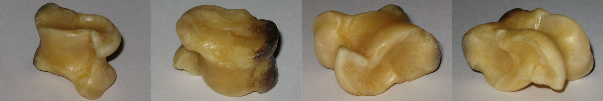
Here's another alphabetic artifact, whether it's also oracle or
just kind of prayer or simply a poem, but the third image uses
word Orakles:
In Tacitus' Germania this is said:
Auspicia sortesque ut qui maxime observant: sortium consuetudo
simplex. Virgam frugiferae arbori decisam in surculos amputant
eosque notis quibusdam discretos super candidam vestem temere ac
fortuito spargunt. Mox, si publice consultetur, sacerdos
civitatis, sin privatim, ipse pater familiae, precatus deos
caelumque suspiciens ter singulos tollit, sublatos secundum
impressam ante notam interpretatur. Si prohibuerunt, nulla de
eadem re in eundem diem consultatio; sin permissum, auspiciorum
adhuc fides exigitur.
which is translated by robots as The most important of divining
by lots so that those who observe the lots is simple. Is lopped
off a fruit-bearing tree they cut a branch of these are
distinguished by certain marks, and thrown carelessly and at
random over a white garment. Next, if the lots are consulted
publicly, the priest of the city, in private the father of the
family, a prayer to the gods of the sky, looking up each piece
three times, takes up according to the marks in front of the
mark. If they prove unfavorable, there is no further
consultation that day about the matter; But if allowed, the
auspices is still required.
human translator put it thus Augury and divination by lot no
people practise more diligently. The use of the lots is simple.
A little bough is lopped off a fruit-bearing tree, and cut into
small pieces; these are distinguished by certain marks, and
thrown carelessly and at random over a white garment. In public
questions the priest of the particular state, in private the
father of the family, invokes the gods, and, with his eyes
towards heaven, takes up each piece three times, and finds in
them a meaning according to the mark previously impressed on
them. If they prove unfavourable, there is no further
consultation that day about the matter; if they sanction it, the
confirmation of augury is still required.
I combine this information with "falling stone" of three runic
dice, and combine these with the alphabet oracle of greeks, and
I interpret this ritual as casting of runic dice for divination.
I know of Mandela effect, but I wintessed change in public
opinion from assumption that 8centuryAD is the eldest runes, but
since I shared that Tacitus piece, it's mostly considered to be
existing from 1AD, probably because Tacitus is 2AD. And when I
discovered this piece of Tacitus, I read it in some classic
translation, being twice as big as the original. Let me try to
find it,
I don't think this is the one, because it's only 50% longer
than the original text, but the mistake it gives is similar to
the one given in that classical translation:
To omens and the drawing of lots they pay the very greatest
attention. Their method of divining by the lot is simple. They
lop a branch from a fruit tree and cut off the twigs : they mark
these differently in order to distinguish them apart, and they
then cast them loosely, at haphazard, on a white robe. Then the
priest of the community, if it is going to be a public
divination, or if a private one, the head of the household,
offers a prayer to the gods, and turning up his eyes to heaven
he draws three twigs, one at a time, and he interprets those
which he has drawn according to the marks previously set upon
them. If the interpretation proves to be unfavourable, no
further divination on the same question takes place that day. If
it is favourable, the auspices have still to be consulted.
it tells of using branches with cut of twigs, whether to
intentionally cloud the story of dice, because it was probably
translated when church were the main censor, so they could want
to conceal the old heathen beliefs and practices.
All of the sudden, here's exactly the book I was telling of:
the bilingua with twice as much text in the translation
department. It even dares to say "divided into slips" — that's
what I remember, no Mandela effect here. But translation
explicitly tells of runes, which makes me puzzled. who profits?:
I believe jews did it. %)
So back to the bible. I saw this video by some kabbalist
-------------!!!!links!!!!--------- where he spoke of B (not A)
being the first letter. And it is the first letter of many
abrahamic texts: bereshit begins with b, because that's how the
first chapter of bible begins. bismilla is the first words in
koran, в начале было слово — it's how russian translation of
John's gospel start, the same в as in bible and coran. Bible
begins with ב and then it goes ו for 33
times. and the following initial letter is א and it's followed
with 6 initial ו's and the following initial letter is ש which
is suspicious because ש מ א are the first letters, three mothers
sefer yetzirah tells about, and ב
is closest to מ yet the story goes
on: after 12 ו's goes ע, after 5 ו's goes כ, after 10 ו's goes
א, after 2 ו's goes ב, after 11 ו's goes ה, after 4 ו's goes כ,
after 1 ו's goes ה, after 9 ו's goes כ, after 2 ו's goes 2ז's, after 33
ו's goes ה, after 4 ו's goes א, after 4 ו's goes ע, after 1 ו's
goes צ, after 3 ו's goes מ, after 3 ו's goes מ, and ג and כ, after
3 ו's goes מ, and ש,
after 1 ו's goes ב, after 1 ו's goes ב, and
ה, after 5 ו's goes ח, after 1 ו's goes כ, after 17 ו's
goes צ and כ, after 1 ו's goes כ,
after 2 ו's goes ע, after 2 ו's goes כ, and
א, after 1 ו's goes ש, after 6 ו's goes א, after 5 ו's
goes ש, after 7 ו's goes י, after 3 ו's goes ב, after 2 ו's goes
מ, after 3 ו's goes ה, after 1 ו's goes מ, after 8 ו's goes א,
after 1 ו's goes ב, after 8 ו's goes 2א's, after 6 ו's goes ה,
after 1 ו's goes ע, and א, after 34 ו's goes א, after 5 ו's goes ל,
after 4 ו's goes א, after 4 ו's goes ה, after 2 ו's goes א,
after 2 ו's goesכ, after 1 ו's goes ק, after 2 ו's goes ע, and כ and ש, after 4 ו's goes א, after
13 ו's goes א, and ב and א again,
after 16 ו's goes ב, and א, after
15 ו's goes ע, after 5 ו's goes א, after 10 ו's goes ז, after 2
ו's goes ה, after 12 ו's goes ב, after 4 ו's goes י, after 9 ו's
goes ה, after 4 ו's goesכ, after 1 ו's goes א, after 2 ו's goes
א, and ח, after 2 ו's goes א,
after 8 ו's goes ט, after 3 ו's goes ה, after 4 ו's goes כ,
after 5 ו's goes 2ה's, after 2 ו's goes מ, and ה, after 8 ו's goes ל, after 10 ו's
goes ה, after 12 ו's goesכ, after 17 ו's goesק, after 12 ו's
goes ע, after 6 ו's goes ב, after 12 ו's goes כ, after 3 ו's
goes א, after 6 ו's goes ג, after 1 ו's goes ש, after 4 ו's goes
ל, after 3 ו's goes א, after 2 ו's goes ל, after 5 ו's goes כ,
after 2 ו's goes י, after 5 ו's goes ה, after 24 ו's goes א,
after 2 ו's goes א, after 1 ו's goes ה, after 1 ו's goes א,
after 5 ו's goes ה, after 25 ו's goes ה, after 4 ו's goes ח, and א, after 20 ו's goes ג, after 1 ו's
goes ע, after 23 ו's goes א, after 12 ו's goes ה, after 1 ו's
goes ל, after 2 ו's goes א, after 16 ו's goes י, after 4 ו's
goes כ, after 10 ו's goes ע, after 2 ו's goes ק, after 28 ו's
goes ע, after 17 ו's goes מ, after
33 ו's goes ת, after 3 ו's goes כ,
after 1 ו's goes א, after 18 ו's goes א, after 4 ו's goes א,
after 1 ו's goes ה and כ, after 10
ו's goes ל, after 1 ו's goes י, after 2 ו's goes ע, after 4 ו's
goes כ, and ז and ט and ה and ז and ל,
after 7 ו's goes א, after 1 ו's goes ע, and
א, after 11 ו's goesק, and ה,
after 2 ו's goes ע, and ג, after
16 ו's goes ע, after 10 ו's goes ק, after 2 ו's goes י, after 17
ו's goes ה, after 2 ו's goes א, after 5 ו's goes ה, and א and מ, after 3 ו's goes ב, and א, after 25 ו's go 2ב's, after 6
ו's goes ע, after 4 ו's goes כ, after 2 ו's goes א, after 4 ו's
goes 2א's, after 2 ו's goes 2א's, after 6 ו's goes 4א's, after
10 ו's goes 3א's, after 1 ו's goes א, after 24 ו's goes ל, after 33
ו's goes ה, and it's the only sequence (upd:
in the very beginning of that volume)
I know of, where ל follows מ — and what is also astonishing is
that previous pair, followed by 33 ו'
is ב and ז — both sequences are labial first, lingual second. If
labial stand for female, then it's literally "ladies first", but
the bereshit goes on: after 13 ו's
goes א,
after 13 ו's goes א,
after 12 ו's goes ב,
and 2כ's, after
3 ו's goes ב, after 13 ו's goes פ, after 15 ו's goes ש, after 1
ו's goes 2ה's, after 4 ו's goes י, after 5 ו's goes א, after 27
ו's goesכ, after 3 ו's goes ב,
and ש,
after 2 ו's goes א, after 10 ו's goes ד, after 1 ו's goes ש, after
9 ו's goes א, after 4 ו's goes א,
and כ,
after 26 ו's goes 3ה's, after 2 ו's goes ה,
and
א, after 9 ו's goes א, after 12 ו's goes כ, after 1 ו's
goes כ, after 5 ו's goes כ, after 2 ו's goes מ, after 12 ו's goes
ל, after 9 ו's goes א, after 2 ו's goes ב, after 7 ו's goes א,
after 2 ו's goes א
and ב, after 2
ו's goes א, after 2 ו's goes א
and כ,
after 13 ו's goes א, after 12 ו's
goes ל, after 2 ו's goes ר, after 24 ו's goes ה, after 7 ו's goes
ה,
and ר and פ and ש and ב and א and י and
ג and ל and א again, and ח and ז and י again, after 1 ו's
goes ד,
and י and ל and ג and מ and נ
and ב, after 2 ו's goes מ,
and
2ב's, and כ, after 1 ו's goes ב,
and
ש and מ, after 5 ו's goes א, after 11 ו's goes כ, and 9
ו's finish the bereshit (aka genesis) and shemot (aka exodus) goes
on with the same hypnotic pattern of many ו's: after 1 ו's
goes ר, and י and ד, after 5 ו's goes ה, after
52 ו's goes ל,
As you can see, both 33 and 52 are not
simple numbers, but I'm not
autist enough to keep on chasing these numbers, let AI does
it, in seconds. after 10 ו's goes ל, after 32 ו's goes ל, both
34 and 32 seem to be distracting numbers, but 33 and 52 are
remarkable after 1 ו's goes ת, after 1 ו's goes א,
after 4 ו's goes ת, after 12 ו's goes ל, after 4 ו's goes ב,
after 2 ו's goes א, after 2 ו's goes ב, after 8 ו's goes 2ה's,
after 4 ו's goes א, after 6 ו's goes כ, after 5 ו's goes ל,
after 1 ו's goes כ, after 28 ו's goes כ, after 5 ו's goes ד,
after 6 ו's goes כ, and ה, after
10 ו's goes 2כ's, after 1 ו's goes ע, and
ה, after 1 ו's goes ה, after 5 ו's goes ר, after 1 ו's
goes ה, after 10 ו's goes כ, after 6 ו's goes ל, after 11 ו's
goes ל, after 7 ו's goes ד, and nothing remarkable goes on
in this chapter (other than the text
itself is full of brainfuсks, especially when you try to
translate it with google translator — somebody definitely
messed with its hebrew) only 38
ו's go after פ and before ש but it also go nowhere, so nothing
to look at here. And no wonder Sefer Yetzirah only speaks of
Bereshit. ז. Only now have I
found ז looking exactly like t, and both z & t are final
letters in different periods of alphabet development, and x
stands for both t in phoenician and for z in greek (xerox is
read as zerox) it all can be apophenia, or can be
manifestations of systems we yet have to discover, but if we
ignored these manifestation simply because they could be
accidental, systems we wouln't discover, so you know as they
say "he who's affraid of being ridiculous will never become
great". Who says it? Google doesn't know this line. Was it
inspirobot? Gosh I love inspirobot!
So in case you skipped the autistic research of bible: the
first letter of it, ב is followed with 33 ו's; some time later
ז, breaking the tradition of "one letter, several ו's" by being
double, is followed by 33 ו's; and then, some text later, it
repeats: מ, is followed with 33 ו's; some time later ל, is
followed byו's, and it's the only case where M precedes L, btw.
The only case I found in decades of
this research.
Another interesting thing I learned is that those three meems
go not in Bereshit, but in Noah. The book we know as genesis is
known in hebrew as bereshit, but bereshit is only 5.5 chapters
for until the middle of chapter 6 it's Parshah Bereish!t (I edited all the dirty
words and look what I have (I will return i's in other
bereshits, but here I go wild, skip it if you'd rather not
go there, I'm sorry), and parasha is a bucket of shit
in soviet gulags and children summer camps. Were soviet jews
so against judaism that they desecrated that jewish term so
much? or do israelites translate the name of their country as
"богоборец" among other backronyms? why this weirdly wacky
topic is flooding my work? I don't really want to care which
breed of apes did what before we became humans, so why would I
worry what breed or craft of humans did what when we become
supermen in the nearest future: it's eather this or we all die
and survivors are bored to death) and when Noah is mentioned it's Parshah Noach.
Parshah is very dirty word in russian, so
how can jews not hate russians? It's natural to hate when your
holy words mean something dirty at your neighbours'. Rusы
rude. Should I utter it now? No, I understand, but those who
know russian understand what two words I mean and they're one
dirtier than other, even though the dirtiest rhyme to our dear
stepmotherland. We're not from stepp, we're from forests, we
are the furthest, we ran from your madness and you came after
us with your crosses and eradicated or subjugated us, several
nations on russian territories had their own writing systems.
I've shown you The Old Turkic script (also known as variously
Göktürk script, Orkhon script, Orkhon-Yenisey script) is the
alphabet used by the Göktürks and other early Turkic khanates
during the 8th to 10th centuries to record the Old Turkic
language. – in 10th century christianity came to Rus, and
how many centuries before them did these nations have writing
system is unknown, because researchers are most likely biased
towards common united_russia MK. We shall return to Orhkon, but
now let's give tribute to some other writing systems:
The Old Permic script (Komi: Важ Перым гижӧм),
sometimes called Abur or Anbur, is a "highly idiosyncratic
adaptation"[1] of the Cyrillic script once used to write
medieval Komi (Permic). – if you find in your default
search engine Perm, you will find wiki with Perm (Russian:
Пермь, IPA: [pʲɛrmʲ];[13]) is a city and the administrative
center of Perm Krai, Russia, located on the banks of the Kama
River in the European part of Russia near the Ural Mountains.
~~ History Further information: Great Perm Perm is located in
the old Perman area, which was originally inhabited by
Finno-Ugric peoples. Perm was first mentioned as the village
of Yagoshikha (Ягошиха) in 1647; however, the history of the
modern city of Perm starts with the development of the Ural
region by Tsar Peter the Great. Vasily Tatishchev, appointed
by the Tsar as a chief manager of Ural factories, founded Perm
together with another major center of the Ural region,
Yekaterinburg. – They
didn't have this Further information link before, it looked as
if they try to hide the information of the kingdom they
destroyed and their writing systems they (as they always did)
claimed to invent themselves. When have they began claiming
it? Probably centuries after the slaughter.
And where does this Great Perm link leads! I left a screenshot
further on. I though only russian part of wiki is that
decietful.
Can you believe it! I cannot believe it! They are erasing
memories of Komi people, not only american genocided natives,
russians have very much in common with americans: wild west and
wild north, I tried to find komi writing system, but they all
keep on feeding me with more modern writing system (because they
speak about modern writing systems established by communists, I
don't even wanna look at them, and though I have strong feeling
that they sweep Permia under the rug, they do not succeed:
luckily wiki gives to see History of the article, and before
somebody chunked out 176 bytes it had word Bjarmaland in it. and
does this article exist, but nobody links to it from Permia.
https://en.wikipedia.org/wiki/Cherdyn,_Perm_Krai
still has the link to Bjarma, another transliteration is Parma.
Those locations have several villages named Parma, softly
genocided, slowly dying off.
What follows is probably rearranged in russian fashion Permian
alphabet. And though they claim that the guy who translated
bible into permiak language, also invented the writing system,
they claim this even though there are historic witnesses about
different writing systems Komi people had before the christians.
I definitely read that some persian traveller told about two
writing systems Permian (or Komi) people had. One is casual,
another one is related to hunting, probably could connect
writing system to biolinguists, because many words related to
writing also relate to animal trace: пометить in russian is both
meanings of "mark": with a pencil and as animals do, but
directly related word помёт is litter in english, and litter in
this context can be related to letter. Russian word писать is to
write if the stress is on the second syllable, and to piss when
it's on the first one. And people still use these dirty words,
they could be original forms of them. But politicians don't care
much about science, they're not clever enough to understand or
even value it, so many ancient knowledge can be lost, but can be
perserved in the most incredible way. Only I have to address
those who invent new forms of ancient writings instead of
actually discovering them: STOP! you only make noise and lies
will be dismantled anyway, if we enhance our computational
powers, so no much sense in lying to further generations.
Changed or not, bastardized or not, these relatively recent
tables of one permian alphabet is given next, though here's only
5, they say that Сохранилось несколько
памятников древнепермской письменности: списки азбуки (более
10)
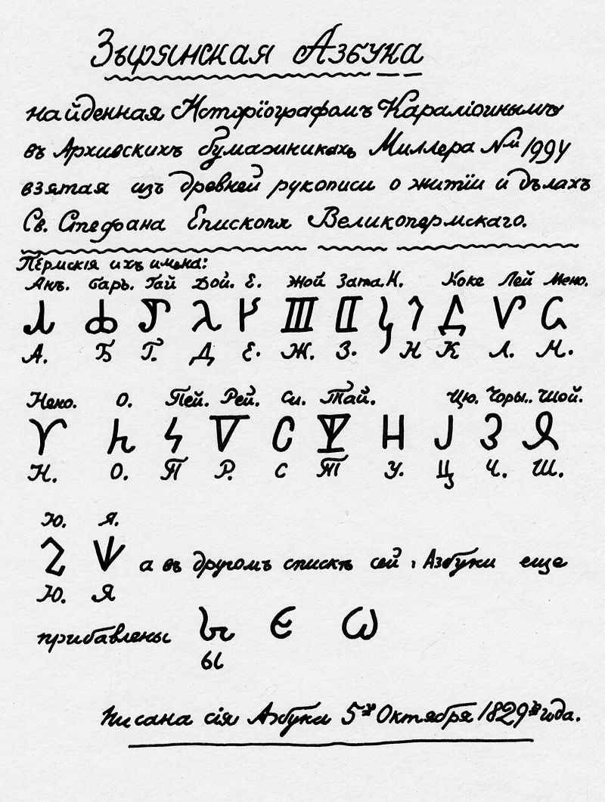
And though they most probably lie about Stepan being the author
when they say. The alphabet was introduced by a
Russian missionary, Stepan Khrap, also known as Saint Stephen
of Perm (Степан Храп, св. Стефан Пермский) in 1372. The name
Abur is derived from the names of the first two characters: An
and Bur. The alphabet derived from Cyrillic and Greek, and
Komi "Tamga" signs, the latter being similar in the appearance
to runes or siglas poveiras, because they were created by
incisions, rather than by usual writing. The inclusion of the
latter aided the alphabet in greater acceptance among the
medieval Permic speakers of the time. They mention
Tamga signs, and russian version of the article tells of
древнепермских рунических символов (пасов).
That latter link tells where I read about that arabic
traveller, witnessing writing systems in Northern Parma:
Пасы и шыпасы
Установить точную дату возникновения коми
письменности невозможно. Но то, что она возникла задолго до X
века, подверждают «Книги Ахмеда Ибн-Фадлана о его путешествии
на Волгу в 921-922 годах». Арабский путешественник и секретарь
посольства Багдадского халифа пишет о переписке царя Волжской
Булгарии с предками народа коми, называя их вису.
У предков коми существовал не один, а два вида
письменности. Первое — так называемое практическое письмо
пасы. Ими зыряне помечали свои вещи, охотничьи угодья,
составляли календари. Подобные знаки существовали у всех
финно-угорских и самодийских народов. Почти не меняясь, пасы
дошли до наших дней на прялках, вышитых и вязаных узорах. Да и
по своему прямому назначению эту письменность использовали
довольно долго. «В домашнем быту их, особенно между
безграмотными, до сих пор существует обыкновение вести
особенного рода счет житейским расходам на тонких
четырехугольных планочках, на которых вырезывают прямолинейные
и угловатые значки, им только ведомые, и читают по ним, как по
книге; например, случится записать, что такой-то чиновник брал
за прогоны столько-то лошадей, такой-то столько-то без
прогонов и пр., — пишет Михаил Михайлов в очерке 1850 года про
Усть-Вымь. — Зырянин отмечает на деревянной планочке значки,
по окончании года является за расчетом к подрядчику, без
ошибки разбирает свои иероглифы, называет должности, имена и
фамилии лиц, бравших у него лошадей, и на проверку выходит,
что все сказанное им согласно с книгою содержателя станции.
Этими же значками обозначает он, например, чем замечателен был
прошлый год в хозяйственном отношении, в каких местах ловилась
белка, — вообще, каково шли промыслы, когда началась весна,
когда начали пахать, каков был урожай хлеба, какие цены были
на туземный товар и прочее, и прочее. По-зырянски такая
планочка, исчерченная разнообразными значками, называется
«пас». Еще в 1928 году в журнале «Коми му» краевед Дмитрий
Борисов отмечал, что «пасы и в настоящее время в глухих
деревнях, а также среди охотников играют далеко не последнюю
роль».
Но параллельно существовала и вторая
письменность — хорошо развитое буквенное письмо,
заимствованное у южных соседей. Даже слово «буква» по-коми не
«пас», а «шыпас» (то есть пас, обозначающий звук «шы»). Только
на основе общей письменности могли свободно переписываться с
булгарским царем предки коми народа.
О различии двух видов письменности в XIX веке
писал Георгий Лыткин: «Зырянские пасы никогда не имели
значения букв, ими нельзя передать того, что передавали
египетские иероглифы. Между пасами и стефановскими буквами
нельзя делать никаких сближений».
Откуда есть пошла коми письменность?
А пошла она из Ирана. Много веков назад
иранские купцы, как и «лица кавказской национальности»
сегодня, нисколько не смущаясь расстояниями, вели на север
свои караваны с серебром, закупая и вывозя на юг «мягкое
золото» — закамские меха. Везли через Хазарию и Булгарию свои
товары, а с ними — и свои слова, вошедшие в коми язык: «зарни»
(«золото»), «амысь» («плуг»), «нянь» («хлеб»), «\ксы»
(«господин»), «пурт» («нож»), «сур» («пиво») и т.д. Одним из
иранских слов, прижившихся в коми языке, стало «неб\г» -
«книга». В книгах и документах, попадавших на север, были
буквы, которые стали основой первой коми письменности. Часто
на север попадали также иранские сасанидские монеты и
серебряные блюда и чаши, покрытые «неизвестными
среднеазийскими письменами», — еще один источник новых букв.
«Территория между Камой, Вычегдой и Печорой,
занятая коми, с давних пор находилась в орбите оживленной
торговли Запада с Востоком. Древняя Пермия была насквозь
пронизана нитями торговли, связывающей вычегодские дебри с
отдаленнейшими концами Европы и Азии. Сюда проникали изделия
Ирана, монеты Мавераннегра и Британии, серебряные блюда из
Греции, чаши из Киликии. Здесь и сейчас нередки находки монет,
серебряных и золотых вещей восточного и средиземноморского
происхождения», — пишет в «Очерках истории народа коми-зырян»
Николай Ульянов.
Возможность существования в древней Перми
письменности иранского происхождения допускает ряд ученых, в
том числе такие известные лингвисты, как Гюнтер Стипа и Адольф
Туркин. А.Туркин считал, что подобная письменность
существовала и в Булгарии, но пропала после принятия этой
страной ислама. Тогда все булгарские книги, которые не были
написаны на арабском языке, были уничтожены. Финский лингвист
Гюнтер Стипа в начале 60-х годов прошлого века опубликовал две
статьи о древнем коми языке. Он искал корни древней коми
письменности в иранском, арамейском, старогрузинском и
староармянском алфавитах. Г.Стипа пишет, что не только форму
букв, но и названия древнекоми звуков зыряне позаимствовали у
какого-то северно-иранского алфавита, ставшего также основой
азбуки многих кавказских народов.
here's the link to the whole article, to the whole magazine
actually: http://www.komi.com/mc/arhiv/new001.htm
(mirror)
But here's an english article we both should read: https://en.wikipedia.org/wiki/Tamga
(mirror)
(I
probably didn't have to give mirror for wiki, but I think I
want to see this as standart approach)
And if you think that there's no way Parma was that huge that
it spread from the modern Perm to where Normans live, and here's
a map,
Here's another map of Pecheneg Khanates and
neighboring territories, c.1015, which will tell you that sure
they did:
Though it stills needs to be discovered further
(though it probably is, in academic literature and on) because
here's a map marking both Barmia & Permia. Though this map
seems not exactly precise, if you try to find Volgda &
Voronezh.
Komi, Permiacs, Зыряны, whom germans name
Syrjanisch which made me surprised "what does Syria have to do
with them?" so many names could reflect many relative nations,
the territory also tells it's the case. I see several letters
of Old Permic Alphabet, too bad the collectors of those
пас'ses didn't collect their meaning? Or they could have it, I
should dig a little deeper in this direction to find out. And
about Syria, Finno-Ugric nations have other interesting
similarity of this term to Phoenicia & Ugarit. If these
northern and southern nations are related somehow or their
cultures have similarities or just one named after another to
steal its identity and developments, to rememe the historic
terms, this is some conspiracy hypothesis, just a thought,
& unfriendly.
But let's look at those tamga signs (russian word for customs
is tamozhna and it comes from tamga, and I wonder if tamga are
the same two syllables as in custom (whose
dome?) first I brought here whole the collection, but
let's stick to the subject, only komi tamga: but these two words
together didn't bring me any komi tamga. Searching in russian
охотничьи пасы brought me directly to Komi signs:
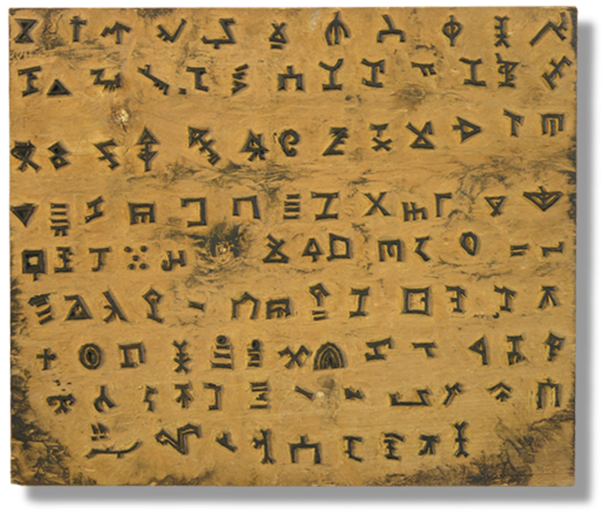Доска содержит 111
пас-знаков (родовых знаков), которыми пользовались жители с.
Помоздино, обозначая свои охотничьи угодья, предметы быта и
пр. Эти знаки были зафиксированы Вениамином Тимофеевичем
Чисталевым, в то время учителем Помоздинской школы, ставшим
впоследствии писателем, членом Общества изучения Коми края.
Оттиск с доски был опубликован А.С. Сидоровым в статье
«Зырянские метки собственности – пасы», вышедшей на немецком
языке в 1932 г. в журнале Финно-угорского общества
(Финляндия). Это была одна из первых
научных публикаций о феномене
родовых знаков коми-зырян.
Слово «пас» обозначает «знак», «тамга»,
«клеймо». Пасы использовались как обереги и в качестве знака
родовой собственности. Они ставились на предметах быта,
например, на прялках, на сельскохозяйственном и охотничьем
инвентаре, на рыболовецких снастях. Отмечали пасами и границы
лесных угодий.
Пасы послужили основой для формирования коми
орнамента. Древние зырянские знаки собственности легли в
основу древнепермской азбуки — АНБУР, составленной Стефаном
Пермским в 1372 г.
С распространением грамотности пасы были
вытеснены инициалами и личными подписями, но в повседневном
быту используются и до настоящего времени. Наиболее ярко эта
традиция выражена на территории современных Корткеросского,
Усть-Куломского, Удорского, Ижемского районов Республики Коми.
> составленной Стефаном Пермским в 1372 г.
it means combined by Stephan, arranged. The signs existed
before he only put them in christian order. I wonder what their
other order could be, could there be an order? 111 could be
syllabary (21 consonants and 5 vowels) – so syllabaries preceded
alphabet? they're more bulky, none would want to reform it from
alphabet to syllables. But syllables derive from hieroglyphs.
Egyptian evolved from Chinese, because chinese writings don't
have phonetic part. Phonetic transliteration is a step towards
alphabetic writing system, and it appeared in Egypt. And
egyptians used syllables, even more bulky syllables than
abudigas have, ankh as a syllable. or is it hieroglyph? But this
hieroglyph doesn't need phonetic part, so it's closer to
Chinese, but when I consulted historic sources, I see that
official science has it the other way around: Egyptian
hieroglyphs existed at least centuries before Chinese were
concieved: official version (or the main myth) is that chinese
hieroglyphs were invented by Cangjie, probably that's why
chinese hieroglyphs are named Kanji in Japanese. And this clerk
lived c. 2650 BCE when Egyptian hieroglyphs are registered on
this artefact dated back to 31st century BC and it does have
egyptian hieroglyphs, and the ones which later were used for
denoting syllables phonetically. It doesn't meant they're in
this function here, but probably yep.
But once again I can ignore official misconceptions due to what
structure development indicates, because I just found that
chinese tradition is more ancient than egyptian, because in
egypt symbols on Gerzean pottery from c. 4000 BC didn't have
much to do with hieroglyphs, at least among what I saw, and in
china there were found Jiahu symbols dated to 6600–6200 BCE
which correspond chinese hieroglyphs by their form,
yet of the final 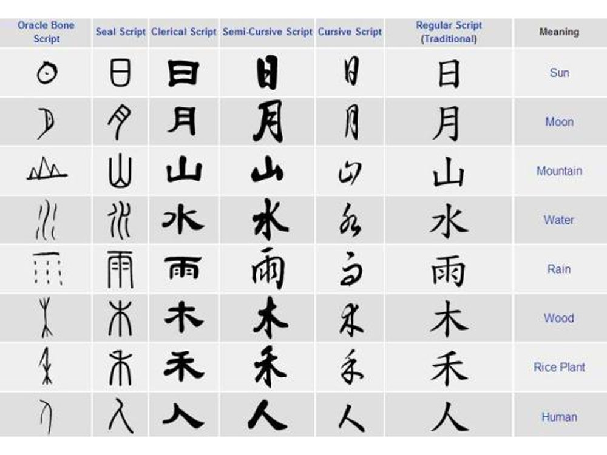sign contradicts the
theory of the characters' evolution shown on the left here.
That famous oracle bone probably was just using a similar &
related, but different writing system. But it's some other
oracle bone.
Or Jiahu symbols could be a forgery, of course, we have all the
reasons not to trust those commies.
In 2003, tortoise shells were found in 24
Neolithic graves excavated at Jiahu, Henan province, northern
China, with radiocarbon dates from the 7th millennium BCE.
According to some archaeologists, the symbols carved on the
shells had similarities to the late 2nd millennium BCE oracle
bone script.[4] Others have dismissed this claim as
insufficiently substantiated, claiming that simple geometric
designs such as those found on the Jiahu shells cannot be
linked to early writing.[5]

Jiahu (Chinese: 賈湖; pinyin: Jiǎhú) was the site
of a Neolithic settlement based in the
central plain of ancient China, near the Yellow River. It is
located between the floodplains of the Ni River to the north,
and the Sha River to the south, 22 km (14 mi) north of the
modern city of Wuyang, Henan Province.[1] Most archaeologists
consider the site to be one of the earliest examples of the
Peiligang culture. Settled around 7000 BC, the site was later
flooded and abandoned around 5700 BC. The settlement was
surrounded by a moat and covered a relatively large area of
55,000 square meters (5.5 hectare). At one time, it was "a
complex, highly organized Chinese Neolithic society,"[1] home
to at least 250 people and
perhaps as many as 800.

The important discoveries of the Jiahu
archaeological site include the Jiahu symbols, one of the
world's earliest examples in the history of writing, carved
into tortoise shells and bones; the thirty-three Jiahu flutes
carved from the wing bones of cranes, believed to be among the
oldest playable musical instruments in the world; and evidence
of wine fermented from rice, honey and hawthorn leaves.
But if that eye on that oracle bone (and other symbol, let's
trust they're on that bone as well) is really from 7th millenium
BC, then chinese writing system was not invented by Cangjie.
Kanji are not from Cangjie, who would believe it.
Cangjie has probably reformed writing system
existing before him, just as Bopomofo was based on Zhang
Binglin's shorthand. And what that shorthand is based upon? who
knows
Another group of early symbols, which many
have compared to Chinese characters, are the Banpo symbols
from sites like Banpo, just east of Xi'an in Shaanxi dating
from the 5th millennium BCE,[e]
And nearby, at Jiangzhai, in Lintong District,
from the early 4th millennium BCE.
But those're probably roots of some other, later, probably even
syllabary writing system, because it doesn't look like chinese,
but some of them look like symbols from Dispilio tablet:
which is carbon 14-dated to
5202 (± 123) BC.[1]
But It was discovered in 1993 which
means after nuclear test, which makes radiocarbon chronometry
somewhat less reliable.
Here's what I'm talking about:
Before Present (BP) years is a time scale used mainly in geology
and other scientific disciplines to specify when
events occurred in the past. Because the "present" time
changes, standard practice is to use 1 January 1950 as the
commencement date of the age scale, reflecting the origin of
practical radiocarbon dating in the
1950s. The abbreviation "BP" has alternatively been
interpreted as "Before Physics";[1]
that is, before nuclear weapons testing
artificially altered the proportion of the carbon isotopes in the
atmosphere, making dating after that time likely to be
unreliable.[2][3]
But there's something else we cannot trust and it is pictures
from the internet:
The image above reproduces symbols from another picture, and not
all of them are from dispilio tablet:

Dispilio is the only
excavated Neolithic lakeside settlement in Greece.
Archaeological research provided evidence that the site was
continuously used from the Early Neolithic (~6000 BC) to the
Late Chalcolithic period (~1200 BC, Mycenaean period).
During several archaeological campaigns, a portion of the
settlement has been excavated that enabled a sufficient
understanding of the architectural layout of homes, the
building materials, and the organization of space, while the
finds (fragments of pottery, stone and bone tools,
anthropomorphic and zoomorphic clay figurines, miniature
representations of objects also on clay, animal and fish
bones, charred cereal grains, and other fruits) provided
information on the everyday lives of the Neolithic
inhabitants. A series of charcoal and wood samples,
originating mostly from the Middle and Late Neolithic layers
of the site, were radiocarbon dated and their dates range
from ~5470 to 4850 BC. The most unexpected of the finds, a
wooden tablet from the lake bearing engraved symbols, was
14C dated to 5260 ± 40 BC. In addition, clay tablets and
pottery vessels engraved with similar symbols were also
unearthed from layers dated to the same period. If this
proves to be a primary source of written communication, the
history of writing should be reconsidered and Neolithic
societies should not be considered “societies without
writing.”
I spoke about linear A & linear B, but I
haven't shown them to you. Since I speak about all the writing
systems, whether I know about them or not, and they just mention
linearA in the previous image, and I met several rare signs
similar to chinese ones, I will begin with linearB, because it's
decyphered:

Linear B was used by
ancient greeks before they began using alphabet. But here
comes the wild part: before those cultures lie Greek Dark
Ages, where they became illiterate for a couple of centuries,
of which most of us have no idea. It seems there were several
times when civilization collapsed. This time, so they say, it
was caused by invention of iron, which made it possible for a
low class citizens to afford arms. It seems they simply
slaughtered everybody who could read it.
Before linear B was linear A, yet undeciphered,
but using similar symbols linear B used, I don't know this field
at all, you research it yourself if you care.
I just put these scripts together:
On the left is linear A, more ancient, on the
right is linear B, a less ancient one:

Those signs of trees or branches they've shown on "samples of
Linear A signs;" I don't see them neither on these, nor or the
following examples of Linear A.

But I cannot see those spikelets,
So it seems to me that other image, the figure 6
which numbered columns of signs into A B & C was false,
but it still doesn't make the previous one true. Let's see on that
log closer:
I still cannot say much about this, let's
just be aware of the fact that such an artifact exists, dated to
over 7000 years ago, but it was dated AP (after present) — but
this term is unknown, wiki only knows Before Present (before 1950)
This dispilio tablet is sometimes referred to Vinca writings,
I guess it's time to look at those other Vinca writings:
The Vinča symbols, sometimes called
the Danube script, Vinča signs, Vinča script, Vinča–Turdaș
script, Old European script, etc., are a set of symbols found on
Neolithic era (6th to 5th millennia BC) artifacts from the Vinča
culture of Central Europe and Southeastern
Europe.[1]
Most historians agree that those symbols are not a writing
system, but some kind of private symbols or ornaments. Minority
of historians claim that this is the earliest known writing
system that have influenced other early writing systems.[2]
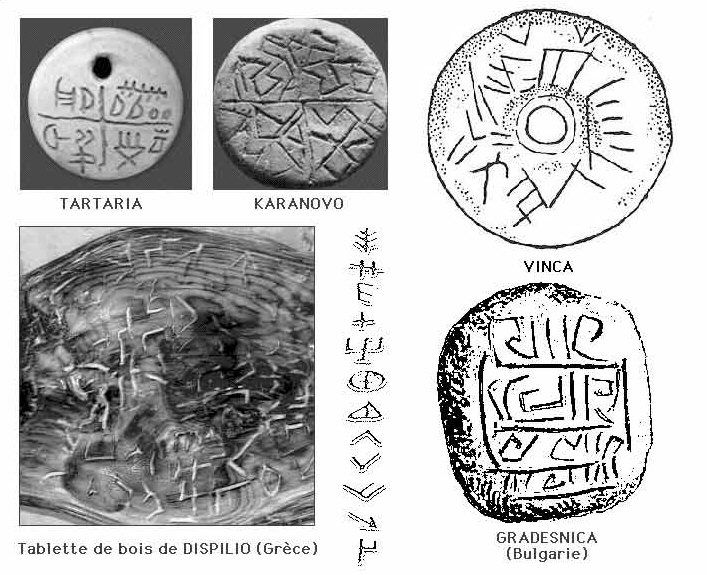
Those historians could be speaking of different
types of Vinca drawings. The one named Tartaria is definitely a
writing.
The others quite could be the ornaments.
Now, here's the spikelets and bodies of
animals, and it means that's the writings I wanted to compare to
that misterious chinese writing system:
Пиктограммы на гончарных изделиях из Баньпо
One hundred and thirteen pieces of carved
signs were unearthed, dividing into 22 kinds. The carved signs
mainly used for keeping records and they carried the nature of
written language. They are embryonic form of Chinese
character.Archaeologists believe that early writings did exist
in Banpo. Engraved symbols could be classified into 27 categories. They were believed to be the earliest mode
of writing, even earlier than oracles of Shang Dynasty.
I haven't found where the left collection came from, but the signs
on smithereens look suspiciously european.
And this bowl with supposedly linear A look suspiciously chinese:
or maybe someone chinese made the copy
where is the original artefact I wonder,
why do they always feed me
these
academic
graphs..
I couldn't even find the
artifact with this writing.
and what sign about the
ऊ
sign I don't see on other linearA's but 3 times on this one?
ah, no, I can see something similar on the
other two..
I have a strong intention to edid all the
writing system I don't know much about out of this book, but I
decided to leave them. First, because I'm going to edit this book
as you read it, so if you want a better version return in a couple
of years. Second, because they said "whoever evades risk of being
rediculous, doesn't have a chance of becoming great" who said? I
didn't manage to find this quote; was it inspirobot?
Suddenly I found that jar. But why almost
nobody else in the field uses this image!
Before linear A that region used cretan hieroglyphs, undeciphered:
here's another example of something chinese,
I didn't research it, so just a copy-paste:
As the Banpo symbols were discovered fairly
early (1954–57)[12] and are relatively numerous (with 22
different symbols on 113 sherds),[13] these have been the
focus of the most attention.
The
Chengziya site in Longshan, Shandong has produced fragments of inscribed
bones presumably used to
divine the future, dating to 2500–1900 BC,
and
symbols on pottery vessels from Dinggong are thought by some
scholars to be an early form of writing. Again, this is
controversial. Symbols of a similar nature have also been
found on pottery shards from the Liangzhu culture of the lower
Yangtze valley.
And another one:
The Dongba, Tomba or Tompa symbols are a system
of pictographic glyphs used by the ²dto¹mba (Bon priests) of
the Naxi people in southern China. In the Naxi language it is
called ²ss ³dgyu 'wood records' or ²lv ³dgyu 'stone
records'.[1] "They were developed in approximately the seventh
century."[2] The glyphs may be used as rebuses for abstract
words which do not have glyphs. Dongba is largely a mnemonic
system, and cannot by itself represent the Naxi language;
different authors may use the same glyphs with different
meanings, and it may be supplemented with the geba syllabary
for clarification.
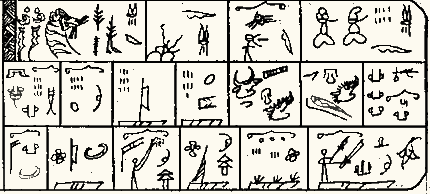
Sometimes Dongba is accompanied with Geba syllabary.
Geba is a syllabic script for the Naxi
language. It is called ¹Ggo¹baw in Naxi, adapted as Geba, 哥巴,
in Chinese. Some glyphs resemble the Yi script, and some
appear to be adaptations of Chinese characters. Geba is only
used to transcribe mantras, and there are few texts, though it
is sometimes used to annotate dongba pictographs.
And I was thinking that understanding chinese would be
difficult without AI on my side, now imagine getting all of
these, so if I figure some interesting stuff out, imagine what I
will see with all human civilization uploaded in my extra
cortex.

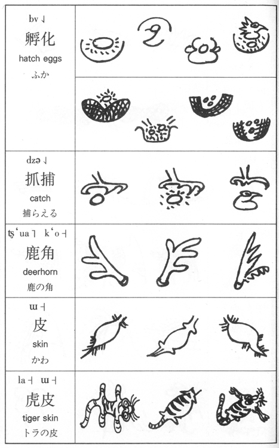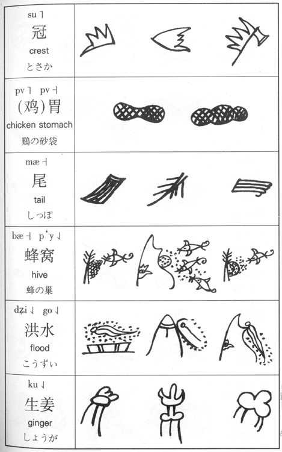
But this field reaches another one:
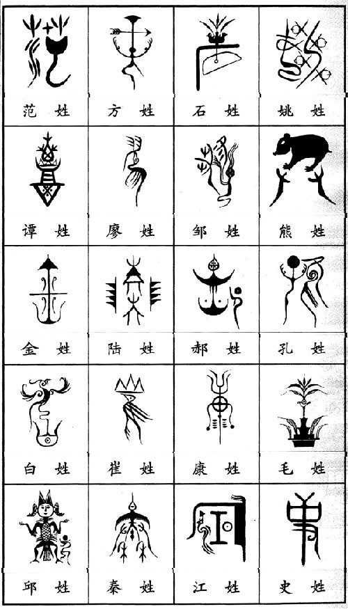
Where I found it it was told:
百家姓图腾
所谓图腾，是产生在母氏族社会时期。当时的人们无力对抗自然的严酷考验，而把某种动物、植物或非生物等当作自己的亲属、祖先或保
护神，相信他们有一种超自然力，会保护自己，还可以获得他们的力量与技能。因此，把图腾当作崇拜的对象，并以图腾名称作为族群名
称，用同一图腾来统一族群的成员。为了子孙与其他族群区隔，便以图腾做为家族的微章，甚至以图腾为姓氏，并把图腾绘制、调刻在建
筑或器物上，做为辨识族群的记号。
Which google translated as:
Hundred family name totems.
The so-called totem is produced during the period of the mother
clan society. People at that time could not cope with the harsh
test of nature, and regarded certain animals, plants or
non-livings as their relatives, ancestors or protectors. I
believe that they have a supernatural power that will protect
themselves and gain their strength and skill. Therefore, the
totem is regarded as the object of worship, and the name of the
totem is used as the name of the group, and the same totem is
used to unify the members of the group. In order to distinguish
the descendants from other ethnic groups, the totem is used as
the family's micro-chapter, and even the totem is used as the
surname, and the totem is drawn and engraved on the building or
artifact as a symbol for identifying the ethnic group.
This field relates to what they say about Komi writings. Tamga
signs and stuff. Doesn't this word remind Dongba (aka Tomba) to
you? It probably does. But is it the same concept, the same
word? Probably not, but how can we reject a posibility of this
completely, I don't think we should.
And what is this? I think it shows that chinese characters and
these geba or tomga could if not originate from one another,
whether influence each other or be influenced by some other
cultural phenomena.
These Geba & Tomba are really hard to find. I have some
bilingua with chinese. I still cannot find the dictionary of any
of them in image, I will search for dictionary not in image, but
in other formats.. but instead I just googled for it in chinese,
and when I found few images, I reverse-searched to find some
more. I recommend you reverse-search images which caught your
interest. But seriously, how dare I be using other people's
images and in such plethora!? Internets changed the world. It
will be silly and humiliating to stick to old rules, I feel
obliged to find the new rules, I belive everybody will profit
from this new attitude and manner of behaviour: I get free
images and they get free promotion. Was it so hard to figure it
out before they destroyed their own music industry trying to
fight with pirates! And they did so on the very apex of music
industry! They didn't know of dematerialization as business
model. Probably it wasn't invented then yet.
Me, I'm just collecting images I wanna research later, maybe
next time I update I will be knowing something new about them.
Now I only can predict that they will find writing system of New
Zealand when they discover that wall of the ancients and many
more settlements. I've travelled all the world and I found some
basic elements (three vowels, three mothers, three dice, etc)
but I haven't seen the basic structures laying in plain sight.
Or will I discover it from what I already know and I will be
ashamed of myself not seeing it earlier so I don't blame humans
unable to see what I've already discovered. If you are enjoying
this book, you're a special kind of people, the true one, one of
those who justify existence of the specie. Not empowered animal,
but actually the maker of another level to this life. You take
large tasks 'cause you'll probably succeed. Look what I've taken
and I deliver, another projects of mine also move on. Get
motivated, I know that only few percents of people understand
what I'm talking of, few percents of the speaking the language,
and maybe 1% gets it right.
Or maybe in this comics of Naxi I will meet the essence of
chinese characters and the very mythical labial and lingual,
because I expect much of chinesse: they conservated words on the
most ancient level, when each word was a syllable (each chinese
hieroglyph, even when dyphthong, is just one syllable) egyptian
hieroglyphs don't deliver like this. And egyptian hieroglyphs
have syllabic and alphabetic structures invented already,
chinese don't. And now I found Jiahu symbols looking like
chinese hieroglyphics in China. Of course
theoretically they could be fake (even though they were
accepted but no matter how hated, still respected scientific
community (they can ignore the true thing, I still doubt they
would embrace a forgery) So I expect much more
artefacts from the chinese region and NZ.
Back to normal languages, greek ἕνωσις has ε sounding pretty
much like arabic ه (arabic ه stands at the position of ε) – my
teacher of Greek told me that those '` at the top of ε – at
least one of them is Ͱ, a half of H, even though H is taught to
be vowel. But here's what I found:
>
An archaic inscription from Thera,
displaying H
both in consonantal function (line 2: "ΚΗ" = χ in "Ἀρχαγέτας")
and as a vowel (line 3: "Πρόκλης")
And the following image shows that only Ionic dialect
considered H vowel, all the others considered it consonant, what
AEIOY structure dictates.
Okay, few words of greek dialects.
First of all what bugs me the most about it is san looking too
much like mu. Of course we have I & l looking even more
alike, but I still don't think it's an accident, double l is
short I in Mallorca and papillon. So what's the reason between M
& S being so much similar. I'm pretty
sure I recently saw somewhere else M being like S, but I
forgot of archaic greek to compare.
The other thing is some iotas looking like some sigmas. It's s
again, and I reflects M in k-symmetry. Though I'm not sure it
relates.
San and Mu in phoenician also similar like mirror reflections.
X is ks, as in latin only in Euboea whatever it is, could be
close to Rome, but map on wiki gives me the opposite:
That Evia is really weird, they're the only ones who use for Kh
exactly the two signs their neighbours use for Ps.
Then again how can we trust these tables? I used to ignore them
completely trusting only the artefacts. But I've drown quite a
several of them myself. I say the true one match into the
structures, the fake ones will keep on having unanswered
questions until they're ignored and structure is seen without
them, when they will be put into a curiousities chests. I doubt
I can trust these tables completely, because look at sampi — I
was taught that this letter was not used as s, but it was there
for counting, then why others don't have them, if to count with
alphabet you have to have 27 letters, and where's Ionic digamma,
if it was there when sampi was there. Then there'd be 27, and
what about others? did they use some numbering system alike to
Roman & Etruscan? Give us the etruscan numbers:
Magyar runes, of course, how could I forget.
I realize here I don't have much to tell about hungarian runes.
They look relative to normanic runes more than to greek even
though their first letter A reminds mediteranean A almost
completely, being in between of A & a. I was looking
for forms of letter a without that upper swash, and found a
cursive form where a looks like g or q. I remeber O reflecting G
and e reflecting q in k-symmetry. I will research hungarian
hunes and will return to this fascinatingly interesting topic.
But for now let me count all the similarities I see: first I
though ly is an unique letter, but I found similar sign for also
lingual дж or ж in perm alphabet. But wow! Hungarian runes also
have even more similar to permic ж both graphically and
phonetically: see z & dz on the image below. and only z on
other images around.
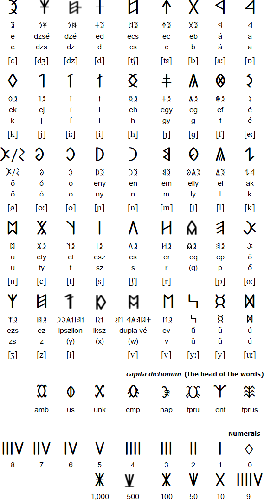
And here I compare hungarian
runes
to
runes of more northern Europe:
some more on hungarian (magyar) runes:
that's
it on them for now
Here's an egyptian document, not only promoting cannabis among
other medicinal plants, but also using numerals to numerate
pages:
It is Ebers papyrus and I'm so tired of hearing that egyptian
language is dead, because it's never died no matter how hard
various peoples tried to kill it, it still exists known as
koptic language (kemet kopt egypt are all the very same word:
𓏘𓅓𓏏)
𓏘 is an interesting letter, especially because runic ᚲ stands
for the same concept, an anГLe. and is also Г.
More about egyptian numerals:
Under this line I will keep some really raw hypotheses, they're
even more probably wrong, or they just stand alone, let them
hang along.
SPQR — just as AEIOU has nationalistic backronym, this one
could also be taken wrong. It could be an appept to rearrange
the fourth line (just as they did with the third in prehistoric
period and sometimes with the second one in historic) or it
tells that s is an invariant of o: σ (minuscle s in modern greek
and there's something interesting about minuscle: they teach
that it appeared only in medieval times, but them they usually
omit mentioning roman cursive — and it contains some ancient
correlations: bd pq or did it appear later by our
rationalization of the script. Could we be conciously (then
conspiring) or unconciously (then neurophysiologists must
research it) crystallizing structures in alphabets?: latin
alphabet has the velar column, and not any other does too.
neither phoenician nor ugaritic have velar column, and though
ugaritic is more ancient than phoenician, and though it follows
those structures not worse than phoenician — or should I say
hebrew? let's speak in modern terms, they use the same alphabet
only graphemes are different, but we don't look at forms of
letters now, we speak of the bigger structure. Why do I say
"we"? They teach us to use we instead of I in scientific works.
Also Voltaire said: "You must have Devil in you to succeed in
any of arts" )
What writing system I omitted? Cunieform has
many variants, and I only looked at the alphabetic one. But as
soon it's sometimes not simple to see straight border between
syllabaries (abugidas included, I'm not going to use this word any more, I
don't find it pretty, we have to teach africans harmony,
after all they taught us so much of rhythm. Or will they
have different feel of harmony, as their tastes in other
sings differ from ours) and alphabets.
Especially because it comes through transitionary form of
Iberian writings. But Iberian are not lonely in their combining
of alphabet & syllabary. They also
combine syllables in 3 groups modern european consonants are
combined (labial, velar, coronal — blue, yolden, green, as I
mark them sometimes) aEgyptian is also like this, and
it adds hieroglyphs too, being universal form of writing
systems, the center of all the science as
it used to be. destroyed by savages of all kinds. But
egyptian syllables are not seen as syllabary, they were just
random signs for random sound clasters, but all are in one
syllable. You know who else have signs for random sound clasters
and all are one syllable? Chinese do!
egyptian 𓀀 looks pretty much like chinese 我
in reverse (which also makes sense, because egyptian letters
look at the beginning of the text, and chinese wrote in
columns beginning at the right side of the page. And these
two hieroglyphs stand for the same thing (I, me. chinese wo as singlular form of we? one of
forms of the same word is literally 𓅱𓀀 [w] or [wj] as they say)
But first let's research
cunieform, I saw some two similar forms of it, they were
similar to iberian syllabaries: on the left is akkadian,
on the right is hittite:
I have no idea how did they
figured out ce from ci, I suppose different authors
researched different writing systems and transliterated
them differently, or was there any scientific underlying
udner it, they never tell. I took it ancientscripts.com,
it's very nice of them to combine all the writings
together, but they don't give their sources.
hittite
writing system is told to be borrowed from akkadian, and
both had more signs. It's believed that hittite borrowed
375 cuneiform signs and here we only see 83, the other
were syllables and ideograms. Very much like in
egyptian, thus these writing systems are not only
geographically neighbouring,
and I must notice that this
research becomes very cuneilinguistic so I know now
what those strokes symbolize, each black comma is
commer of flesh, what does it tell of what 4 witches
can do if 𒀭 stands for goddess. Or more commonly
deity, but goddess first, as I said before, it began
with mothers, whom we all deify, and neither
chrystianity nor other patriarchal traditions change
this natural admiration. Christianity actually contains a
riddle about Mother: first there was a word and god
had that word, and god was that word. But now
I searched for it, and I see not Anna, but some male
deity, Anu or An, and instead of Anna I can only see
Antu an Inanna. I definitely bite more than I can chew
here, so please ignore it or make your own research if
you care. 𒀯 stands for a star, so
𒀭
could be a general term for divine (don't mistake with 𒄬
standing for "divide" and I'm not making this up, but most
likely it's a coincidence) and you see that sign for "an"
in the tables above, it's simplified
𒀭 and the following image speaks of
An and tells that Mother Earth and Father Sky:
It's been over three years since
I set the question of the order of Egyptian hieroglyphs
egyptologists used in the XIX century. And I still have
not a clue, but since the lineal scheme is known among
occultists, so I think the egyptian canon is hidden in
some masonic books, since masons used egyptian symbolism,
I suppose many of egyptologists were masons themselves.
I knew this book will be full of
secrets, no wonder some of those secrets are still secret
even to me.
Have I noticed that even relates
to eve and odd relates to adam, since even numbers are
considered to be female, while odd numbers are male ones?
It won't hurt to repeat this marvelous conicidence.
Have I noticed that evil relates to
eve and devil relates to deva? 666 is even, but 15 is
not. Is it because these numbers are of later origin?
Is it because there were 15 runes in Bureus's book? Is
it why there were 15 republics in the land of the
pentagram fanciers?
Egyptians
had over a 1000 signs. And here they are, the way
they're given at wiki:
| Uniliteral signs |
| Sign |
Traditional transliteration |
Phonetic values
per Allen (2000) |
|
|
𓄿 |
--- |
Egyptian vulture |
ꜣ (3) |
a |
Called alef or hamza,
a glottal stop |
/l/ or /ɾ/ |
Silent, /j/,
and /ʔ/ |
|
|
𓇋 |
Green |
Flowering reed |
ı͗ |
i/a |
Called yod |
an initial or final vowel;
sometimes /j/ |
|
|
𓇌 |
Green |
Pair of reeds |
y |
y |
Called yod
or y |
No record |
/j/ |
|
|
𓏭 |
Blue |
Pair of strokes
or river (?) |
|
|
𓂝 |
Red |
Forearm |
ꜥ (ʾ) |
long a |
Called ayin |
?[13] |
/ʕ/;
/d/ perhaps retained
in
some words and dialects |
|
or
|
𓅱 𓏲 |
Yellow |
quail
chick or its
hieratic abbreviation |
w |
w/u |
Called waw
|
/w/
~ /u/ |
|
|
𓃀 |
Red |
Lower leg |
b |
b |
|
/b/
~ /β/ |
|
|
𓊪 |
Green |
Reed mat or stool |
p |
p |
|
aspirated
/pʰ/ |
|
|
𓆑 |
Yellow |
horned
viper |
f |
f |
|
/f/ |
|
|
𓅓 |
Yellow |
owl |
m |
m |
|
/m/ |
|
|
𓈖 |
Blue |
ripple of water |
n |
n |
|
/n/ |
/n/,
sometimes /l/ |
|
|
𓂋 |
Red |
Human mouth |
r |
r |
|
/l/ or /ɾ/ |
/ɾ/,
sometimes /l/
(always /l/ in some
dialects) |
|
|
𓉔 |
Blue |
reed
shelter |
h |
h |
|
/h/ |
|
|
𓎛 |
Green |
twisted
wick |
ḥ |
h |
An emphatic h,
a voiceless
pharyngeal fricative |
/ħ/ |
|
|
𓐍 |
Green |
Sieve or placenta |
ḫ |
kh |
a voiceless velar
fricative |
/x/ |
|
|
𓄡 |
--- |
Animal belly and tail |
ẖ |
kh |
A softer sound,
a voiceless palatal
fricative |
/ç/ |
|
|
𓋴 |
Red |
folded
cloth |
s |
s |
Old Egyptian sound
for
"door
bolt" is unknown,
but perhaps was z or th |
/s/ |
/s/ |
|
|
𓊃 |
Red |
door
bolt |
/z/ |
or
or
|
𓈙 𓈛 𓈜 |
Blue |
Garden pool |
š |
sh |
|
/ʃ/ |
|
|
𓈎 |
Blue |
Hill slope |
ḳ or q |
k |
An emphatic k,
a voiceless
uvular
plosive |
ejective /qʼ/ |
|
|
𓎡 |
Green |
Basket with handle |
k |
k |
|
aspirated
/kʰ/
in some words, palatalized /kʲ/ |
|
|
𓎼 |
Red |
jar
stand |
g |
g |
|
ejective /kʼ/ |
|
|
𓏏 |
Blue |
bread loaf |
t |
t |
|
aspirated /tʰ/ |
|
|
𓍿 |
Green |
tethering
rope or hobble |
ṯ or tj |
ch |
As in English church |
palatalized /tʲ/
or /t͡ʃ/ |
|
|
𓂧 |
Red |
hand |
d |
d |
|
ejective /tʼ/ |
|
|
𓆓 |
Yellow |
Cobra |
ḏ or dj |
j |
As in English judge |
ejective /tʲʼ/
or /t͡ʃʼ/ |
Gardiner[14]
lists several variations:
| Uniliteral signs |
| Sign |
Traditional transliteration |
Notes |
|
|
𓎤 |
Bag of linen |
g |
Appears in a few older words |
|
|
𓐝 |
Possibly a finger |
m |
Originally biliteral ı͗m |
|
|
𓋔 |
crown
of Lower Egypt (the Deshret) |
n |
Originally ideogram nt for 'crown of
Lower Egypt' |
|
|
𓍘 |
Pestle |
t |
Originally biliteral tı͗ |
| Egyptian Biliteral Hieroglyphs |
|
ꜣ |
ỉ |
ꜥ |
w |
b |
p |
m |
n |
r |
ḥ |
ḫ |
z |
s |
q |
k |
t |
ṯ |
d |
ḏ |
| ꜣ |
|
|
|
𓄫
ꜣw
F40 |
𓍋
ꜣb
U23 |
|
|
|
|
|
𓅜𓇇
ꜣḫ
G25 M15 |
|
𓊨𓄼
ꜣs
Q1 F51c |
|
|
|
|
|
|
| ỉ |
|
|
|
𓂻𓃛
ỉw
D54 E9 |
𓃙𓄣
ỉb
E8 F34 |
|
𓐛𓏶
ỉm
Aa13 Z11 |
𓀟𓆛𓏌𓏎
ỉn
A27 K1 W24 W25 |
𓀹𓁹
ỉr
A48 D4 |
𓌤
ỉḥ
T24 |
|
𓇩
ỉz
M40 |
|
|
𓀗
ỉk
A19 |
𓆊
ỉt
I3 |
𓎁
ỉṯ
V15 |
|
|
| ꜥ |
𓉻
ꜥꜣ
O29 |
|
|
|
𓄏
ꜥb
F16 |
|
|
|
|
𓌤
ꜥḥ
T24 |
|
|
|
𓅧
ꜥq
G35 |
|
|
|
|
𓆝𓎙𓎚
ꜥḏ
K3 V26 V27 |
| w |
𓍯
wꜣ
V4 |
|
𓌡
wꜥ
T21 |
|
|
𓄋
wp
F13 |
|
𓃹𓇬
wn
E34 M42 |
𓅨
wr
G36 |
|
|
|
𓄼𓊨𓊩
ws
F51c Q1 Q2 |
|
|
|
|
|
𓇅𓎗𓎘
wḏ
M13 V24 V25 |
| b |
𓅡𓎺𓎻
bꜣ
G29 W10 W10a |
|
|
|
|
|
|
|
|
𓄑
bḥ
F18 |
|
|
|
|
|
|
|
|
|
| p |
𓅮𓅯
pꜣ
G40 G41 |
|
|
|
|
|
|
|
𓉐
pr
O1 |
𓄖
pḥ
F22 |
|
|
|
|
|
|
|
𓂾
pd
D56 |
𓌒
pḏ
T9 |
| m |
𓌳
mꜣ
U1 |
𓂝𓂟𓈘𓏇
mỉ
D36 D38 N36 W19 |
|
𓈗
mw
N35a |
|
|
𓅔
mm
G18 |
𓌇𓏠
mn
T1 Y5 |
𓈘𓉕𓌸𓍋
mr
N36 O5 U6 U23 |
𓎔
mḥ
V22 |
|
|
𓄟
ms
F31 |
|
|
𓂸𓅐
mt
D52 G14 |
|
𓌃
md
S43 |
|
| n |
|
𓂜𓂢
nỉ
D35 D41 |
|
𓍇𓏌
nw
U19 W24 |
𓎟
nb
V30 |
|
𓉕𓌰𓌱
nm
O5 T34 T35 |
𓇒
nn
M22a |
𓆂
nr
H4 |
𓅘
nḥ
G21 |
|
|
𓄓
ns
F20 |
|
|
|
|
|
𓐩
nḏ
Aa27 |
| r |
|
|
|
𓃭
rw
E23 |
|
|
|
|
|
|
|
|
𓌘
rs
T13 |
|
|
|
|
|
|
| h |
|
|
|
|
𓍁
hb
U13 |
|
|
|
|
|
|
|
|
|
|
|
|
|
|
| ḥ |
𓇉
ḥꜣ
M16 |
|
|
𓄑
ḥw
F18 |
|
𓐑
ḥp
Aa5 |
𓈟𓍛
ḥm
N42 U36 |
𓆰𓌼𓎨
ḥn
M2 U8 V36 |
𓁷𓈐
ḥr
D2 N31 |
|
|
𓎿
ḥz
W14 |
|
|
|
|
|
|
𓌉𓌋
ḥḏ
T3 T4 |
| ḫ |
𓆩𓆼
ḫꜣ
L6 M12 |
|
𓈍
ḫꜥ
N28 |
𓂤
ḫw
D43 |
|
|
𓋉
ḫm
R22 |
|
|
|
|
|
|
|
|
𓆱
ḫt
M3 |
|
|
|
| ẖ |
𓆞
ẖꜣ
K4 |
|
|
|
|
|
|
𓂙𓄚
ẖn
D33 F26 |
𓌨
ẖr
T28 |
|
|
|
|
|
|
|
|
|
|
| z |
𓅭𓎂𓎃
zꜣ
G39 V16 V17 |
|
|
|
|
𓊗
zp
O50 |
|
|
|
|
|
|
|
|
|
|
|
|
|
| s |
𓐟𓐠
sꜣ
Aa17 Aa18 |
|
|
𓇓
sw
M23 |
|
|
|
𓌢
sn
T22 |
|
|
|
|
|
|
𓎝
sk
V29 |
𓄝𓊨
st
F29 Q1 |
𓋫
sṯ
S22 |
|
𓏴
sḏ
Z9 |
| š |
𓆆𓆷
šꜣ
H7 M8 |
|
|
𓆄
šw
H6 |
|
|
𓈝
šm
N40 |
𓍢𓍲
šn
V1 V7 |
|
|
|
|
𓍱
šs
V6 |
|
|
|
|
𓄞
šd
F30 |
|
| q |
|
|
|
|
|
|
|
𓐖
qn
Aa8 |
|
|
|
|
𓌟
qs
T19 |
|
|
|
|
𓐪
qd
Aa28 |
|
| k |
𓂓
kꜣ
D28 |
|
|
|
|
𓊶
kp
R5 |
𓆎
km
I6 |
|
|
|
|
|
|
|
|
|
|
|
|
| g |
|
|
|
|
𓅬
gb
G38 |
|
𓅠
gm
G28 |
|
|
|
|
|
𓐛𓐞
gs
Aa13 Aa16 |
|
|
|
|
|
|
| t |
𓇾𓇿𓍔
tꜣ
N16 N17 U30 |
𓍘
tỉ
U33 |
|
|
|
𓁶𓌐
tp
D1 T8 |
𓍃
tm
U15 |
|
𓆵
tr
M6 |
|
|
|
|
|
|
|
|
|
|
| ṯ |
𓅷
ṯꜣ
G47 |
|
|
|
|
|
|
|
|
|
|
|
|
|
|
|
|
|
|
| d |
|
𓂞𓏙
dỉ
D37 X8 |
|
|
|
|
|
|
|
|
|
|
|
|
|
|
|
|
|
| ḏ |
𓍑𓍒
ḏꜣ
U28 U29 |
𓏙
ḏỉ
X8 |
|
𓈋
ḏw
N26 |
𓅙
ḏb
G22 |
|
|
|
𓇥
ḏr
M36 |
|
|
|
|
|
|
|
|
𓊽
ḏd
R11 |
𓆕
ḏḏ
I11 |
The following is a list of Egyptian hieroglyphs with
triconsonantal phonetic value. see, they
even here use this "consonantal alphabet" false concept. I was
asked yesterday "why are they insisting on this idea if it's
wrong?" — I could only say "they don't even make real effort
to rationalize, they just repeat it as parrots". But only part
of modern linguistic ideas are wrong, this decyphering of
egyptian writing system could be actually accurate. At least
they figured out ugaritic alphabet right, according to the
fact that it's abecedary follows both axial and lineal
structures not worse that alphabets that are currently in use,
so you don't have to decypher them. Biliteral was not named
biconsonant after all, so there's still hope.
|
|
O28 |
U+1327A |
𓉺 |
iwn |
|
|
|
|
F44 |
U+1312F |
𓄯 |
isw, swt |
bone with meat |
isꜣ "reward"; iw' "thigh bone", iw
"heir, inheritance, ancestry". Also, tibia, swt. |
|
|
S39 |
U+132FF |
𓋿 |
ꜥwt |
|
|
|
|
Aa20 |
U+13422 |
𓐢 |
ꜥpr |
|
|
|
|
S34 |
U+132F9 |
𓋹 |
ꜥnḫ |
ankh symbol |
Tril. ꜥnḫ, ideogram for "life", "live" |
|
|
|
|
|
|
'h_' |
|
|
|
|
|
|
|
|
ꜥšꜣ |
|
|
|
|
|
|
|
|
wꜣẖ |
|
|
|
|
|
|
|
|
wꜣs |
|
|
|
|
|
|
|
|
wꜣḏ |
|
|
|
|
|
|
|
|
wꜥb |
|
|
|
|
|
|
|
|
wẖm |
|
|
|
|
|
|
|
|
wsr |
|
|
|
|
|
|
|
|
m3ꜥ |
|
|
|
|
|
|
|
|
nbw |
|
|
|
|
|
|
|
|
nfr |
|
|
|
|
|
|
|
|
nṯr |
|
|
|
|
|
|
|
|
rwḏ |
|
|
|
|
|
|
|
|
ẖqꜣ |
|
|
|
|
|
|
|
|
ẖtp |
|
|
|
|
|
|
|
|
ḫpr |
|
|
|
|
|
|
|
|
ḫnt |
|
|
|
|
|
|
|
|
ḫrp |
|
|
|
|
|
|
|
|
ḫrw |
|
|
|
|
|
|
|
|
ḫsf |
|
|
|
|
|
|
|
|
ḥnm |
|
|
|
|
|
|
|
|
sbꜣ |
|
|
|
|
|
|
|
|
spr |
|
|
|
|
|
|
|
|
zmꜣ |
|
|
|
|
|
|
|
|
snb |
|
|
|
|
|
|
|
|
snḏ |
|
|
|
|
|
|
|
|
sšm |
|
|
|
|
|
|
|
|
stp |
|
|
|
|
|
|
|
|
sḏm |
|
|
|
|
|
|
|
|
šps |
|
|
|
|
|
|
|
|
šmꜥ |
|
|
|
|
|
|
|
|
šms |
|
|
|
|
|
|
|
|
grg |
|
|
|
|
|
|
|
|
ḏbꜣ |
|
|
|
You may think it's not very nice to just copy
these tables from wikipedia, but I actually participated in
writing the table of triliterals (actually,
I only arranged the rest of them in the table from the list
being already there) so wth
also surfing through the history of the page I found a wider
collecion of trilaterals:
| Triliteral signs |
| Images |
|
Unicode |
??? |
iwn |
isw |
ˁwt |
ˁpr |
ˁnḫ |
'h_' |
ˁš3 |
w3ẖ |
w3s |
|
𓆭
??? |
𓉺
iwn |
𓄯
isw |
𓋿
ˁwt |
𓐢
ˁpr |
𓋹
ˁnḫ |
𓊢
'h_' |
𓆈
ˁš3 |
𓎝
w3ẖ |
𓌀
w3s |
w3ḏ |
wˁb |
??? |
wẖm |
wsr |
??? |
m3ˁ |
nbw |
nfr |
nṯr |
𓇅
w3ḏ |
𓃂
wˁb |
𓊠
??? |
𓄙
wẖm |
𓄊
wsr |
𓇷
??? |
𓐙
m3ˁ |
𓋞
nbw |
𓄤
nfr |
𓊹
nṯr |
ndjr |
rwḏ |
ẖq3 |
ẖtp |
ḫpr |
ḫnt |
ḫrp |
ḫrw |
ḫsf |
ḥnm |
𓇛
ndjr |
𓌗
rwḏ |
𓋾
ẖq3 |
𓊵
ẖtp |
𓆣
ḫpr |
𓏃
ḫnt |
𓌂
ḫrp |
𓊤
ḫrw |
𓍙
ḫsf |
𓎸
ḥnm |
??? |
??? |
sb3 |
spr |
??? |
zm3 |
snb
(S29) |
snḏ |
??? |
sšm |
𓏴
??? |
𓌕
??? |
𓇼
sb3 |
𓄭
spr |
𓇮
??? |
𓄥
zm3 |
𓋴
snb
(S29) |
𓅾
snḏ |
𓌬
??? |
𓌫
sšm |
stp |
sḏm |
šps |
šmˁ |
šms |
??? |
grg |
ḏb3 |
|
|
𓍉
stp |
𓄔
sḏm |
𓀻
šps |
𓇗
šmˁ |
𓌞
šms |
𓊏
??? |
𓍅
grg |
𓌥
ḏb3 |
|
|
So this biliteral & triliteral signs make
egyptian writing system reminds rebus. with signs deriving from
some ideograms, the same way we use objects to encode phonetic
values of some completely other word. And ideograms are used not
for completely other, but for the same words. and there're like
4 times more of them than of these phonetic signs, but we don't
work with them yet, for we compare only phonetic writing systems
for now on. Maybe one day I will put together egyptian, chinese
& mayan hieroglyphics, but this book also has its limits, so
for now it doesn't take you there, but you're free to try it. I
can only see that.
And what we figured out here is that
paleohispanic (iberian) writing systems do not derive neither
from cuneiform we know of nor from egyptian hieroglyphics.
Speaking of cuneiforms, and to close this
topic for awhile, here's the mother cuneiform, the sumerian
cuneiform, just few signs out of over a thousand of them:
and to illustrate, here's a
writing from around 3000
BCE:
and
from
around 2400 BCE
But
suddenly I think of another syllabary, and that
syllabary is even closer to Spain both geographically
and chronologically. I'm speaking of so called Linear B:
And it
is closer to palehispanic in the sense that it also uses
the same 5 vowels, but the syllabary is much more
numerous.
But
let's compare them to Iberian writing systems anyway:
Do you
think much in common? I do not. And I know I should have
stopped long time ago, but I just can't get enough. I do
want to include all the phonetic writing systems in this
book. So let's move on:
Lydian
alphabet:
Modern dogma tells that it derived from archaic greek, but it all comes from Herodotus and Greatsy
Jewish Culture trying to shove their narrative of being the
most ancient nation on the planet, which would be flattering
in the case of their myths, when people come from god and keep
on degrading ever since. Is it one of the reasons why they
promote degeneracy and try to undermine civilization? Because
this stand cannot be flattering in the world where we all come
from apes, and their savage traditions show it: sex with
minors may have its advantages (people are motivated to create
families instead of learning how to masturbate watching the
most degerate form of debauchery) But in the same sense
cannibalism used to solve africa's hunger problem, but this
tradition is still degenerate nevertheless. But
writings in Lydian are reported to exist in the layers of 5th
century BCE, and coins with Lydian on them are reported to be
dated back to 8th century BCE — exactly when Greek is believed
to acquire its alphabet. But then again Lydian IS a dialect of
greek. Is it not? No, it is not. Lydians adopted Greek in the
1st century BC, and before that they spoke some indo-european
but still a different language.
If the given table of Lydian is correct, it
doesn't arrange into the axyal structure, which can be an
evidence that it is not. But I still haven't seen Lydian
abecedary as a genuine artifact, so let's move on.
But I brought Lydian here to compare several
symbols of lydian to iberian. e is the same and in southeastern
iberian pe/be is similar, and vav is in the second row, the e-row.
ke is the same as in lydian. and again on the south, both south
this time.

Notice that nonsyllabary letters are likely borrowed from
neighbouring cultures: L is like in normanic runes, n is like in
phoenician, R is like q which is reversed p as R is in greek. s is
like ks in greek, s' is like san in archaic greek and in.. R is
exactly q in phoenician (phoenician goes from right to left)
Northeastern iberian M (those tables tell that only northeasterns
had M among iberians, and that they had two of them) looks exactly
like ᛠ, anglo-saxon rune for ea. other form of it is V, which
makes more sense, because both are labial, but the table above
tells that in iberian scripts M looked like y Y T and something
like ᛈ which is p in anglo-saxon & elder. T would explain why
m is t in russian, but here it's clear, T is what ᛠ looks in
practice.
Lydia is in Turkey, both are Mediterranean, but it's all across
the Mediterranea.
But then let's compare iberian to hungarian too, because a's are
the same.
Hungarian is on the left, on the right I compare them with
normanic.
(I post it again not because I smoke more
weed than I need to (I do) but because I need this to be near.
Once again T (this time in form of D) compete with U. U in
hungarian, D in norman
But let's give word to those who think Iberian comes from
Greek or Phoenician:

As you can see, it indeed has many
similarities, but once again I claim that development happened
otherwise, from Spain to Greece, simply because who would need to
take an elegant alphabet system and to turn it into a clumsy
syllabary. As an engineer I say it didn't happen. But they're
correct that some signs of those writing systems are very similar,
but that could be case of Russain & English alphabets, with
Greek standing between them, so I say "dig deeper, colleagues".
But looking for writing systems that combine
alphabetic & syllabary features, I
found
that the closest to Iberian
(of all I know)
is Old-Persian cuneiform:
|
|
k- |
x- |
g- |
c- |
ç- |
j- |
t- |
θ- |
d- |
p- |
f- |
b- |
n- |
m- |
y- |
v- |
r- |
l- |
s- |
z- |
š- |
h- |
| -(a) |
𐎠 |
𐎣 |
𐎧 |
𐎥 |
𐎨 |
𐏂 |
𐎩 |
𐎫 |
𐎰 |
𐎭 |
𐎱 |
𐎳 |
𐎲 |
𐎴 |
𐎶 |
𐎹 |
𐎺 |
𐎼 |
𐎾 |
𐎿 |
𐏀 |
𐏁 |
𐏃 |
| -i |
𐎡 |
— |
— |
𐎪 |
𐎮 |
𐎷 |
𐎻 |
| -u |
𐎢 |
𐎤 |
𐎦 |
— |
𐎬 |
𐎯 |
𐎵 |
𐎸 |
— |
𐎽 |
Though it has only 3 vowels, which makes us want to compare it to
south-eastern syllabaries, It is really close to Iberian in regard
to only k,g, t,d, m,v + j, n, r being syllabary, the rest are to
act as letters of so called "consonant alphabets" do
(I explained before why I consider this term
false, but it still exists, so I use it) and though
b&p don't differ into syllables, as Iberians have them, two
other labial letters take this role. It could indicate that the
systems are not directly related, or it can be due to the
dialectic differences in pronunciations.
Their graphic differences shouldn't bother us too much, because
georgian alphabet is graphically very unique, but structurally it
shows following the same structures.
Why I focus on Iberian writings:
1. five vowels and syllabary of 3 consonants remind alphabetic
structure of vowels, labials, velars, coronal:
I see more common between iberian & normanic runes than
between iberian and greek. I see here the birth of alphabet from
the foam of syllabary. It also explains why latin alphabet has so
many k's (c, k, q, and g is born from c, and x could be ks)
I notice u in the northeast iberian being the
same sign as pi/bi in southern ones, so I identify that pi/bi as
V. and it's another case of V standing for T (that very sign is T
in normanic runes) — the others are Uracil instead of Thymine and
some others I don't remember right now. V is final instead of T
sometimes. and there were more, I met it in ogham before, though
now I began to read it and gosh how difficult I write, it's hard
for me myself to understand what I wanted to say.
Northeastern iberian began to distinguish
between voiced and voiceless, but it does it the way Normanic
runes on the alphabetic stone from Bornholm do (runes used dots,
Northeastern iberian brings udditional strokes, but if you
research normanic runes, you'll see those dot's are sometimes
strokes (because ᛂ=ᛅ=ᛄ=ᛡ=ᛆ)
Luwian
writing system, reportedly existing from 1400 BC to 700
BC:
This part of the book is the most raw, because
I research as I speak, so I don't know ten words for every word I
say anymore. I just found several other writing systems I've never
heard about before:
on the territory of modern iran there was discovered so called
Linear Elamite:
and then
proto-elamite,
though it's not proven that one came from another:
I could be wrong about place of birth of the
alphabet is in New Zealand (unless excavations of those m
onolyth structures shows some proto
abecedaries)
Because I found two simplest structures
in Old Spain & in Old Persia
|
|
k- |
x- |
g- |
c- |
ç- |
j- |
t- |
θ- |
d- |
p- |
f- |
b- |
n- |
m- |
y- |
v- |
r- |
l- |
s- |
z- |
š- |
h- |
| -(a) |
𐎠 |
𐎣 |
𐎧 |
𐎥 |
𐎨 |
𐏂 |
𐎩 |
𐎫 |
𐎰 |
𐎭 |
𐎱 |
𐎳 |
𐎲 |
𐎴 |
𐎶 |
𐎹 |
𐎺 |
𐎼 |
𐎾 |
𐎿 |
𐏀 |
𐏁 |
𐏃 |
| -i |
𐎡 |
— |
— |
𐎪 |
𐎮 |
𐎷 |
𐎻 |
| -u |
𐎢 |
𐎤 |
𐎦 |
— |
𐎬 |
𐎯 |
𐎵 |
𐎸 |
— |
𐎽 |
I arrange
these images geographically: NorthEast is at TopRight,
SouthWest is at BottomLeft,
SouthEast is at BottomRight.
You can see that you can divide them in South
of Spain & North of Spain.
North of Spain is influenced by AngloSaxons & Normans.
South of Spain is influenced by Greeks & maybe Phoenicians
too.
But Spanish writing system is more ancient than
they all.
All Spanish single letters are of 4 vowels
(normans had 4 rows, hebrew (phoenicians) have 4 rows) but the
Spanish vocalism was already of 5 vowels.
And though Old Persian has only 3 vowels, and thus are more
primitive, Old Spain' consonants show three groups of syllables,
not letters, syllables, and in this closer to Chinese
hieroglyphics. I don't know much about it, but it seems they kept
that anciently invented structure in whole (even though they made
some reforms concerning quantity of the ready pictures. I wonder
if masters may draw new hieroglyphs comprehensible to other
chinese masters, for they see picture in iit.
So chances are the motherland of alphabets is
between Persia and Spain. Whenever I find the structure of 3
vowels & 3(*3) syllables. So I'm looking for a writing system
of 12 signs. I heard of such, even though they were using latin
alphabet for it, There can be an ancient writing system. If not in
artifacts, in the structure of the set itself. so I start digging:
See the pattern here? Also 3 main groups of
consonants: and they're the same as in Iberian: PTK (BDG)
But 5 vowels, do they really destinguish i from e & o from
u? I don't know the language, just leave this lead for some
reader who just happen to know this, to pick it up where I
leave it. Because I read "Only the Pirahã language has been claimed
to have fewer." And I heard some incredible stories about
those Piraha

≈)
BCD come
from syllables BaKaDa (or sometimes KPD (KBL))
Was this page to show that wiki is not the worst
case scenario? I could just go wandering around
guess and hypothes, building structures on
ephemeral ether of air.
A I U
B M F
Г К X If it's I & M,
it's K, not G, C is both C & G,
russians have a voiced velar in C spot
D Ш Z
And
russians have only
these three
velars in the velar column. [G] [K] [H]
Runic alphabet doesn't have 4 letters in
A-row (here rows are vertical) and neither
latin nor the most don't have Ш in I-row,
and russian velars have only 3 letters, so
it was 3 rows & 3 columns in the first
alphabet. Now it's time to show another
3*3 I found in digits:
1 2 3
4 5 6
7 8 9
See how graphically this columns have
similar members: 1 4 7 are all in angles,
and can be drawen such a way that it's
rotating or mirroring the same element.
258 all are spirals around the vertical
axe. 369 are other kind of spirals.
2 & 5 reflect eachother one way, 6
& 9 reflect eachother the other way.
It may all be unimportant, it's a draft
part, mindflow of the guy who researched
this from the very beginning, but yet not
to the scratch. Please be entertained and
educated. I said before that part of all
scientific literature is wrong, you should
keep it in mind in this part of the book
especially, this is not something which
crystallized into some kind of structure,
it's a substrate for further research, may
some of that research be performed by you.
ABC
DEF
GHI
It would give us the semi-mythical semi-syllabary. and it
would follow the axial symmetry, and lineal symmetry would
give two rows, used in music. with I as that flag's pole.
And it resonates with my guess of σpqr
on roman flags.
And jews still count by 9s.
But let's apply this 3*3 to the variant of alphabet I
mentioned before I came to this subject:
ABC
IMK
UFX
I chose C instead of D to represent ᚦ because abc is what the
alphabet is called, because apes can't pronounce coronal
sounds (and those who taught one to say "na" should have
figured it out before they began that experiment) and what I
didn't expect is X as the final letter, which happened, when
it stood for T, so it's what it would look like if it was
3vowels, B, T. But though this alphabet follows lineal
structure perfectly, it fits axial structure so poorly, that a
fir of 3 triangles would be the best way to look at it.
And here I found what kind of supports my
hypothesis, a form of Iberian with just 3 vowels in case of T-
And if we draw this trend further, 3*3 was
2*2. And we have 2*2 in English:
bd
pq
these quadrant remind Canadian Aboriginal syllabics for
ka ko
ki ke
Which is wonderful, since K is between B & D, and cough is
involuntary and even though today it's associated with pushing
waste out
(it's actually more polite way to
put it, because that other long d word you use is purely
disgusting)
In the world where nobody distinguish yet
between b & c & d first phrase would definitely be "бабу
бы" [ba bu bi] (gotta find a woman, as troglodite spoke it — how
could these be! both are memes one is from a russian anecdote, the
other is from
Troglodyte by
Jimmy Castor Bunch)
Then D syllabics would be female counterpart? Daddy Do!
boy it blows my mind! it seems as some wicked
poetry, not actually science, but it is science, raw yet living.
It would be interesting to scan my brains to see where this
comes frome. I didn't expect to see no daddy here, even though
my daddy told me that anecdote, and I didn't expect to see
babyboo as a meme in english, but these syllables seem to be so
basic, that they transmit some уменьшительно-ласкательные,
любовные, но в то же время и детские (возможно любовь изначально
была проявлена между родителями и детьми (я про чистую духовную
любовь, а не про страсть, которая более базова
Now once again I reached the frontier of my
knowledge (if we can call it that) and I keep on collecting all
the ancient writing systems known to man to see if you or me can
see something interesting in them.
Canadian syllabics, of course. Canadian
aboriginal syllabics, not less.
so once again christians claim they gave culture
to those whom they oppress.
Could this missionary itch be caused by revolutions in Europe?
They should be careful those priests not to enrage sympathy to
aboriginals.
Evans had been inspired by the success of Sequoyah's Cherokee syllabary after
encountering problems with Latin-based alphabets, and drew on
his knowledge of Devanagari and shorthand.
Cherokee syllabary is also claimed to be invented by some
prophit who previously was illiterate. But it's very
suspiciously, because the order of the syllabary repeated those
we know in other regions: aeiouvkakekikokuhahehihohulalelilolu,
plus additional syllable for additional vowel. Which were
somewhat similar to ЪI
if
h is an invariant of b (as in japanese for example) then this
syllabary is literally kbl. But he is told to work for decades
on this "invention", could he just arrange previously known
symbols of aboriginals? Simply arranging them into something
more similar to alphabet, could he be actually hindu? look at
his outfit and complexion. You have to keep in mind that such
forgeries happened in history for many times[citation needed],
so this savage hypothesis has grounds. The serif forms tell that
he used print forms, letters of different press sets. Some of
them seem indian, which can be connected to his appearance.
And if some indians needed their writing systems, why it wasn't
made by someone who knew some aboriginal writing systems (they used this trick to promote bible among
savages) and there were writing systems in america
before the christians, and even in northern america:
Mi'kmaq hieroglyphic writing:
Father Le Clercq, a Roman Catholic
missionary on the Gaspé Peninsula in New France
from 1675, claimed that he had seen some Míkmaq children
'writing' symbols on
birchbark as a memory aid. This was sometimes done by
pressing porcupine quills directly into the bark in the shape
of symbols. Le Clercq adapted those symbols to writing
prayers, developing new symbols as necessary.[citation needed]
This adapted writing system proved popular
among Mi'kmaq, and was still in use in the 19th century.[citation needed] Since
there is no historical or archaeological evidence of these
symbols from before the arrival of this missionary, it is
unclear how ancient the use of the mnemonic glyphs was. The
relationship of these symbols with Mi'kmaq petroglyphs is also unclear.
Pierre Maillard, Roman Catholic
priest, during the winter of 1737–38[2]
perfected a system of hieroglyphics
to transcribe Mi'kmaq words. He used these symbols to write
formulas for the principal prayers and the responses of the
faithful, in the catechism, so
his followers might learn them more readily. There is no
direct evidence that Maillard was aware of Le Clercq's work;
in any event Maillard's work is outstanding in that he left
numerous works in the language, which continued in use among
the Mi'kmaq into the 20th century.
An unknown number of birch scrolls containing
mi'kmaq writings were destroyed by missionaries in New
England, before the writing system was adapted to aid
conversion of community members to Christianity.[citation needed]
and that region,
americas is maybe even more diverse in writing systems than
africa:
(american writing system hyperlink is
under construction)
and I keep on collecting all
the ancient writing systems known to man
ᛒ is similar to ᛉ because both are two cunei at a staff.Imagine
how ancient it is if they wrote on staffs (magic sticks) now I
have to compare runes to cuneiform.
B in both runic & ugaritic represent
double D. So it does in roman majuscule, in roman minuscle it's
reflecting each-other instead, which wouldn't make much sense in
boustrophedon.
And in roman cursive they both look the same way,
so now the question is when did 𓃀 begin
to watch the end of the line? You watch where you came from but
you walk towards the exit as you write? as those swastikas I
spoke above? They are among letters sometimes. And as we touched
this topic, I can add that though both swastikas are present in
unicode, but only clockwise fish ࿊ ࿋ ࿌ are present there, it may
make sense because unicode symbols are lobbied by communities
who have a huge deal in using those symbols, so they may know
something I haven't discovered yet.
And luckily the table above shows when did this transition of 𓃀 to the end of the line happened, literally
in cursiva nueva!
Here I wanted to combine these two topics of swastikas & of
boots of b, using the symbol used on the flag of isle of man.
And I was searching for it in new unicode signs, and I noticed
coloured icons are among them, but also 🟇🟈🟍🟑🟔 notice that
only 4 pointed star has both forms, others rotate clockwise if
we count pressure of the light. 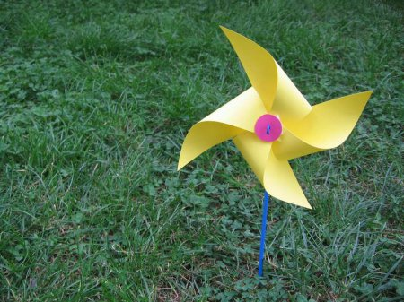But if those
stars are windmill toys they would be otherwise, but these stars
are not. But swasticas could be, lucky swastikas rotates
clockwise:
That unicode chart is very valuable source for grammatology (I
reclaim this term out of the postmodernist claws, this terms
belong into linguistics.
🜄 is ALCHEMICAL SYMBOL FOR WATER
🜅 is ALCHEMICAL SYMBOL FOR AQUAFORTIS
🜆 and 🜇 are ALCHEMICAL SYMBOLS FOR AQUA REGIA
🜃 is ALCHEMICAL SYMBOL FOR EARTH
🜂 is ALCHEMICAL SYMBOL FOR FIRE
🜁 is ALCHEMICAL SYMBOL FOR AIR
🁚 🂋very convenient, they have unicode for all domino, it will
be very convenient when we speak about them in context of their
symilarity to dice and empty slots of 🁣🀱 which were present in
falling stones of Bureus, they even have their backs.
Simple european cards & mahjong & tetragrams, greek
musical notation symbols I was speaking of above:
𝈝𝈞𝈟𝈠𝈡𝈢𝈣𝈤𝈥𝈦𝈧𝈨𝈩𝈪𝈫𝈬𝈭𝈮𝈯𝈰𝈱𝈲𝈳𝈴𝈵𝈶𝈷𝈸𝈹𝈺𝈻𝈼𝈽𝈾𝈿𝉀𝉁
and greek musical lemma 𝉅
and greek vocal notation symbols:
𝈀𝈁𝈂𝈃𝈄𝈅𝈆𝈇𝈈𝈉𝈊𝈋𝈌𝈍𝈎𝈏𝈐𝈑𝈒𝈓𝈔𝈕𝈖𝈗𝈘𝈙𝈚𝈛𝈜
There're also byzantine musical symbols, which have names
similar to their forms, which can be a source of knowledge on
history of alphabet:
it begins with some long list of unremarcable (only so tiny)
sings (not listed here) and suddenly in becomes more alphabetic:
BYZANTINE MUSICAL SYMBOL SIMANSIS ARSEOS TETRASIMOU 𝃥
BYZANTINE MUSICAL SYMBOL DIGRAMMA GG 𝃦
BYZANTINE MUSICAL SYMBOL DIFTOGGOS OU 𝃧
BYZANTINE MUSICAL SYMBOL STIGMA 𝃨
BYZANTINE MUSICAL SYMBOL ARKTIKO PA 𝃩
BYZANTINE MUSICAL SYMBOL ARKTIKO VOU 𝃪
and suddenly it goes directly alphabetic (though probably
others are only to arrange in the same order, I don't know who
made this unicode list and how competently did (s)he arrange
them into order
BYZANTINE MUSICAL SYMBOL ARKTIKO GA 𝃫
BYZANTINE MUSICAL SYMBOL ARKTIKO DI 𝃬
BYZANTINE MUSICAL SYMBOL ARKTIKO KE 𝃭
BYZANTINE MUSICAL SYMBOL ARKTIKO ZO 𝃮
BYZANTINE MUSICAL SYMBOL ARKTIKO NI 𝃯
BYZANTINE MUSICAL SYMBOL KENTIMATA NEO MESO 𝃰
and on it goes the same not alphabetic manner. but let's collect
all the alphabetic bysantine musical signs and will arrange them
into greek order:
BYZANTINE MUSICAL SYMBOL SIMANSIS THESEOS TETRASIMOU 𝃡
BYZANTINE MUSICAL SYMBOL SIMANSIS THESEOS TRISIMOU 𝃠
It's unbearable, why are they so small! I will return to this
topic some day, but from some other angle.
But it's the first time we saw digamma, which for some reason is
digramma:
Digramma as digamma. Gamma as gamut? Gramma as grammata (letter)
он
обучен грамоте, значет он знает буквы. или букву? Г
глаголь, глаголица.
глаголит. verb? talk? talk seem to be the closest to the
глаголь. verb=глагол, подсознание
подсказывает я не сразу уловил.
Диграммы Четыре символа (кит. 四种爻象 Si xiang, Сы сян, рус. «четыре
образа») — этап исходного космогенеза в представлении
китайской философии, порождается из предыдущего этапа двух
начал Инь и Ян; четыре свойства — «тьма», «свет»,
«твёрдость», «мягкость», происходящие из комбинаций
взаимодействия двух сил Инь и Ян.
MONOGRAM FOR YANG ⚊
MONOGRAM FOR YIN ⚋
Также графически изображаются в виде четырёх
комбинаций (четырёх двубитов) из двух черт-яо, поэтому часто в
западных переводах Четыре символа называются Диграммами.
Каждая из комбинаций имеет собственное
наименование (cлева направо):
Старая Инь 老陰, Молодой Ян 少陽, Молодая Инь 少陰, Старый Ян 老陽.
DIGRAM FOR GREATER YANG ⚌
DIGRAM FOR LESSER YIN ⚍
DIGRAM FOR LESSER YANG ⚎
DIGRAM FOR GREATER YIN ⚏
В свою очередь, Четыре символа
порождают Восемь триграмм.
TRIGRAM FOR HEAVEN ☰
TRIGRAM FOR LAKE ☱
TRIGRAM FOR FIRE ☲
TRIGRAM FOR THUNDER ☳
TRIGRAM FOR WIND ☴
TRIGRAM FOR WATER ☵
TRIGRAM FOR MOUNTAIN ☶
TRIGRAM FOR EARTH ☷
|
Символ Unicode |
Название |
Сторона света |
Стихия |
 |
☰ (U+2630) |
乾 Цянь |
Юг |
天 Небо |
 |
☷ (U+2637) |
坤 Кунь |
Север |
地 Земля |
 |
☳ (U+2633) |
震 Чжэнь |
Северо-Восток |
雷 Гром |
 |
☵ (U+2635) |
坎 Кань |
Запад |
水 Вода |
 |
☶ (U+2636) |
艮 Гэнь |
Северо-Запад |
山 Гора |
 |
☴ (U+2634) |
巽 Сюнь |
Юго-Запад |
風 Ветер |
 |
☲ (U+2632) |
離 Ли |
Восток |
火 Огонь |
 |
☱ (U+2631) |
兌 Дуй |
Юго-Восток |
澤 Озеро |
Помимо расположения триграмм по Фу-Си и
Вэнь-Вану, также известно расположение в виде семьи и
позабытая маодунская схема, найденная при археологических
раскопках.
Расположение триграмм в виде семьи — одна
из известных схем расположения триграмм,
основанная на следующем тексте в «Книге Перемен»:
В разделе «Шо гуа чжуань» (чжан 9) сказано:
乾天也，故稱乎父；坤地也，故稱乎母；
震一索而得男，故謂之長男；巽一索而得女，故謂之長女；
坎再索而得男，故謂之中男；離再索而得女，故謂之中女；
艮三索而得男，故謂之少男；兌三索而得女，故謂之少女。
В переводе Еремеева В. Е.:
Цянь — это Небо, поэтому
символизирует отца.
Кунь — это Земля, поэтому
символизирует мать.
Чжэнь — это предпочтение в первой
[черте], являющейся мужской, поэтому символизирует старшего
сына.
Сюнь — это предпочтение в первой
[черте], являющейся женской, поэтому символизирует старшую
дочь.
Кань — это предпочтение во второй
[черте], являющейся мужской, поэтому символизирует среднего
сына.
Ли — это предпочтение во второй
[черте], являющейся женской, поэтому символизирует среднюю
дочь.
Гэнь — это предпочтение в третьей
[черте], являющейся мужской, поэтому символизирует младшего
сына.
Дуй — это предпочтение в третьей
[черте], являющейся женской, поэтому символизирует младшую
дочь.
Таким образом, все триграммы можно представить
в виде семьи, состоящей из отца, матери и шестерых детей.
Графически такое расположение триграмм можно
представить в следующем виде:
В левой части располагается вся мужская
половина: отец, старший сын, средний сын, младший сын.
В правой части — вся женская половина:
мать, старшая дочь, средняя дочь, младшая дочь.
Последовательность триграмм по старшинству
обозначаемых ими членов семьи будет следующей: 乾, 坤, 震, 巽, 坎, 離,
艮, 兌: отец, мать, старший сын, старшая дочь, средний сын,
средняя дочь, младший сын, младшая дочь.
Another definition of digram is sequence of two words,
syllables, or letters.
Which of these are ⚊ & ⚋? I think
they are two primordial letters: T & B
Another definition of digram is a Taixuanjing symbol with two lines
But that link leads to wiki where it's said:
The text Tài Xuán Jīng ("Canon
of Supreme Mystery", Chinese: 太玄經)
was composed by the Confucian writer Yang Xiong (53 BCE-18 CE).
The first draft of this work was completed in 2 BCE (in the
decade before the fall of the Western Han
dynasty). During the Jin dynasty, an otherwise
unknown person named Fan Wang (Chinese: 范望)
salvaged the text and wrote a commentary on it, from which our
text survives today.
The Taixuanjing is a divinatory text
similar to, and inspired by, the I Ching (Yijing). Whereas the I
Ching is based on 64 binary hexagrams (sequences of six
horizontal lines each of which may be broken or unbroken), the
Taixuanjing employs 81 ternary tetragrams (sequences of
four lines, each of which may be unbroken, broken once, or
broken twice). Like the I Ching it may be consulted as
an oracle by casting yarrow stalks or a six-faced die to
generate numbers which define the lines of a tetragram, which
can then be looked up in the text.[further explanation needed]
A tetragram drawn without moving lines refers to the tetragram
description, while a tetragram drawn with moving lines refers
to the specific lines.
The monograms are:
Numerically the symbols can counted as ⚊ = 0, ⚋
= 1, 𝌀 = 2, and grouped into sets of four to count from 0 to
80. This is clearly intentional as this passage from chapter 8
of the Tài Xuán Jīng points out the principle of carrying and
place value.
Tai Xuan Jing Symbols[1][2]
Official
Unicode Consortium code chart (PDF) |
| |
0 |
1 |
2 |
3 |
4 |
5 |
6 |
7 |
8 |
9 |
A |
B |
C |
D |
E |
F |
| U+1D30x |
𝌀 |
𝌁 |
𝌂 |
𝌃 |
𝌄 |
𝌅 |
𝌆 |
𝌇 |
𝌈 |
𝌉 |
𝌊 |
𝌋 |
𝌌 |
𝌍 |
𝌎 |
𝌏 |
| U+1D31x |
𝌐 |
𝌑 |
𝌒 |
𝌓 |
𝌔 |
𝌕 |
𝌖 |
𝌗 |
𝌘 |
𝌙 |
𝌚 |
𝌛 |
𝌜 |
𝌝 |
𝌞 |
𝌟 |
| U+1D32x |
𝌠 |
𝌡 |
𝌢 |
𝌣 |
𝌤 |
𝌥 |
𝌦 |
𝌧 |
𝌨 |
𝌩 |
𝌪 |
𝌫 |
𝌬 |
𝌭 |
𝌮 |
𝌯 |
| U+1D33x |
𝌰 |
𝌱 |
𝌲 |
𝌳 |
𝌴 |
𝌵 |
𝌶 |
𝌷 |
𝌸 |
𝌹 |
𝌺 |
𝌻 |
𝌼 |
𝌽 |
𝌾 |
𝌿 |
| U+1D34x |
𝍀 |
𝍁 |
𝍂 |
𝍃 |
𝍄 |
𝍅 |
𝍆 |
𝍇 |
𝍈 |
𝍉 |
𝍊 |
𝍋 |
𝍌 |
𝍍 |
𝍎 |
𝍏 |
| U+1D35x |
𝍐 |
𝍑 |
𝍒 |
𝍓 |
𝍔 |
𝍕 |
𝍖 |
|
|
|
|
|
|
|
|
|
Notes
- 1.^
As of Unicode version 11.0
- 2.^
Grey areas indicate non-assigned code points
|
In the canonical I Ching, the hexagrams
are arranged in an order dubbed the King Wen sequence after King
Wen of Zhou, who founded the Zhou dynasty and supposedly
reformed the method of interpretation. The sequence generally
pairs hexagrams with their upside-down equivalents, although
in eight cases hexagrams are paired with their inversion.
Another order, found at Mawangdui in 1973, arranges the
hexagrams into eight groups sharing the same upper trigram.
But the oldest known manuscript, found in 1987 and now held by
the Shanghai Library, was almost certainly arranged in the
King Wen sequence, and it has even been proposed that a
pottery paddle from the Western Zhou period contains four
hexagrams in the King Wen sequence.
Whichever of these arrangements is older, it is not evident
that the order of the hexagrams was of interest to the
original authors of the Zhou yi. The assignment of
numbers, binary or decimal, to specific hexagrams is a modern
invention.
The following table numbers the hexagrams in
King Wen order.
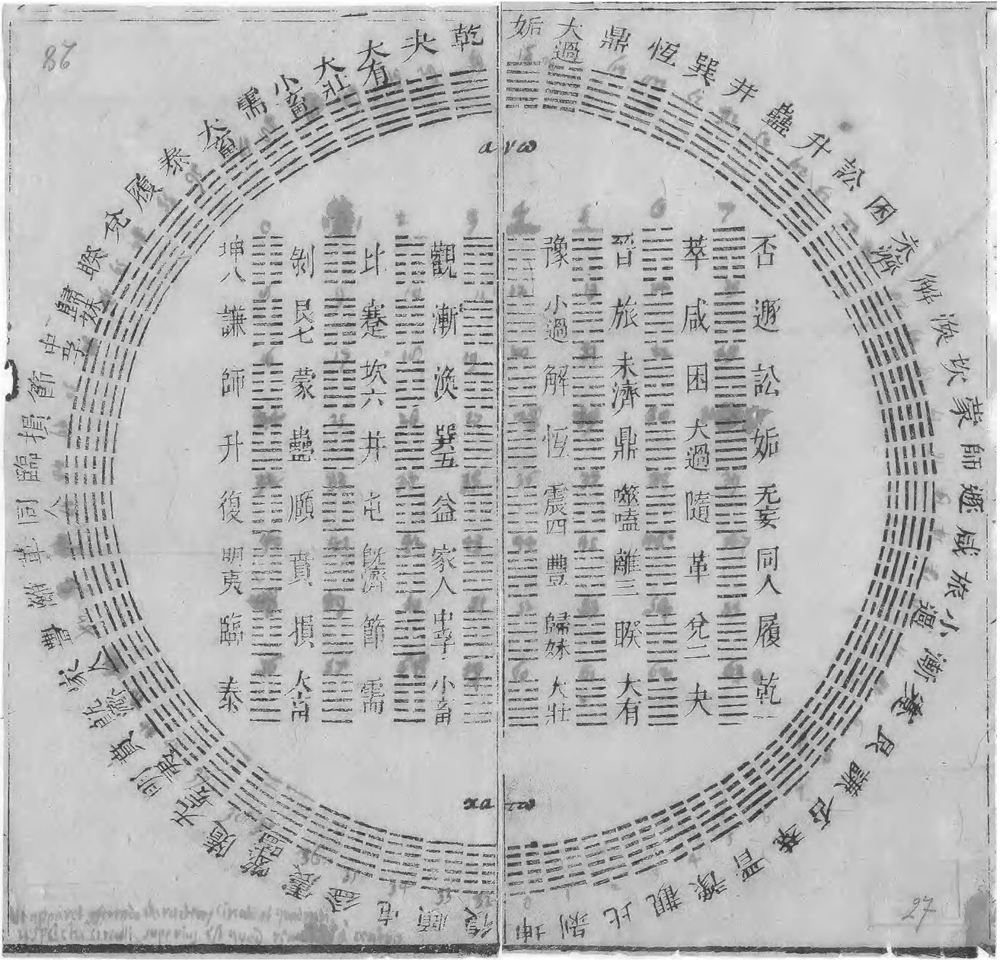
I am a collector, I collect marvelous items, I don't know if
we'll need this image in this book, but here it is anyway.
------------------
Now just to keep on going, I'll copy-pase some more interesting
byzantine musical symbols:
BYZANTINE MUSICAL SYMBOL THITA 𝀔
BYZANTINE MUSICAL SYMBOL OLIGON ARCHAION 𝀕
BYZANTINE MUSICAL SYMBOL GORGON ARCHAION 𝀖
BYZANTINE MUSICAL SYMBOL PSILON 𝀗
BYZANTINE MUSICAL SYMBOL CHAMILON 𝀘
BYZANTINE MUSICAL SYMBOL VATHY 𝀙
BYZANTINE MUSICAL SYMBOL ISON ARCHAION 𝀚
BYZANTINE MUSICAL SYMBOL KENTIMA ARCHAION 𝀛
BYZANTINE MUSICAL SYMBOL KENTIMATA ARCHAION 𝀜
BYZANTINE MUSICAL SYMBOL SAXIMATA 𝀝
BYZANTINE MUSICAL SYMBOL PARICHON 𝀞
BYZANTINE MUSICAL SYMBOL STAVROS APODEXIA 𝀟
BYZANTINE MUSICAL SYMBOL OXEIAI ARCHAION 𝀠
They even have phaistos disc signs:
𐇐𐇑𐇒𐇓𐇔𐇕𐇖𐇗𐇘𐇙𐇚𐇛𐇜𐇝𐇞𐇟𐇠𐇡𐇢𐇣𐇤𐇥𐇦𐇧𐇨𐇩𐇪𐇫𐇬𐇭𐇮𐇯𐇰𐇱𐇲𐇳𐇴𐇵𐇶𐇷𐇸𐇹𐇺𐇻𐇼
which is not even necessarily genuine:
https://tierneylab.blogs.nytimes.com/2008/08/07/why-not-test-the-phaistos-disc/
and the unicode vault goes on, I've no wish to paste it all
here,
you can wander it yourselves:
https://www.fileformat.info/info/unicode/category/So/list.htm
I will collect some more of what catches my attention:
GREEK SYMBOL TAU RHO 𐆠
CHI RHO ☧
PENTAGRAM ⛤
RIGHT-HANDED INTERLACED PENTAGRAM ⛥
LEFT-HANDED INTERLACED PENTAGRAM ⛦
INVERTED PENTAGRAM ⛧
I can only guess what is the difference between those three
pentagrams, but they all have different unicode: U+26E4, U+26E5,
U+26E6
It weirdly relates to this work, because I
was speaking of three mothers, three fates, three 6s (о трёх полах? серьёзо? some of people are in
the middle)
Doesn't star stand for Venus (then the U+26E7 is the initial
form?)
Aren't 3 6s UVW (all stand for venus) notice, that -us is a
male suffix. I was told in hebrew grammar some gender
twist took place in the past. It could be a part of that reform.
together with twist of м & ж.
Ain't ⛤⛥⛦ stand for 666? but they have 5 ends! and that's how
many letters per Bureus die. oh how
weirdly irresponsible are the previous two words! (if we
believe in magic, but it hardly affects dead)
What if 666 is initially 555? What if this unicode chart has
nothing to do with reality, but was some voluntaristic act.
Those right-hand & left-hand relates pentagrams to
swastikas, the biggest star is sun. But I never saw sun as ⛧, I
only saw it as one of these stars: 🟇🟈🟍🟑🟔 (I have to make an
experiment, but it's night)
🟍🟍🟍 could be 666, and I saw this sign in some p!nk's video
and somewhere else. and Jewsus named jews sinagogue of Satan and
that their father is Devil and Jewish god in bible kills and
does all sorts of wicked things & commands. And according to
esoteric part of christianity world is in the hands of Satan
until the second coming. and you know jews do rule the world. So
now I need to talk to jews, I used to learn from them hebrew,
secular jews are quite fine, but religious jews say they made
communism to russians and make a lot of trouble in the world
before that and today. But it was religious jews who were
shocked by my appearance when I tried to ask questions. I think
they're all retarded one way or another. Genetic therapies come,
russians are also retarded in some other way.
I know this stuff is not scientific enough, but here I only
guess, this part of the book will be rewritten.
(and here
is the following part, which is even more something between
good edit and mere draft)


{kind=link}
{kind=link}
{kind=link}
{kind=link}
{kind=link}
{kind=link}